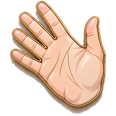

<!doctype html><meta name="viewport" content="width=device-width,initial-scale=1"><style>
  :root{
    /* Cool, crisp surfaces built on the actual Hackensack Meridian brand
       blues. The previous warm cream palette had no relationship to the
       navy/cyan logo, which is what made the app feel visually incoherent. */
    --bg:#F4F6FA;
    --bg-hi:#FAFBFD;
    --paper:#FFFFFF;
    --ink:#151C2C;
    --ink-soft:#5A6478;
    --ink-faint:#98A1B3;
    --line:#E2E7F0;
    --line-soft:#EEF1F7;
    --accent:#0F5FA6;
    --accent-2:#2E8BD0;
    --accent-soft:#E8F1FA;
    --navy:#252E6D;
    --cyan:#01B8E6;
    --danger:#C2485C;
    --danger-soft:#FBECEF;
    --good:#2F7D5B;
    --good-soft:#E7F5EE;
    --mono:'IBM Plex Mono', ui-monospace, monospace;
    --sans:'Inter', system-ui, -apple-system, sans-serif;
    --serif:'IBM Plex Serif', Georgia, serif;
    --r-sm:10px; --r-md:14px; --r-lg:20px;
    /* Layered, navy-tinted shadows — closer to how real surfaces cast light
       than a single flat drop shadow. */
    --sh-1:0 1px 2px rgba(21,28,44,0.06), 0 6px 16px -8px rgba(21,28,44,0.18);
    --sh-2:0 2px 4px rgba(21,28,44,0.07), 0 14px 30px -12px rgba(21,28,44,0.26);
    --sh-3:0 8px 16px rgba(21,28,44,0.10), 0 32px 64px -14px rgba(21,28,44,0.32);
    --ease:cubic-bezier(.2,.8,.2,1);
    --ic-fill:var(--accent);
    --ic-line:var(--ink);
    /* Liquid-glass tokens. Real backdrop blur is reserved for the few fixed
       chrome surfaces (header, tab bar, search, sheets) — blurring dozens of
       scrolling cards would cost far more than it shows. Cards instead get
       translucency plus a bright top edge, which is what actually reads as
       glass once something is behind them. */
    --glass-bg:rgba(255,255,255,0.72);
    --glass-edge:rgba(255,255,255,0.75);
    --glass-shade:rgba(21,28,44,0.10);
    --glass-blur:saturate(180%) blur(20px);
    /* Inlined chevron used as a CSS mask so tile footers can render an
       arrow without every tile carrying another inline SVG node. */
    --chev-mask:url("data:image/svg+xml,%3Csvg xmlns='http://www.w3.org/2000/svg' viewBox='0 0 24 24' fill='none' stroke='%23000' stroke-width='3' stroke-linecap='round' stroke-linejoin='round'%3E%3Cpath d='M9 6l6 6-6 6'/%3E%3C/svg%3E");
  }
  /* Dark theme — same navy/cyan brand identity, inverted surfaces. Accent
     colors stay mostly as-is since they already read fine on a dark ground;
     only the base surface/text/border/shadow variables change. */
  html[data-theme="dark"]{
    --bg:#0E1420;
    --bg-hi:#141B29;
    --paper:#1A2233;
    --ink:#EBEFF7;
    --ink-soft:#AEB7C9;
    --ink-faint:#707C93;
    --line:#2B354A;
    --line-soft:#232C3E;
    --accent:#4C9FE0;
    --accent-2:#6BB4EA;
    --accent-soft:#1B3350;
    --navy:#7C93E8;
    --cyan:#4FD8F5;
    --danger:#E17B8C;
    --danger-soft:#3A2029;
    --good:#6FC79C;
    --good-soft:#16302A;
    --sh-1:0 1px 2px rgba(0,0,0,0.3), 0 8px 20px -10px rgba(0,0,0,0.6);
    --sh-2:0 2px 4px rgba(0,0,0,0.35), 0 16px 32px -12px rgba(0,0,0,0.7);
    --sh-3:0 8px 16px rgba(0,0,0,0.4), 0 32px 64px -14px rgba(0,0,0,0.8);
  }
  /* ---------- Emphasis inside a line ----------
     The practice section reads well because each line carries one word that
     means something while the rest stays quiet. Measured across the app, the
     screens that feel flat are the ones where every word is the same ink:
     Recent Updates was 100% default ink, False Friends 93% with 2% of its
     33,000 characters above weight 500. These are that pattern, named by the
     ROLE a word plays rather than the screen it sits on. */
  .em-key   { font-weight:650; color:var(--ink); }
  .em-good  { font-weight:650; color:var(--good); }
  .em-bad   { font-weight:650; color:var(--danger); }
  .em-accent{ font-weight:650; color:var(--accent); }
  .em-quiet { font-weight:500; color:var(--ink-faint); }
  .em-num   { font-weight:650; font-variant-numeric:tabular-nums; }
  .em-flag  { font-size:10px; font-weight:650; letter-spacing:.09em; text-transform:uppercase; }

  *{box-sizing:border-box;}
  ::selection{background:var(--accent-soft); color:var(--ink);}
  /* Tabular figures keep the count badges and stats optically aligned instead
     of jittering as digits change width. */
  .count, .stat b, .chart-id, .domain-bar-pct, .quiz-counter, .score-pct,
  .activity-time, .chat-time, .home-tile-count{ font-variant-numeric:tabular-nums; }
  body{
    margin:0; color:var(--ink); font-family:var(--sans); font-weight:500;
    -webkit-font-smoothing:antialiased;
    /* Fixed diamond-mosaic texture echoing the logo mark. background-attachment
       keeps it stationary while content scrolls, so it reads as a surface the
       app sits on rather than something moving behind it. */
    background-color:var(--bg);
    /* A soft colour mesh drawn from the Hackensack palette: four large,
       very low-opacity pools that drift apart at the corners, plus a fine
       grain on top. Kept fixed so it reads as a surface the app rests on
       rather than something scrolling behind it, and it gives the glass
       surfaces something worth blurring. Nothing repeats or tiles, so there
       is no pattern for the eye to lock onto. */
    background-image:
      url("data:image/svg+xml,%3Csvg xmlns='http://www.w3.org/2000/svg' width='160' height='160'%3E%3Cfilter id='n'%3E%3CfeTurbulence type='fractalNoise' baseFrequency='0.85' numOctaves='3'/%3E%3C/filter%3E%3Crect width='160' height='160' filter='url(%23n)' opacity='0.35'/%3E%3C/svg%3E"),
      radial-gradient(900px 700px at 88% -6%,  rgba(1,184,230,0.10) 0%, transparent 60%),
      radial-gradient(760px 620px at 6% 12%,   rgba(37,46,109,0.06) 0%, transparent 62%),
      radial-gradient(880px 700px at 96% 62%,  rgba(0,121,189,0.06) 0%, transparent 62%),
      radial-gradient(1000px 780px at -8% 104%, rgba(1,184,230,0.07) 0%, transparent 64%);
    background-repeat:repeat, no-repeat, no-repeat, no-repeat, no-repeat;
    background-attachment:fixed, fixed, fixed, fixed, fixed;
    background-size:160px 160px, auto, auto, auto, auto;
    background-blend-mode:overlay, normal, normal, normal, normal;
  }
  /* Global top bar: one slim row holding search, quick actions, and the
     brand. Replaces the old stacked logo banner + illustrated greeter strip,
     which together consumed ~170px of every screen before any content. */
  /* Installed as a PWA there's no browser chrome, so the page starts at the
     very top of the screen and the header would sit underneath the clock and
     battery. The top safe-area inset is added as padding (it's 0 in a normal
     browser tab, so this is harmless there). */
  .topbar-global{
    position:sticky; top:0; z-index:30; flex-shrink:0;
    height:calc(64px + env(safe-area-inset-top, 0px));
    padding-top:env(safe-area-inset-top, 0px);
    display:flex; align-items:center; gap:14px; padding-left:18px; padding-right:18px;
    background:var(--glass-bg);
    -webkit-backdrop-filter:var(--glass-blur); backdrop-filter:var(--glass-blur);
    border-bottom:1px solid var(--glass-edge);
    box-shadow:0 1px 0 var(--glass-shade);
  }
  /* Older engines without backdrop-filter get an opaque bar rather than a
     see-through one that would make the text unreadable. */
  @supports not ((backdrop-filter:blur(1px)) or (-webkit-backdrop-filter:blur(1px))){
    .topbar-global{ background:var(--paper); }
  }
  /* Back sits left of the brand and only appears when there's history to
     unwind, so Home doesn't show a dead control. */
  .tg-back{
    display:none; width:36px; height:36px; flex-shrink:0; border-radius:50%;
    border:1px solid var(--line); background:var(--paper); color:var(--ink-soft);
    cursor:pointer; align-items:center; justify-content:center;
    transition:background .15s var(--ease), color .15s var(--ease);
  }
  .tg-back.is-visible{ display:flex; }
  .tg-back:hover{ background:var(--bg-hi); color:var(--ink); }
  .tg-back svg{ width:19px; height:19px; }

  /* Brand lockup: the diamond mark beside a live-text wordmark, so it stays
     crisp at any size and the facility name is real text rather than pixels. */
  .tg-brand{
    display:flex; align-items:center; gap:11px; min-width:0; flex:1;
    background:none; border:none; padding:0; cursor:pointer; text-align:left;
    font-family:inherit;
  }
  .tg-mark{ height:34px; width:auto; flex-shrink:0; display:block; }
  .tg-brand-text{ display:flex; flex-direction:column; min-width:0; }
  .tg-brand-name{
    font-family:var(--sans); font-size:16px; font-weight:700; letter-spacing:-.015em;
    color:var(--ink); line-height:1.2; white-space:nowrap;
  }
  .tg-brand-sub{
    font-family:var(--sans); font-size:11px; font-weight:500; color:var(--ink-soft);
    line-height:1.3; overflow:hidden; text-overflow:ellipsis; white-space:nowrap;
  }
  .tg-right{ display:flex; align-items:center; gap:8px; margin-left:auto; flex-shrink:0; }
  .tg-icon-btn{
    width:38px; height:38px; border-radius:50%; border:1px solid var(--line);
    background:var(--paper); color:var(--ink-soft); cursor:pointer; position:relative;
    display:flex; align-items:center; justify-content:center;
    transition:background .15s var(--ease), color .15s var(--ease);
  }
  .tg-icon-btn:hover{ background:var(--bg-hi); color:var(--ink); }
  .tg-icon-btn svg{ width:18px; height:18px; }
  .tg-badge{
    position:absolute; top:-3px; right:-3px; min-width:17px; height:17px; border-radius:999px;
    background:var(--danger); color:#fff; font-family:var(--sans); font-size:10px; font-weight:700;
    display:flex; align-items:center; justify-content:center; padding:0 4px;
  }
  .tg-avatar{
    width:36px; height:36px; border-radius:50%; flex-shrink:0; border:none; cursor:pointer;
    display:flex; align-items:center; justify-content:center; position:relative;
    font-family:var(--sans); font-size:12.5px; font-weight:700; color:#fff;
    background:linear-gradient(140deg, var(--accent-2), var(--navy));
  }
  .tg-avatar::after{
    content:''; position:absolute; top:-1px; right:-1px; width:11px; height:11px;
    border-radius:50%; background:var(--danger); border:2px solid var(--paper);
    opacity:0; transition:opacity .15s var(--ease);
  }
  .tg-avatar.has-photo{ background-size:cover; background-position:center; color:transparent; }
  .tg-avatar.has-alert::after{ opacity:1; }
  .tg-divider{ width:1px; height:28px; background:var(--line); margin:0 2px; }
  /* Sync status. Hidden while everything is saved and online — it only
     appears when there's something the person would want to know about. */
  .tg-sync{
    display:none; align-items:center; gap:6px; height:30px; padding:0 11px;
    border-radius:999px; font-family:var(--sans); font-size:11.5px; font-weight:600;
    white-space:nowrap; flex-shrink:0;
  }
  .tg-sync.is-visible{ display:flex; }
  .tg-sync.is-offline{ background:#FBEEDC; color:#8A6420; }
  .tg-sync.is-pending{ background:#E8EEF6; color:#31557F; }
  .tg-sync.is-synced{ background:#E4F3EA; color:#2C6A48; }
  .tg-sync-dot{ width:7px; height:7px; border-radius:50%; background:currentColor; flex-shrink:0; }
  .tg-sync.is-pending .tg-sync-dot{ animation:syncPulse 1.1s ease-in-out infinite; }
  @keyframes syncPulse{ 0%,100%{opacity:1;} 50%{opacity:.25;} }
  @media (prefers-reduced-motion:reduce){ .tg-sync.is-pending .tg-sync-dot{ animation:none; } }
  @media (max-width:520px){ .tg-sync span:not(.tg-sync-dot){ display:none; } .tg-sync{ padding:0 8px; } }
  .tg-logo{ height:34px; width:auto; object-fit:contain; display:block; }
  @media (max-width:900px){
    .topbar-global{
      height:calc(58px + env(safe-area-inset-top, 0px));
      padding-top:env(safe-area-inset-top, 0px);
      padding-left:14px; padding-right:14px; gap:10px;
    }
    .tg-search-btn{ display:none; }
    .tg-logo{ height:26px; }
    .tg-icon-btn{ width:34px; height:34px; }
  }
  @media (max-width:520px){
    .tg-divider, .tg-logo{ display:none; }
    /* The facility name stays on phones — it's the line that says which
       hospital this is. It shrinks and ellipses rather than disappearing. */
    .tg-mark{ height:29px; }
    .tg-brand{ gap:9px; }
    .tg-brand-name{ font-size:14.5px; }
    .tg-brand-sub{ font-size:9.5px; }
    .topbar-global{ gap:8px; padding-left:12px; padding-right:12px; }
    .tg-icon-btn{ width:32px; height:32px; }
    .tg-icon-btn svg{ width:16px; height:16px; }
    .tg-avatar{ width:32px; height:32px; font-size:11.5px; }
  }
  .app{display:flex; min-height:calc(100vh - 64px - env(safe-area-inset-top, 0px));}
  ::-webkit-scrollbar{width:10px; height:10px;}
  ::-webkit-scrollbar-thumb{background:#DEDACB; border-radius:8px; border:2px solid transparent; background-clip:padding-box;}
  ::-webkit-scrollbar-track{background:transparent;}

  /* ---------- Sidebar ---------- */
  /* Dark navy sidebar — the nav is chrome, not content, so it recedes
     behind the light working area instead of competing with it. */
  .sidebar{
    width:262px; flex-shrink:0; position:sticky; top:calc(64px + env(safe-area-inset-top, 0px)); height:calc(100vh - 64px - env(safe-area-inset-top, 0px)); overflow-y:auto;
    background:#16213C;
    border-right:none; padding:18px 0 12px 0;
    display:flex; flex-direction:column; gap:2px;
    --side-ink:#E7ECF7; --side-dim:#93A0BD; --side-hover:rgba(255,255,255,0.07);
  }
  html[data-theme="dark"] .sidebar{ background:#0C1322; }
  .sidebar::-webkit-scrollbar{ width:8px; }
  .sidebar::-webkit-scrollbar-thumb{ background:rgba(255,255,255,0.13); border-radius:8px; }

  /* Flat nav rows replace the old tile cards. In a sidebar, a scannable
     list beats a grid of boxes: it fits far more destinations in the same
     height and puts every label on the same left edge. */
  .side-nav{ display:flex; flex-direction:column; gap:1px; padding:0 10px; }
  .side-row{
    display:flex; align-items:center; gap:11px; width:100%; padding:9px 12px;
    border-radius:10px; border:none; background:transparent; cursor:pointer;
    font-family:var(--sans); font-size:13.5px; font-weight:500; color:var(--side-dim);
    text-align:left; position:relative; transition:background .15s var(--ease), color .15s var(--ease);
  }
  .side-row:hover{ background:var(--side-hover); color:var(--side-ink); }
  .side-row.is-active{ background:var(--accent); color:#fff; font-weight:600; }
  /* Indented, slightly smaller, with a hairline spine so a subgroup reads as
     belonging to the domain above it rather than being a peer. */
  .side-row.is-nested{
    margin-left:22px; padding-left:12px; font-size:12.5px;
    border-left:1px solid rgba(255,255,255,0.14); border-radius:0 10px 10px 0;
  }
  .side-row.is-nested .side-row-icon{ width:16px; height:16px; }
  .side-row.is-nested .side-row-icon svg{ width:16px; height:16px; }
  .side-row-icon{ width:19px; height:19px; flex-shrink:0; display:flex; align-items:center; justify-content:center; }
  .side-row-icon svg{ width:19px; height:19px; }
  .side-row-name{ flex:1; min-width:0; line-height:1.3; }
  .side-row-count{ font-size:11px; color:var(--side-dim); font-variant-numeric:tabular-nums; flex-shrink:0; }
  .side-row.is-active .side-row-count{ color:rgba(255,255,255,0.85); }
  .side-row-badge{
    min-width:19px; height:19px; border-radius:999px; background:var(--danger); color:#fff;
    font-size:10.5px; font-weight:700; display:flex; align-items:center; justify-content:center;
    padding:0 5px; flex-shrink:0;
  }
  .side-row-chev{ width:14px; height:14px; color:var(--side-dim); flex-shrink:0; opacity:.7; }
  .side-row-chev svg{ width:14px; height:14px; }
  .side-label{
    font-family:var(--sans); font-size:10.5px; font-weight:700; letter-spacing:.09em;
    text-transform:uppercase; color:#6E7C9C; padding:18px 22px 7px 22px;
    display:flex; align-items:center; justify-content:space-between; cursor:pointer;
  }
  .side-label svg{ width:15px; height:15px; transition:transform .2s var(--ease); }
  .side-label.is-collapsed svg{ transform:rotate(-90deg); }
  .side-foot{
    margin-top:auto; padding:14px 16px 4px 16px; border-top:1px solid rgba(255,255,255,0.09);
    display:flex; align-items:center; gap:10px;
  }
  .side-foot-avatar{
    width:34px; height:34px; border-radius:50%; flex-shrink:0; color:#fff;
    display:flex; align-items:center; justify-content:center;
    font-family:var(--sans); font-size:12.5px; font-weight:700;
    background:linear-gradient(140deg, var(--accent-2), var(--navy));
  }
  .side-foot-main{ flex:1; min-width:0; }
  .side-foot-name{
    font-size:13px; font-weight:600; color:var(--side-ink); line-height:1.3;
    overflow:hidden; text-overflow:ellipsis; white-space:nowrap;
  }
  .side-foot-role{ font-size:11px; color:var(--side-dim); }
  .side-foot-btn{
    width:30px; height:30px; border-radius:9px; border:none; background:transparent;
    color:var(--side-dim); cursor:pointer; display:flex; align-items:center; justify-content:center;
    flex-shrink:0; transition:background .15s var(--ease), color .15s var(--ease);
  }
  .side-foot-btn:hover{ background:var(--side-hover); color:var(--side-ink); }
  .side-foot-btn svg{ width:16px; height:16px; }

  /* The wordmark moved to the global header; the sidebar keeps only the
     HIPAA reminder, so the name isn't printed twice on one screen. */
  .brand{
    padding:4px 16px 14px 16px; margin-bottom:8px; position:relative;
    flex-shrink:0; /* without this the flex column crushes the header to nothing */
  }
  .brand::after{
    content:""; position:absolute; left:20px; right:20px; bottom:0; height:1px;
    background:linear-gradient(90deg, var(--line), transparent); z-index:1;
  }
  .brand-mark{
    display:flex; align-items:center; gap:11px; margin-bottom:11px;
  }
  .brand-glyph{
    width:38px; height:38px; border-radius:11px; flex-shrink:0;
    background:linear-gradient(145deg, #0079BD, #252E6D);
    display:flex; align-items:center; justify-content:center;
    box-shadow:0 6px 14px -5px rgba(37,46,109,0.55), inset 0 1px 0 rgba(255,255,255,0.28);
    position:relative; overflow:hidden;
  }
  .brand-glyph::after{
    content:""; position:absolute; inset:0;
    background:linear-gradient(115deg, rgba(255,255,255,0.42) 0%, transparent 46%);
  }
  .brand-glyph svg{ width:19px; height:19px; position:relative; z-index:1; }
  .brand-wordmark{ min-width:0; }
  .brand-title{
    font-family:var(--sans); font-size:19px; font-weight:700; letter-spacing:-.02em; line-height:1.1;
    background:linear-gradient(100deg, #252E6D 0%, #0079BD 55%, #01B8E6 100%);
    -webkit-background-clip:text; background-clip:text;
    -webkit-text-fill-color:transparent; color:#252E6D;
    margin:0;
  }
  .brand-sub{
    font-family:var(--mono); font-size:9px; letter-spacing:.15em; text-transform:uppercase;
    color:var(--ink-faint); margin-top:4px;
  }
  .brand-meta{
    display:flex; align-items:center; gap:7px; font-size:11px; color:var(--ink-soft); line-height:1.5;
  }
  .brand-dot{
    width:6px; height:6px; border-radius:50%; background:#3FA88E; flex-shrink:0;
    box-shadow:0 0 0 3px rgba(63,168,142,0.18);
  }

  .hipaa-notice{
    display:flex; align-items:flex-start; gap:8px; margin-top:12px; padding:10px 11px;
    background:#FBF3E3; border:1px solid #E8D7B0; border-radius:10px;
    font-size:10.5px; line-height:1.5; color:#7A5D28;
  }
  .hipaa-notice svg{ width:14px; height:14px; flex-shrink:0; margin-top:1px; color:#B8923E; }
  .hipaa-notice-inline{
    display:flex; align-items:center; gap:7px; margin:-4px 0 16px 0; padding:8px 12px;
    background:#FBF3E3; border:1px solid #E8D7B0; border-radius:20px;
    font-size:11px; color:#7A5D28; width:fit-content;
  }
  .hipaa-notice-inline svg{ width:13px; height:13px; flex-shrink:0; color:#B8923E; }

  .tab{
    position:relative; display:flex; align-items:center; gap:10px;
    padding:10px 16px 10px 12px; margin:0 8px 0 10px; border-radius:9px 20px 20px 9px;
    cursor:pointer; border:none; background:transparent; text-align:left;
    font-family:var(--sans); font-size:13px; color:var(--ink-soft); width:calc(100% - 18px);
    transition:background .16s var(--ease), color .16s var(--ease);
  }
  .tab:hover{ background:rgba(255,255,255,0.7); color:var(--ink); }
  .tab:active{ background:rgba(255,255,255,0.9); transition-duration:.08s; }
  .tab.active{
    background:var(--paper); font-weight:600; color:var(--ink);
    box-shadow:var(--sh-1), inset 0 0 0 1px var(--line-soft);
  }
  .tab .flag{
    width:9px; height:9px; border-radius:3px; flex-shrink:0; transform:rotate(45deg);
    box-shadow:0 0 0 4px color-mix(in srgb, currentColor 14%, transparent);
  }
  .tab .name{flex:1; line-height:1.3;}
  .tab .count{
    font-family:var(--mono); font-size:10px; color:var(--ink-faint);
    background:var(--bg); border:1px solid var(--line); border-radius:20px; padding:2px 7px;
  }
  .tab.active .count{ background:var(--accent-soft); color:var(--accent); border-color:transparent; }
  .tab:active{ transform:scale(0.98); }

  .flag.icon-flag{
    width:24px; height:24px; border-radius:8px; flex-shrink:0;
    display:flex; align-items:center; justify-content:center; box-shadow:none; transition:transform .2s var(--ease);
  }
  .flag.icon-flag svg{ width:13px; height:13px; }
  .tab:hover .flag.icon-flag{ transform:scale(1.1) rotate(-4deg); }

  @keyframes contentFadeIn{ from{opacity:0; transform:translateY(6px);} to{opacity:1; transform:translateY(0);} }
  .content-fade{ animation:contentFadeIn .38s var(--ease); }

  /* Re-rendering the screen you are already on is a data refresh, not an
     arrival — replaying the fade-and-rise on every update is what made
     startup look like the page was reloading itself two or three times.
     Listed explicitly rather than blanket-disabling animations inside
     #content, so ongoing ones (the speaking pulse, the sync dot, the jump
     flash) still run. Navigating to a screen removes the class and the
     entrances play as before. */
  #content.no-enter,
  #content.no-enter .home-tile,
  #content.no-enter .domain-family,
  #content.no-enter .domain-group-children,
  #content.no-enter .card,
  #content.no-enter .doc-card,
  #content.no-enter .quiz-card,
  #content.no-enter .quiz-explain,
  #content.no-enter .tr-result{ animation:none; }
  /* Global clearance from the fixed Home/Name buttons at the bottom of the
     screen — reserved once here so no individual screen has to worry about
     it, regardless of how short its content is. */
  @media (max-width:760px){
    #content{ padding-bottom:90px; }
  }

  /* ---------- Home dashboard ---------- */
  /* Photo hero. The image is a separate file (hero.jpg) rather than an
     inlined data URI so it stays cacheable and doesn't bloat the HTML.
     Text sits on a dark gradient scrim, not the raw photo, so the greeting
     stays legible no matter how bright the sky is that day. */
  .home-greeting{
    /* Full-bleed: pulled out to the edges of the content column by the exact
       amount of its padding, and out of the top so it sits flush under the
       header. Overridden per breakpoint below to match each padding value. */
    /* Square edges here: the curve belongs to the page sheet below, which
       rises over the photo (see ::after) rather than the photo curving away.
       That's the inverse of a rounded-bottom card and reads as one continuous
       surface instead of two stacked panels. */
    position:relative; padding:34px 48px 74px 48px;
    margin:-40px -48px 0 -48px;
    border-radius:0; overflow:hidden; isolation:isolate;
    background:transparent;
    /* No box-shadow. It outlines the element's box regardless of how
       transparent the content inside is, so it drew a crisp edge right where
       the photo had faded to nothing — that was the line that survived every
       attempt to fix the fade itself. */
    box-shadow:none;
    /* Column now: brand row pinned to the top, greeting block to the bottom. */
    display:flex; flex-direction:column; align-items:stretch; gap:14px;
    min-height:232px;
  }
  /* Keep the greeting above both. */
  .home-greeting-text, .home-greeting-brand{ z-index:3; }
  /* Depth.
     The photo drifts more slowly than the page as you scroll, which is what
     reads as the building sitting BEHIND the glass rather than printed on it.

     The movement is on an inner layer, never on this element: the alpha mask
     below is what shapes the dome the page rises into, and translating the
     masked element would drag the fade along with the picture. So the mask
     and the frame stay put here, and only the image moves inside them.

     The inner layer is deliberately taller than its frame, so there is room
     to move without ever exposing an edge. */
  .home-greeting-photo{
    position:absolute; inset:0; z-index:-2; overflow:hidden;
    /* Concave instead of convex: the transparent area is a dome rising from
       the bottom centre, so the page sweeps UP into the photo and the image
       persists at the two bottom corners. A plain vertical fade with rounded
       corners did the reverse — the photo curved away from the page. Still an
       alpha mask, so nothing is painted and there's no edge to see. */
    -webkit-mask-image:radial-gradient(128% 46% at 50% 104%,
      rgba(0,0,0,0) 46%, rgba(0,0,0,0.55) 66%, rgba(0,0,0,0.9) 82%, #000 94%);
            mask-image:radial-gradient(128% 46% at 50% 104%,
      rgba(0,0,0,0) 46%, rgba(0,0,0,0.55) 66%, rgba(0,0,0,0.9) 82%, #000 94%);
  }
  /* Three layers, one job each — they must not share a transform, because
     whoever writes second wins:
       .home-greeting-photo         the frame. Holds the mask. Never moves.
       .home-greeting-photo-inner   scroll parallax, written by JS.
       .home-greeting-photo-drift   the slow wander, a CSS animation. */
  .home-greeting-photo-inner{
    position:absolute; inset:-28% 0;   /* headroom for the parallax */
    will-change:transform;
    transform:translate3d(0,0,0);      /* its own compositor layer */
  }
  .home-greeting-photo-drift{
    position:absolute; inset:0;
    /* 50% 40%, not the old 62% 55%. The photo is a tall portrait, so cover
       always uses its full width here and only the vertical number does
       anything. 40% frames the blossom canopy and keeps the wayfinding
       sign out of the bottom corner, where the dome mask was cutting it
       through the middle of the hospital's own name. */
    /* ?v= is not decoration. hero.jpg is not in the service worker's PRECACHE
       list, so it is served stale-while-revalidate: the cached copy comes back
       first and the new one is only fetched for NEXT time. Swapping the photo
       therefore showed the OLD one for a whole load, which is exactly what
       happened on the blossom swap. Changing the URL sidesteps both that cache
       and the browser's own. Bump this token whenever hero.jpg is replaced, and
       keep it identical to the preload tag near the top of the file, or the
       image is downloaded twice. */
    background:url('./hero.jpg?v=blossom1') 50% 40% / cover no-repeat;
    will-change:transform;
    /* Starts already overscanned, so even at the near end of the cycle the
       image covers its frame and no edge can appear. `alternate` makes it
       breathe back the way it came instead of snapping to the start.

       The overscan is what limits the travel: at scale S the image hangs over
       each edge by (S-1)/2, so a translate beyond that would pull a corner
       into view. At 1.10 that is 5% of headroom against a 3.5% translate, and
       it only grows from there. The half-degree of rotation moves a corner by
       under two pixels at this width — far inside the same margin — and is
       what stops the motion reading as a machine sliding a picture around. */
    /* Self-drift is OFF. Two passes at a continuously wandering photo both
       read as wrong on the real screen — it draws the eye on a page people
       land on dozens of times a shift. The keyframes are kept so it can be
       switched back on with one line if ever wanted. */
    transform:scale(1.06);
  }
  @keyframes heroDrift{
    from{ transform:scale(1.10) translate3d(-3.5%, -2.5%, 0) rotate(-0.5deg); }
    to{   transform:scale(1.20) translate3d(3.5%, 2.5%, 0) rotate(0.5deg); }
  }
  /* Nothing to animate for a backgrounded tab — this is the compositor's
     time and the phone's battery. */
  .home-greeting-photo-drift.is-paused{ animation-play-state:paused; }

  /* The hero used to be graded to the device clock -- four filters and two
     coloured washes that shifted the photo from rose at dawn through to amber
     at dusk. Removed at Jose's request: the blossom now reads as the colour it
     was actually shot at, all day long.

     The greeting WORDING still follows the clock. Only the colour stopped. */

  /* Someone who has asked for less motion gets the picture, held still —
     both the parallax and the wander. */
  @media (prefers-reduced-motion: reduce){
    .home-greeting-photo-inner{ transform:none !important; }
    .home-greeting-photo-drift{ animation:none !important; transform:scale(1.06); }
  }
  .home-greeting-scrim{
    position:absolute; inset:0; z-index:-1;
    /* The scrim clears the dome EARLIER than the photo does. Both used to
       share one mask, so right through the fade band a dark layer sat at
       partial opacity over a pale page — and dark-at-40%-over-light is grey.
       That was the muddy haze under the hero: darkness dissolving on top of
       the picture, not the picture dissolving badly.

       Only the mask moves here. home-polish.css owns this element's colour
       and is left alone. The photo's own mask is also untouched, still
       starting at 46% — the banner is meant to look exactly the same. */
    -webkit-mask-image:radial-gradient(128% 46% at 50% 104%,
      rgba(0,0,0,0) 62%, rgba(0,0,0,0.5) 78%, rgba(0,0,0,0.88) 88%, #000 96%);
            mask-image:radial-gradient(128% 46% at 50% 104%,
      rgba(0,0,0,0) 62%, rgba(0,0,0,0.5) 78%, rgba(0,0,0,0.88) 88%, #000 96%);
    /* Much lighter than before so the hospital actually reads as a photo.
       Legibility now comes from a soft radial pool behind the text block
       plus per-element text-shadow, rather than dimming the whole image. */
    background:
      linear-gradient(to right,
        rgba(8,14,26,0.86) 0%,
        rgba(8,14,26,0.68) 34%,
        rgba(8,14,26,0.32) 62%,
        rgba(8,14,26,0) 90%),
      linear-gradient(to top,
        rgba(8,14,26,0.92) 0%,
        rgba(8,14,26,0.82) 24%,
        rgba(8,14,26,0.60) 46%,
        rgba(8,14,26,0.34) 64%,
        rgba(8,14,26,0.16) 80%,
        rgba(8,14,26,0.34) 100%);
  }
  /* The text sits on its own soft gradient panel. A photo-wide scrim bright
     enough to beat sunlit brick would dim the whole hospital; this keeps the
     darkening exactly where the words are and fades out before the sign. */
  /* Branding inside the hero. On a phone the top bar has no room for a
     wordmark and the sidebar (which carries it on desktop) is hidden, so
     without this the app shows neither its own name nor the health system's. */
  .home-greeting-brand{
    position:relative; width:100%; display:flex; align-items:center;
    justify-content:space-between; gap:14px; margin-bottom:auto;
  }
  .home-greeting-brandmark{ display:flex; flex-direction:column; min-width:0; }
  /* Letterspaced small caps rather than a bold headline — at this size it
     reads as a wordmark sitting alongside the health system's, instead of
     competing with the greeting below it. */
  .home-greeting-brandname{
    font-family:var(--sans); font-size:12.5px; font-weight:650; letter-spacing:.13em;
    text-transform:uppercase; color:#fff; line-height:1.25;
    text-shadow:0 1px 8px rgba(6,11,20,0.9);
  }
  .home-greeting-brandsub{
    font-family:var(--sans); font-size:10px; font-weight:500; letter-spacing:.055em;
    text-transform:uppercase; color:rgba(255,255,255,0.72); line-height:1.35;
    text-shadow:0 1px 6px rgba(6,11,20,0.9); margin-top:2px;
    overflow:hidden; text-overflow:ellipsis; white-space:nowrap;
  }
  /* The logo is dark text on transparency, so it needs a light plate to sit
     on rather than being dropped straight onto the photo. */
  .home-greeting-logo{
    position:absolute; right:22px; bottom:20px; height:26px; width:auto; display:block;
    opacity:.92; filter:drop-shadow(0 1px 8px rgba(6,11,20,0.9));
  }
  @media (max-width:640px){ .home-greeting-logo{ right:16px; bottom:16px; height:23px; } }
  @media (max-width:640px){
    .home-greeting-logo{ height:30px; padding:5px 7px; }
    .home-greeting-brandsub{ display:none; }
  }
  .home-greeting-text{ position:relative; max-width:36ch; margin-top:auto; }
  .home-greeting-eyebrow{
    font-family:var(--sans); font-size:11.5px; font-weight:650; letter-spacing:.04em;
    color:rgba(255,255,255,0.82); margin-bottom:2px;
  }
  .home-greeting-name{
    font-family:var(--sans); font-size:32px; font-weight:700; letter-spacing:-.02em;
    color:#fff; line-height:1.08; margin:0 0 8px 0; text-shadow:0 2px 14px rgba(0,0,0,0.35);
  }
  .home-greeting-sub{
    font-size:13.5px; color:rgba(255,255,255,0.94); line-height:1.5; margin:0 0 12px 0;
    text-shadow:0 1px 10px rgba(0,0,0,0.65);
  }
  /* Text sits in its own soft shadow rather than relying on a heavy overall
     scrim, which is what lets the photo stay bright. */
  .home-greeting-text{ text-shadow:0 1px 12px rgba(8,14,26,0.75); }
  .home-greeting-actions{ display:flex; gap:8px; flex-wrap:wrap; }
  .home-greeting-btn{
    display:inline-flex; align-items:center; gap:6px; font-family:var(--sans);
    font-size:12.5px; font-weight:600; padding:8px 14px; border-radius:999px; cursor:pointer;
    background:rgba(255,255,255,0.16); color:#fff; border:1px solid rgba(255,255,255,0.28);
    backdrop-filter:blur(8px); -webkit-backdrop-filter:blur(8px);
    transition:background .15s var(--ease);
  }
  .home-greeting-btn:hover{ background:rgba(255,255,255,0.26); }
  .home-greeting-btn svg{ width:13px; height:13px; }
  /* The rotating quote now sits directly under the name on every screen
     size, in place of the old generic "quick access" line — it's the more
     interesting sentence, and it no longer gets dropped on phones. */
  .home-greeting .home-greeting-quote{
    position:relative; margin:0 0 13px 0; max-width:38ch;
    /* Was translucent italic serif over a bright photo — legible in review but
       not in daylight on a phone. Solid white, a touch heavier, on a denser
       shadow. */
    font-family:var(--serif); font-size:14.5px; font-style:italic; line-height:1.55;
    color:#FFFFFF; font-weight:500;
    text-shadow:0 1px 2px rgba(4,8,16,1), 0 2px 8px rgba(4,8,16,0.98), 0 4px 20px rgba(4,8,16,0.85);
  }
  @media (max-width:640px){
    .home-greeting{ min-height:228px; }
    .home-greeting-name{ font-size:27px; }
    .home-greeting .home-greeting-quote{ font-size:13.5px; max-width:30ch; }
  }
  .home-greeting-stats{
    display:flex; gap:26px; flex-shrink:0; position:relative; padding-right:6px;
  }
  .home-greeting-stat{ text-align:right; }
  .home-greeting-stat b{
    display:block; font-family:var(--sans); font-size:21px; font-weight:700; letter-spacing:-.02em;
    color:var(--ink); line-height:1.1; font-variant-numeric:tabular-nums;
  }
  .home-greeting-stat span{
    font-family:var(--mono); font-size:9.5px; letter-spacing:.09em; text-transform:uppercase;
    color:var(--ink-faint);
  }
  @media (max-width:760px){
    .home-greeting{ padding:26px 20px 58px 20px; margin:-26px -20px 0 -20px; }
    .home-greeting-stats{ gap:20px; }
  }


  .home-recent{
    background:var(--paper); border-radius:16px; padding:15px 18px; margin-bottom:24px;
    box-shadow:var(--sh-1), inset 0 0 0 1px var(--line-soft);
  }
  /* Search moved out of the header and under the hero, where it's a real
     target instead of a 36px icon competing with the branding. */
  /* Lifted so it straddles the bottom edge of the hero photo, which ties the
     two together instead of stacking them as separate blocks. */
  .home-search{
    display:flex; align-items:center; gap:11px; width:100%;
    position:relative; z-index:5;
    margin:-46px 0 18px 0; padding:0 18px; height:54px; border-radius:16px;
    background:var(--glass-bg);
    -webkit-backdrop-filter:var(--glass-blur); backdrop-filter:var(--glass-blur);
    border:1px solid var(--glass-edge);
    box-shadow:0 8px 24px -8px rgba(21,28,44,0.28), 0 2px 6px -2px rgba(21,28,44,0.16),
               inset 0 1px 0 rgba(255,255,255,0.6);
    cursor:pointer; text-align:left;
    font-family:var(--sans); font-size:14px; color:var(--ink-faint);
    transition:border-color .15s var(--ease), box-shadow .15s var(--ease);
  }
  .home-search:hover{ border-color:var(--accent-2); box-shadow:var(--sh-2); }
  .home-search svg{ width:18px; height:18px; flex-shrink:0; }
  .home-search span{ overflow:hidden; text-overflow:ellipsis; white-space:nowrap; }

  /* One shared specular edge for every panel-like surface, so the glass
     treatment is consistent instead of applying only to the cards I happened
     to touch first. Layered on top of whatever shadow each already sets. */
  .home-feed, .home-tip, .home-recent,
  .domain-group-children, .domain-family-kids,
  .subgroup-bar, .doc-research-term-card, .doc-research-summary,
  .modal, .quiz-card, .stat-strip{
    position:relative;
  }
  .home-feed::after, .home-tip::after, .home-recent::after,
  .domain-group-children::after, .subgroup-bar::after,
  .doc-research-term-card::after, .doc-research-summary::after,
  .quiz-card::after{
    content:''; position:absolute; inset:0; border-radius:inherit;
    box-shadow:inset 0 1px 0 rgba(255,255,255,0.85);
    pointer-events:none;
  }
  html[data-theme="dark"] .home-feed::after,
  html[data-theme="dark"] .home-tip::after,
  html[data-theme="dark"] .home-recent::after,
  html[data-theme="dark"] .domain-group-children::after,
  html[data-theme="dark"] .subgroup-bar::after,
  html[data-theme="dark"] .doc-research-term-card::after,
  html[data-theme="dark"] .doc-research-summary::after,
  html[data-theme="dark"] .quiz-card::after{
    box-shadow:inset 0 1px 0 rgba(255,255,255,0.08);
  }

  /* Touch devices never fire :hover, so every lift effect in this file was
     mouse-only — on a phone the cards simply sat there. These mirror the hover
     states onto :active so a press produces the same lift, and they're scoped
     to coarse pointers so a mouse still gets hover rather than both.
     Kept snappy (.12s) because a press should feel immediate, not animated. */
  @media (hover:none){
    .home-tile:active, .home-tile.is-pressed{
      transform:translateY(-5px) scale(1);
      box-shadow:
        inset 0 0 0 1px var(--tile-glow),
        inset 0 1px 0 rgba(255,255,255,0.8),
        0 2px 4px rgba(21,28,44,0.07),
        0 16px 32px -12px rgba(21,28,44,0.30);
      transition-duration:.12s;
    }
    .qa-tile:active, .qa-tile.is-pressed{
      transform:translateY(-4px) scale(1);
      box-shadow:
        inset 0 0 0 1px var(--tile-glow),
        inset 0 1px 0 rgba(255,255,255,0.8),
        0 2px 4px rgba(21,28,44,0.07),
        0 14px 28px -12px rgba(21,28,44,0.28);
      transition-duration:.12s;
    }
    .card:active, .card.is-pressed{
      transform:translateY(-4px) scale(1);
      box-shadow:
        inset 0 0 0 1px var(--line),
        inset 0 1px 0 rgba(255,255,255,0.9),
        0 2px 4px rgba(21,28,44,0.07),
        0 16px 34px -12px rgba(21,28,44,0.28);
      transition-duration:.12s;
    }
    .card:active::before, .card.is-pressed::before{ transform:scaleY(1); }
    .domain-family:active, .domain-family.is-pressed{ transform:translateY(-4px); transition:transform .12s var(--ease); }
    .home-search:active, .domain-family-kid:active, .domain-chip:active,
    .side-row:active, .subgroup-pill:active, .subgroup-pill-all:active, .crumb-up:active,
    .home-search.is-pressed, .domain-family-kid.is-pressed, .domain-chip.is-pressed,
    .subgroup-pill.is-pressed, .subgroup-pill-all.is-pressed, .crumb-up.is-pressed{
      transform:translateY(-2px); transition-duration:.12s;
    }
  }

  /* Any other surface that renders a domain icon needs the same two vars. */
  .domain-chip-icon, .domain-family-kid, .side-row-icon, .gs-icon,
  .qa-tile-icon, .qa-icon, .icon-pick, .card .tag, .dd-detail-header,
  .home-feed-icon, .tabbar-btn, .tg-icon-btn{
    --ic-fill:var(--tile-color, var(--accent));
    --ic-line:var(--ink);
  }
  .side-row{ --ic-fill:var(--accent-2); --ic-line:var(--side-ink); }
  .side-row.is-active{ --ic-fill:#fff; --ic-line:#fff; }

  /* ---------- Sectioned home ---------- */
  .home-sec{ margin:26px 0 0 0; }
  .home-sec-head{
    display:flex; align-items:baseline; justify-content:space-between; gap:12px; margin-bottom:12px;
  }
  .home-sec-head h3{
    font-family:var(--sans); font-size:18px; font-weight:700; letter-spacing:-.015em;
    color:var(--ink); margin:0;
  }
  .home-sec-more{
    font-family:var(--sans); font-size:12.5px; font-weight:600; color:var(--accent);
    background:none; border:none; cursor:pointer; padding:2px 0; flex-shrink:0;
  }
  .home-sec-more:hover{ text-decoration:underline; }
  /* Horizontal rails on phones so a section reads as one browsable row
     instead of a wall; they become plain wrapping grids on wider screens. */
  .home-rail{
    display:grid; grid-auto-flow:column; grid-auto-columns:minmax(176px,1fr);
    /* Cards share a uniform height. That's fine now that a domain's subgroups
       are a one-line chip strip: the tallest card is only ~34px taller than
       the shortest, instead of a screen taller. */
    gap:10px; overflow-x:auto; scroll-snap-type:x mandatory;
    margin:0 -18px; padding:2px 18px 8px 18px; scrollbar-width:none;
  }
  .home-rail::-webkit-scrollbar{ display:none; }
  .home-rail > *{ scroll-snap-align:start; }
  @media (min-width:820px){
    .home-rail{
      grid-auto-flow:row; grid-template-columns:repeat(auto-fill,minmax(200px,1fr));
      overflow:visible; margin:0; padding:0;
    }
  }
  /* Quick action: wider, description-led card that names the outcome rather
     than the destination, so the row works as a set of verbs. */
  .qa-card{
    display:flex; flex-direction:column; gap:6px; text-align:left; cursor:pointer;
    background:var(--tile-tint); border:none; box-shadow:inset 0 0 0 1px var(--tile-edge);
    border-radius:var(--r-md); padding:14px 14px 13px 14px; font-family:inherit;
    min-height:126px; transition:transform .18s var(--ease), box-shadow .2s var(--ease);
  }
  .qa-card:hover{ transform:translateY(-3px); box-shadow:inset 0 0 0 1px var(--tile-glow), var(--sh-2); }
  .qa-card:active{ transform:translateY(0) scale(0.98); }
  .qa-icon{ width:28px; height:28px; color:var(--tile-color); }
  .qa-icon svg{ width:26px; height:26px; }
  .qa-title{ font-size:14px; font-weight:650; color:var(--ink); line-height:1.25; }
  .qa-desc{ font-size:11.5px; color:var(--ink-soft); line-height:1.4; margin-bottom:auto; }
  .qa-go{ display:flex; justify-content:flex-end; color:var(--tile-color); opacity:.6; }
  .qa-go svg{ width:15px; height:15px; }
  /* Four across on every width — they're the primary actions, so they should
     never require a swipe to reach. */
  .qa-grid{ display:grid; grid-template-columns:repeat(4, 1fr); gap:10px; }
  /* Doctors hub: a landing screen with room to explain each door, so the
     cards run full width rather than being squeezed into a rail. */
  .hub-head{ margin:0 2px 18px; }
  .hub-head h1{
    font-family:var(--serif); font-size:26px; font-weight:600;
    color:var(--ink); margin:0 0 6px; letter-spacing:-0.01em;
  }
  .hub-head p{ font-size:13px; color:var(--ink-soft); margin:0; line-height:1.45; }
  .hub-grid{ display:grid; grid-template-columns:repeat(auto-fit, minmax(240px, 1fr)); gap:12px; }
  .hub-grid .qa-card{ min-height:150px; padding:18px 18px 16px; }
  .hub-grid .qa-title{ font-size:16px; }
  .hub-grid .qa-desc{ font-size:12.5px; }
  .qa-tile{
    display:flex; flex-direction:column; align-items:center; justify-content:center; gap:9px;
    padding:16px 6px 14px 6px; border-radius:16px; cursor:pointer; border:none;
    background:var(--tile-tint);
    box-shadow:
      inset 0 0 0 1px var(--tile-edge),
      inset 0 1px 0 rgba(255,255,255,0.7),
      0 1px 2px rgba(21,28,44,0.06),
      0 8px 20px -8px rgba(21,28,44,0.22);
    font-family:inherit; min-height:104px;
    transition:transform .18s var(--ease), box-shadow .2s var(--ease);
  }
  .qa-tile:hover{
    transform:translateY(-4px);
    box-shadow:
      inset 0 0 0 1px var(--tile-glow),
      inset 0 1px 0 rgba(255,255,255,0.8),
      0 2px 4px rgba(21,28,44,0.07),
      0 14px 28px -12px rgba(21,28,44,0.28);
  }
  @media (hover:hover){ .qa-tile:active{ transform:translateY(0) scale(0.97); } }
  .qa-tile-icon{ color:var(--tile-color); display:flex; }
  .qa-tile-icon svg{ width:29px; height:29px; }
  .qa-tile-label{
    font-family:var(--sans); font-size:12px; font-weight:650; color:var(--ink);
    line-height:1.25; text-align:center;
  }
  @media (max-width:360px){ .qa-tile-label{ font-size:11px; } .qa-tile{ min-height:96px; } }

  /* Activity + tip sit side by side on wide screens, stacked on a phone. */
  .home-two-col{ display:grid; grid-template-columns:1fr; gap:14px; }
  @media (min-width:900px){ .home-two-col{ grid-template-columns:1.35fr 1fr; } }
  .home-feed{
    background:var(--paper); border-radius:var(--r-md); overflow:hidden;
    box-shadow:var(--sh-1), inset 0 0 0 1px var(--line-soft);
  }
  .home-feed-row{
    display:flex; align-items:center; gap:11px; padding:12px 14px; width:100%;
    background:none; border:none; cursor:pointer; font-family:inherit; text-align:left;
    transition:background .15s var(--ease);
  }
  .home-feed-row + .home-feed-row{ border-top:1px solid var(--line-soft); }
  .home-feed-row:hover{ background:var(--bg-hi); }
  .home-feed-icon{
    width:30px; height:30px; border-radius:9px; flex-shrink:0; display:flex;
    align-items:center; justify-content:center; color:#fff; background:var(--accent);
  }
  .home-feed-icon svg{ width:15px; height:15px; }
  .home-feed-main{ flex:1; min-width:0; }
  .home-feed-title{
    font-size:13px; font-weight:600; color:var(--ink); line-height:1.35;
    overflow:hidden; text-overflow:ellipsis; white-space:nowrap;
  }
  .home-feed-meta{ font-size:11px; color:var(--ink-faint); margin-top:1px; }
  .home-feed-go{ color:var(--ink-faint); flex-shrink:0; }
  .home-feed-go svg{ width:15px; height:15px; }
  .home-tip{
    background:var(--accent-soft); border-radius:var(--r-md); padding:16px 17px;
    box-shadow:inset 0 0 0 1px var(--tile-edge, transparent);
  }
  .home-tip-head{
    display:flex; align-items:center; gap:8px; font-size:14px; font-weight:700;
    color:var(--ink); margin-bottom:9px;
  }
  .home-tip-head svg{ width:17px; height:17px; color:var(--accent); }
  .home-tip-body{ font-size:13px; color:var(--ink); line-height:1.55; }
  .home-tip-foot{
    margin-top:11px; padding-top:10px; border-top:1px solid var(--line);
    font-family:var(--serif); font-style:italic; font-size:12.5px; color:var(--ink-soft);
  }
  .home-recent-label{ font-family:var(--mono); font-size:10px; text-transform:uppercase; letter-spacing:.08em; color:var(--ink-faint); margin-bottom:9px; }
  .home-recent-row{ font-size:12.5px; color:var(--ink-soft); padding:4px 0; line-height:1.5; }
  .home-recent-row b{ color:var(--ink); font-weight:600; }

  @keyframes tileIn{ from{opacity:0; transform:translateY(10px);} to{opacity:1; transform:translateY(0);} }
  /* 146px min yields exactly 6 columns at the current content width, so both
     the domains group and the tools group (6 items each) form one clean row
     instead of orphaning a single tile onto a second line. */
  .home-grid{ display:grid; grid-template-columns:repeat(auto-fill, minmax(146px, 1fr)); gap:12px; }
  /* Tinted cards: each tile carries a pale wash of its own domain color
     instead of being uniformly white. That's what makes the grid read as a
     set of distinct places rather than a spreadsheet of identical boxes,
     and it lets the icon sit directly on the tint with no chip behind it. */
  .home-tile{
    background:var(--tile-tint); border:none; border-radius:var(--r-lg);
    padding:16px 15px 14px 15px; text-align:left; cursor:pointer;
    box-shadow:
      inset 0 0 0 1px var(--tile-edge),
      inset 0 1px 0 rgba(255,255,255,0.7),
      0 1px 2px rgba(21,28,44,0.06),
      0 8px 20px -8px rgba(21,28,44,0.22);
    transition:transform .18s var(--ease), box-shadow .2s var(--ease);
    animation:tileIn .45s var(--ease) both; display:flex; flex-direction:column; gap:9px;
    font-family:inherit; min-height:138px; position:relative;
  }
  .home-tile-edit{
    position:absolute; top:10px; right:10px; width:24px; height:24px; border-radius:8px;
    display:flex; align-items:center; justify-content:center; color:var(--ink-faint);
    background:rgba(255,255,255,0.75); opacity:0; transition:opacity .15s var(--ease);
  }
  .home-tile-edit svg{ width:12px; height:12px; }
  .home-tile:hover .home-tile-edit, .home-tile:focus-within .home-tile-edit{ opacity:1; }
  @media (hover:none){ .home-tile-edit{ opacity:1; } }
  .home-tile-external{
    position:absolute; top:12px; right:12px; width:20px; height:20px;
    display:flex; align-items:center; justify-content:center; color:var(--tile-color); opacity:.75;
  }
  .home-tile-external svg{ width:12px; height:12px; }

  /* A parent domain with subgroups — the parent tile looks and sizes
     exactly like every other tile (so the grid stays visually consistent);
     its subgroups sit as a compact list directly beneath it, still inside
     the same single grid cell rather than breaking the row.

     Rather than nesting the tile inside a second, differently-colored box
     (which read as "boxes within boxes"), the group is signaled by a
     couple of card edges peeking out from behind the real tile — like a
     stack — plus one shared list panel for the children beneath. */
  .domain-group{ display:flex; flex-direction:column; gap:10px; }
  .domain-group-tile{ position:relative; z-index:2; box-shadow:inset 0 0 0 1px var(--tile-edge) !important; }
  .domain-group-tile::before, .domain-group-tile::after{
    content:''; position:absolute; left:8px; right:8px; top:0; bottom:0;
    background:var(--tile-tint); border-radius:var(--r-lg);
    box-shadow:inset 0 0 0 1px var(--tile-edge); z-index:-1;
  }
  .domain-group-tile::before{ transform:translateY(7px) scale(0.965); opacity:0.75; }
  .domain-group-tile::after{ transform:translateY(13px) scale(0.93); opacity:0.45; }
  .domain-group-tile .home-tile-edit{ top:14px; }
  .domain-group-children-label{
    font-family:var(--sans); font-size:11px; font-weight:600;
    color:var(--ink-faint); padding:0 4px;
  }
  /* The old floating pill overlapped the tile's rounded corner and clashed
     with the edit button in the same spot. It's now a plain inline row in
     the tile's own color, sitting in the natural flow under the name —
     no absolute positioning, so nothing to collide with. */
  .domain-group-toggle{
    display:flex; align-items:center; justify-content:space-between; gap:6px;
    font-family:var(--sans); font-size:12px; font-weight:650; color:var(--tile-color);
    margin-top:auto; padding-top:2px;
  }
  .domain-group-toggle svg{ width:15px; height:15px; transition:transform .2s var(--ease); flex-shrink:0; }
  .domain-group-toggle.is-collapsed svg{ transform:rotate(-90deg); }
  .domain-group-children{
    display:flex; flex-direction:column; animation:contentFadeIn .2s var(--ease);
    background:var(--paper); border-radius:var(--r-md); overflow:hidden;
    box-shadow:var(--sh-1), inset 0 0 0 1px var(--line-soft);
  }
  .domain-chip{
    display:flex; align-items:center; gap:9px; padding:11px 12px;
    background:transparent; border:none; cursor:pointer; font-family:inherit;
    position:relative; text-align:left; transition:background .15s var(--ease);
  }
  .domain-chip + .domain-chip{ border-top:1px solid var(--line-soft); }
  .domain-chip:hover{ background:var(--tile-tint); }
  .domain-chip-icon{
    width:24px; height:24px; flex-shrink:0; color:var(--tile-color);
    display:flex; align-items:center; justify-content:center;
  }
  .domain-chip-icon svg{ width:19px; height:19px; }
  .domain-chip-name{ flex:1; min-width:0; font-size:12.5px; font-weight:600; color:var(--ink); }
  .domain-chip-count{ font-size:10.5px; color:var(--ink-faint); flex-shrink:0; font-family:var(--mono); }
  .domain-chip .home-tile-edit{ position:static; opacity:0; width:18px; height:18px; flex-shrink:0; }
  .domain-chip:hover .home-tile-edit, .domain-chip:focus-within .home-tile-edit{ opacity:1; }
  @media (hover:none){ .domain-chip .home-tile-edit{ opacity:1; } }
  /* Push the count to the bottom edge so tiles with one-line and four-line
     names still read as the same considered shape. */
  .home-tile-name{ margin-bottom:auto; }
  .home-tile:hover{
    transform:translateY(-5px);
    box-shadow:
      inset 0 0 0 1px var(--tile-glow),
      inset 0 1px 0 rgba(255,255,255,0.8),
      0 2px 4px rgba(21,28,44,0.07),
      0 16px 32px -12px rgba(21,28,44,0.30);
  }
  @media (hover:hover){ .home-tile:active{ transform:translateY(-1px) scale(0.97); } }
  /* The icon sits directly on the card tint — no chip, no gradient plate.
     At full domain color against a pale wash of the same hue it carries
     the card's identity on its own. */
  /* Domain icons carry their own colors, so the tile's color is only a
     fallback for the monochrome tool icons that still use currentColor. */
  .home-tile-icon{
    width:34px; height:34px; display:flex; align-items:center; justify-content:flex-start;
    color:var(--tile-color); transition:transform .3s var(--ease);
    /* Duotone icons read these: a soft fill in the domain's own colour and a
       line colour that follows the theme, so one icon file works on light and
       dark without a second copy. */
    --ic-fill:var(--tile-color);
    --ic-line:var(--ink);
  }
  .home-tile:hover .home-tile-icon{ transform:scale(1.1); }
  .home-tile-icon svg{ width:31px; height:31px; }
  /* ---------- Domain families ---------- */
  /* Parent and subgroups share one rail cell and one tinted surface, so they
     can never be scrolled apart or read as unrelated destinations. */
  .domain-family{
    display:flex; flex-direction:column;
    background:var(--tile-tint); border-radius:var(--r-lg);
    box-shadow:
      inset 0 0 0 1px var(--tile-edge),
      inset 0 1px 0 rgba(255,255,255,0.7),
      0 1px 2px rgba(21,28,44,0.06),
      0 8px 20px -8px rgba(21,28,44,0.22);
    animation:tileIn .45s var(--ease) both; overflow:hidden;
  }
  .domain-family-head{
    background:transparent !important; box-shadow:none !important;
    animation:none !important; min-height:0; border-radius:0;
  }
  .domain-family-head:hover{ transform:none; box-shadow:none !important; }
  /* One horizontal line of chips that scrolls if there are many subgroups —
     keeps a domain family compact and every card the same height. */
  .domain-family-kids{
    display:flex; gap:5px; padding:0 12px 12px 12px; margin-top:-2px;
    overflow-x:auto; scrollbar-width:none; -webkit-overflow-scrolling:touch;
  }
  .domain-family-kids::-webkit-scrollbar{ display:none; }
  .domain-family-kid{
    display:inline-flex; align-items:center; gap:5px; flex-shrink:0;
    padding:5px 9px; border-radius:999px; border:none; cursor:pointer;
    background:rgba(255,255,255,0.72); font-family:var(--sans);
    font-size:11.5px; font-weight:600; color:var(--ink); white-space:nowrap;
    transition:background .15s var(--ease);
  }
  .domain-family-kid:hover{ background:#fff; }
  .domain-family-kid span{ font-size:10px; color:var(--ink-faint); font-variant-numeric:tabular-nums; }
  html[data-theme="dark"] .domain-family{ background:var(--paper); }
  html[data-theme="dark"] .domain-family-kid{ background:rgba(255,255,255,0.10); }
  html[data-theme="dark"] .domain-family-kid:hover{ background:rgba(255,255,255,0.12); }

  /* Jump bar shown at the top of a parent domain that has subgroups. */
  /* Team notes on a term — visually distinct from the definition, since a
     note is what colleagues learned in practice rather than what the term
     formally means. */
  .term-note{
    display:flex; gap:7px; align-items:flex-start; margin-top:9px;
    padding:9px 11px; border-radius:9px; background:var(--accent-soft);
    font-size:12.5px; line-height:1.5; color:var(--ink);
  }
  .term-note svg{ width:13px; height:13px; flex-shrink:0; margin-top:2px; color:var(--accent); }
  .show-more-wrap{ display:flex; justify-content:center; margin:18px 0 6px 0; }
  .show-more-wrap .btn{ min-width:min(320px, 100%); }
  .crumb-up{
    display:inline-flex; align-items:center; gap:6px; margin-bottom:14px;
    padding:7px 13px 7px 9px; border-radius:999px; cursor:pointer;
    border:1px solid transparent; background:var(--accent-soft);
    font-family:var(--sans); font-size:12.5px; font-weight:700; color:var(--accent);
    transition:border-color .15s var(--ease), color .15s var(--ease);
  }
  .crumb-up svg{ width:15px; height:15px; flex-shrink:0; }

  /* Subgroup navigator. This was a wrapping row of variable-width pills,
     which on a phone collapsed into a ragged block — every line a different
     length, big dead gaps on the right, no alignment to read down. A grid
     of equal-width cells fixes that: the columns line up, the counts sit on
     a shared right edge, and a long name wraps inside its cell instead of
     pushing the whole row out of rhythm. */
  .subgroup-bar{
    padding:13px 13px 14px; margin-bottom:16px; border-radius:14px;
    background:var(--bg-hi); box-shadow:inset 0 0 0 1px var(--line-soft);
  }
  .subgroup-bar-head{
    display:flex; align-items:baseline; justify-content:space-between;
    gap:8px; margin:0 3px 10px;
  }
  .subgroup-bar-label{
    font-family:var(--sans); font-size:10.5px; font-weight:700; letter-spacing:.07em;
    text-transform:uppercase; color:var(--ink-faint);
  }
  .subgroup-bar-count{
    font-family:var(--sans); font-size:10.5px; font-weight:600;
    color:var(--ink-faint); font-variant-numeric:tabular-nums;
  }
  .subgroup-grid{
    display:grid; grid-template-columns:repeat(auto-fill, minmax(142px, 1fr));
    /* Uniform rows here rather than a reserved two-line box inside each cell —
       reserving left a visible hole under every single-line name. */
    grid-auto-rows:64px; gap:7px;
  }
  .subgroup-pill{
    display:flex; flex-direction:column; align-items:flex-start; justify-content:center;
    gap:2px; padding:7px 11px; border-radius:11px; text-align:left;
    border:1px solid var(--line-soft); background:var(--paper); cursor:pointer;
    font-family:var(--sans); font-size:12.5px; font-weight:600; color:var(--ink);
    line-height:1.25; overflow:hidden;
    transition:border-color .15s var(--ease), background .15s var(--ease), transform .15s var(--ease);
  }
  .subgroup-pill-name{
    width:100%; overflow:hidden;
    display:-webkit-box; -webkit-line-clamp:2; -webkit-box-orient:vertical;
  }
  /* Its own class, not a bare `span`: a `.subgroup-pill span` rule outranks
     `.subgroup-pill-name` on specificity and silently greyed out the names. */
  .subgroup-pill-count{
    font-size:10.5px; font-weight:600; color:var(--ink-faint);
    font-variant-numeric:tabular-nums;
  }
  /* The parent sits across the full width as the "everything here" anchor,
     so it reads as the level above the grid rather than as a 14th subgroup. */
  .subgroup-pill-all{
    display:flex; flex-direction:row; align-items:center;
    justify-content:flex-start; gap:9px; width:100%;
    padding:11px 13px; margin-bottom:8px; border-radius:11px;
    background:var(--accent-soft); border:1px solid transparent; color:var(--accent);
    font-family:var(--sans); font-size:12.5px; font-weight:700; cursor:pointer;
    transition:border-color .15s var(--ease), transform .15s var(--ease);
  }
  .subgroup-pill-all svg{ width:14px; height:14px; flex-shrink:0; }
  .subgroup-pill-all .subgroup-pill-name{
    width:auto; -webkit-line-clamp:1; color:var(--accent);
    overflow:hidden; text-overflow:ellipsis; white-space:nowrap; display:block;
  }
  .subgroup-pill-all .subgroup-pill-count{ margin-left:auto; color:var(--accent); opacity:.75; }
  /* Scoped to real pointers: on iOS a :hover rule sticks after a tap, which
     left the last subgroup you touched looking permanently selected. */
  @media (hover:hover){
    .crumb-up:hover{ border-color:var(--accent-2); }
    .subgroup-pill:hover{ border-color:var(--accent-2); background:var(--accent-soft); }
    .subgroup-pill-all:hover{ border-color:var(--accent-2); }
  }

  /* Marks a card as a subgroup by naming its parent above the title, so
     "Breast Oncology" reads as living under Oncology rather than as a
     standalone domain that happens to be nearby. */
  .home-tile-parent{
    font-family:var(--sans); font-size:10.5px; font-weight:700; letter-spacing:.03em;
    color:var(--tile-color); opacity:.85; text-transform:uppercase;
    display:flex; align-items:center; gap:4px; margin-bottom:-5px;
  }
  .home-tile-parent::before{ content:'\21B3'; font-size:11px; opacity:.8; }
  .home-tile-name{ font-family:var(--sans); font-weight:650; font-size:14.5px; color:var(--ink); line-height:1.3; }
  /* Count and chevron share the footer row, so every card ends on the same
     baseline and the affordance to open it is always in the same place. */
  .home-tile-count{
    font-family:var(--sans); font-size:12px; font-weight:500; color:var(--ink-soft);
    display:flex; align-items:center; justify-content:space-between; gap:6px;
  }
  .home-tile-count::after{
    content:''; width:15px; height:15px; flex-shrink:0; opacity:.5;
    background:currentColor; -webkit-mask:var(--chev-mask) center/contain no-repeat; mask:var(--chev-mask) center/contain no-repeat;
    transition:transform .2s var(--ease);
  }
  .home-tile:hover .home-tile-count::after{ transform:translateX(3px); }

  /* In dark mode the pale tints computed from domain colors would sit almost
     invisibly on the dark surface, so tiles fall back to the raised panel
     color and lean on the colored icon and edge for identity instead. */
  /* The light mesh would read as haze on a dark surface, so dark mode gets
     deeper, cooler pools at slightly higher opacity and a lighter touch of
     grain. */
  html[data-theme="dark"] body{
    background-image:
      url("data:image/svg+xml,%3Csvg xmlns='http://www.w3.org/2000/svg' width='160' height='160'%3E%3Cfilter id='n'%3E%3CfeTurbulence type='fractalNoise' baseFrequency='0.85' numOctaves='3'/%3E%3C/filter%3E%3Crect width='160' height='160' filter='url(%23n)' opacity='0.22'/%3E%3C/svg%3E"),
      radial-gradient(900px 700px at 88% -6%,  rgba(1,184,230,0.13) 0%, transparent 60%),
      radial-gradient(760px 620px at 6% 12%,   rgba(78,110,200,0.10) 0%, transparent 62%),
      radial-gradient(880px 700px at 96% 62%,  rgba(0,121,189,0.10) 0%, transparent 62%),
      radial-gradient(1000px 780px at -8% 104%, rgba(1,184,230,0.09) 0%, transparent 64%);
    background-blend-mode:soft-light, normal, normal, normal, normal;
  }

  html[data-theme="dark"]{
    --glass-bg:rgba(28,36,54,0.66);
    --glass-edge:rgba(255,255,255,0.14);
    --glass-shade:rgba(0,0,0,0.34);
  }
  html[data-theme="dark"] .card,
  html[data-theme="dark"] .home-tile,
  html[data-theme="dark"] .qa-tile,
  html[data-theme="dark"] .domain-family{
    box-shadow:
      inset 0 0 0 1px rgba(255,255,255,0.10),
      inset 0 1px 0 rgba(255,255,255,0.07),
      0 10px 26px -12px rgba(0,0,0,0.75);
  }
  html[data-theme="dark"] .home-tile,
  html[data-theme="dark"] .domain-group-tile::before,
  html[data-theme="dark"] .domain-group-tile::after{ background:var(--paper); }
  html[data-theme="dark"] .domain-chip:hover{ background:var(--bg-hi); }

  /* Brand and search adapt to the dark sidebar ground. */
  .sidebar .brand::after{ background:linear-gradient(90deg, rgba(255,255,255,0.14), transparent); }
  .sidebar .brand-title{ color:#fff; }
  .sidebar .brand-sub{ color:#8494B4; }
  .sidebar .hipaa-notice{
    background:rgba(255,255,255,0.06); color:#B9C6E0; border-color:rgba(255,255,255,0.10);
  }
  .sidebar > .gs-trigger{
    background:rgba(255,255,255,0.07); border-color:rgba(255,255,255,0.12); color:#A9B6D2;
  }
  .sidebar > .gs-trigger:hover{ background:rgba(255,255,255,0.12); }
  .sidebar > .gs-trigger .gs-hint{
    background:rgba(255,255,255,0.10); color:#8494B4; border-color:transparent;
  }

  /* ---------- Bottom tab bar (phones) ---------- */
  .tabbar{ display:none; }
  @media (max-width:900px){
    /* A floating capsule rather than a full-width bar welded to the bottom
       edge: it sits inset from the sides, fully rounded, with the page
       visible around and under it. The active tab gets a pill behind it,
       which is what carries the selection instead of colour alone. */
    .tabbar{
      display:flex; position:fixed; z-index:60;
      left:14px; right:14px;
      /* In Safari (not installed) the browser toolbar occupies the bottom and
         env(safe-area-inset-bottom) reports 0, so a small fixed offset put the
         capsule right in the home-indicator swipe zone — taps on Home landed
         on the system gesture instead. max() sets a floor of 22px there while
         still clearing the inset properly when installed as a PWA. */
      /* Safari's bottom toolbar collapses as you scroll, which grows the
         visual viewport and drags anything fixed to bottom further down —
         onto the home indicator. A larger floor keeps the capsule clear in
         both toolbar states, not just the expanded one. */
      bottom:max(38px, calc(16px + env(safe-area-inset-bottom, 0px)));
      background:var(--glass-bg);
      -webkit-backdrop-filter:var(--glass-blur); backdrop-filter:var(--glass-blur);
      border:1px solid var(--glass-edge);
      border-radius:999px;
      padding:6px;
      box-shadow:0 10px 28px -8px rgba(21,28,44,0.30),
                 0 2px 6px -2px rgba(21,28,44,0.18),
                 inset 0 1px 0 rgba(255,255,255,0.65);
    }
    @supports not ((backdrop-filter:blur(1px)) or (-webkit-backdrop-filter:blur(1px))){
      .tabbar{ background:var(--paper); }
    }
    .tabbar-btn{
      flex:1; display:flex; flex-direction:column; align-items:center; gap:2px;
      background:none; border:none; cursor:pointer; font-family:var(--sans);
      font-size:10px; font-weight:600; color:var(--ink-faint); padding:7px 2px 6px 2px;
      border-radius:999px; position:relative;
      transition:color .18s var(--ease), background .18s var(--ease);
    }
    .tabbar-btn svg{ width:21px; height:21px; }
    .tabbar-btn.is-active{
      color:var(--ink);
      background:color-mix(in srgb, var(--ink) 9%, transparent);
    }
    @supports not (color: color-mix(in srgb, red, blue)){
      .tabbar-btn.is-active{ background:rgba(21,28,44,0.09); }
    }
    html[data-theme="dark"] .tabbar-btn.is-active{
      color:#fff; background:rgba(255,255,255,0.14);
    }
    .tabbar-badge{
      position:absolute; top:2px; right:calc(50% - 19px); min-width:16px; height:16px;
      border-radius:999px; background:var(--danger); color:#fff; font-size:9.5px; font-weight:700;
      display:flex; align-items:center; justify-content:center; padding:0 4px;
      border:2px solid var(--paper);
    }
    /* Clear the floating bar, including the gap beneath it. */
    #content{ padding-bottom:128px; }
    .home-fab{ display:none; }
    /* The global top bar now owns search, branding and the theme toggle, so
       the mobile-only duplicates of all three are retired. */
    /* The floating name button sat at bottom-left, directly on top of the
       Home tab in the capsule — a 48px circle overlapping the tab's tap
       target, so presses on Home hit the FAB instead. The header avatar
       already opens the same name dialog, so this is pure duplication. */
    .brand-mobile, .gs-trigger-mobile, .theme-fab, .name-fab{ display:none !important; }
  }

  /* More sheet — a bottom sheet on phones, a centered modal anywhere wider. */
  .more-sheet{ max-width:560px; }
  @media (max-width:900px){
    .more-sheet-overlay{ align-items:flex-end; }
    .more-sheet{
      max-width:100%; width:100%; max-height:82vh; overflow-y:auto;
      border-radius:22px 22px 0 0; padding-bottom:calc(20px + env(safe-area-inset-bottom));
      animation:sheetUp .26s var(--ease);
    }
    .more-sheet-grip{
      width:38px; height:4px; border-radius:999px; background:var(--line);
      margin:-4px auto 14px auto;
    }
  }
  @keyframes sheetUp{ from{ transform:translateY(100%); } to{ transform:translateY(0); } }
  @media (prefers-reduced-motion:reduce){ .more-sheet{ animation:none; } }

  /* ---------- Icon picker (Add Domain) ---------- */  .icon-picker-row{ display:flex; flex-wrap:wrap; gap:8px; }
  .icon-pick{
    width:36px; height:36px; border-radius:10px; border:none; background:var(--bg-hi);
    display:flex; align-items:center; justify-content:center; cursor:pointer; color:var(--ink-soft);
    box-shadow:inset 0 0 0 1px var(--line); transition:all .15s var(--ease);
  }
  .icon-pick svg{ width:16px; height:16px; }
  .icon-pick:hover{ background:var(--paper); box-shadow:var(--sh-1), inset 0 0 0 1px var(--line); transform:translateY(-1px); }
  .icon-pick.selected{ background:var(--accent); color:#fff; box-shadow:var(--sh-2); }

  .tab-delete{
    opacity:0; font-size:11px; color:var(--ink-faint); padding:3px 5px; border-radius:5px; cursor:pointer;
    transition:opacity .15s var(--ease), color .15s var(--ease), background .15s var(--ease);
  }
  .tab:hover .tab-delete{ opacity:1; }
  .tab-delete:hover{ color:var(--danger); background:var(--danger-soft); }

  .tab.add-domain-btn{
    border:1px dashed var(--line); color:var(--ink-faint); margin-top:2px; margin-bottom:6px;
  }
  .tab.add-domain-btn .flag{ box-shadow:none; display:flex; align-items:center; justify-content:center; width:16px; height:16px; transform:none; }
  .tab.add-domain-btn:hover{ border-color:var(--accent-2); color:var(--accent); background:var(--accent-soft); }

  .swatch-row{ display:flex; flex-wrap:wrap; gap:9px; margin-top:2px; }
  .swatch{
    width:26px; height:26px; border-radius:50%; cursor:pointer; border:2px solid transparent; padding:0;
    transition:transform .15s var(--ease), box-shadow .15s var(--ease);
  }
  .swatch:hover{ transform:scale(1.1); }
  .swatch.selected{ box-shadow:0 0 0 2px var(--paper), 0 0 0 4px var(--ink-soft); }

  /* ---------- Healthcare Providers ---------- */
  .provider-top{ display:flex; align-items:center; gap:12px; margin-bottom:11px; }
  .provider-avatar{
    width:52px; height:52px; border-radius:50%; object-fit:cover; flex-shrink:0;
    box-shadow:inset 0 0 0 1px var(--line);
  }
  .provider-avatar-clickable{
    cursor:zoom-in; transition:transform .16s var(--ease), box-shadow .16s var(--ease);
    touch-action:manipulation; -webkit-touch-callout:none; -webkit-tap-highlight-color:transparent;
  }
  @media (hover: hover) and (pointer: fine){
    .provider-avatar-clickable:hover{ transform:scale(1.07); box-shadow:var(--sh-2), inset 0 0 0 1px var(--line); }
  }
  .provider-avatar-clickable:active{ transform:scale(0.96); }
  .provider-avatar-fallback{
    display:flex; align-items:center; justify-content:center;
    background:linear-gradient(140deg, var(--accent-2), var(--accent)); color:#fff;
    font-family:var(--sans); font-weight:600; font-size:15px;
  }
  .provider-name{ font-family:var(--sans); font-weight:650; font-size:15.5px; margin-bottom:4px; line-height:1.3; }
  .provider-role-tag{ color:var(--accent); background:var(--accent-soft); }
  .provider-facility{ font-size:12.5px; color:var(--ink-soft); margin:0 0 9px 0; line-height:1.5; }
  .provider-phone{
    display:inline-flex; align-items:center; gap:6px; font-size:12.5px; color:var(--accent);
    text-decoration:none; font-weight:600; margin-bottom:4px;
  }
  .provider-phone:hover{ text-decoration:underline; }
  .provider-phone svg{ width:12px; height:12px; }

  /* ---------- Doctor Directory ---------- */
  .doc-dir-location-pin{
    display:flex; align-items:flex-start; gap:6px; font-size:12.5px; color:var(--ink);
    background:var(--accent-soft); border-radius:8px; padding:8px 10px; margin:9px 0; line-height:1.5;
  }
  .doc-dir-location-pin svg{ width:13px; height:13px; flex-shrink:0; margin-top:1px; color:var(--accent); }
  .doc-dir-source-tag{ color:#8C6E4F; background:#F3ECE3; }
  .doc-dir-source-tag.is-manual{ color:#4E6E9E; background:#E8EEF6; }
  .ethics-filter-row{ display:flex; gap:8px; margin-bottom:18px; flex-wrap:wrap; }
  .ethics-filter-pill{
    font-family:var(--sans); font-size:12.5px; font-weight:600; padding:7px 14px; border-radius:999px;
    border:1px solid var(--line-soft); background:var(--paper); color:var(--ink-soft); cursor:pointer;
    transition:all .15s var(--ease);
  }
  .ethics-filter-pill.is-active{ background:var(--ink); color:var(--paper); border-color:var(--ink); }
  .ethics-org-tag.is-ncihc{ color:#2F5D62; background:#2F5D621F; }
  .ethics-org-tag.is-cchi{ color:#8C6E4F; background:#8C6E4F1F; }
  .ethics-practice-box{
    display:flex; gap:9px; align-items:flex-start; font-size:12.5px;
    color:color-mix(in srgb, var(--good) 62%, var(--ink));
    background:var(--good-soft); border-radius:var(--r-sm); padding:9px 13px;
    margin-top:9px; line-height:1.5;
  }
  .ethics-practice-box b{ font-weight:650; color:var(--good); }
  .ethics-practice-box svg{ width:13px; height:13px; flex-shrink:0; margin-top:2px; color:var(--good); }
  .backfill-banner{
    display:flex; align-items:center; gap:12px;
    margin:4px 0 14px; padding:13px 14px; border-radius:13px;
    background:var(--accent-soft); box-shadow:inset 0 0 0 1px rgba(15,95,166,0.14);
  }
  .backfill-banner-text{ flex:1; min-width:0; font-family:var(--sans); }
  .backfill-banner-text b{
    display:block; font-size:12.5px; font-weight:700; color:var(--accent); margin-bottom:3px;
  }
  .backfill-banner-text span{
    display:block; font-size:11.5px; color:var(--ink-soft); line-height:1.45;
  }
  .backfill-banner-btn{
    flex-shrink:0; border:1px solid var(--line-soft); background:var(--paper); cursor:pointer;
    padding:8px 13px; border-radius:9px; font-family:var(--sans);
    font-size:11.5px; font-weight:700; color:var(--ink);
  }
  .dupe-banner{
    margin:4px 0 14px; padding:13px 14px; border-radius:13px;
    background:var(--warn-soft, #FDF4E3); box-shadow:inset 0 0 0 1px rgba(176,141,42,0.25);
  }
  .dupe-banner .backfill-banner-text b{ color:#8A6D1F; }
  .dupe-banner-actions{ display:flex; flex-wrap:wrap; gap:7px; margin-top:11px; }
  html[data-theme="dark"] .dupe-banner{ background:rgba(176,141,42,0.12); }
  html[data-theme="dark"] .dupe-banner .backfill-banner-text b{ color:#D9BE6E; }
  .backfill-banner-btn.is-primary{ background:var(--accent); border-color:transparent; color:#fff; }
  .backfill-banner-btn:active{ transform:scale(0.97); }
  .backfill-banner.is-running{ background:var(--bg-hi); box-shadow:inset 0 0 0 1px var(--line-soft); }
  .backfill-banner.is-running .backfill-banner-text b{ color:var(--ink); }

  /* ---------- Location groups ----------
     A place marker, the name, how many, and a disclosure arrow — in that
     order, which is the order you read them in. The marker is tinted from
     the location name, so a building keeps the same colour every time you
     see it and the eye can find it without reading. Chevron on the right so
     the names all start at the same x and the column scans cleanly. */
  .group-head{
    display:flex; align-items:center; gap:4px; width:100%;
    margin:22px 0 12px; padding:8px 8px 8px 9px;
    border-radius:13px; background:var(--paper);
    box-shadow:inset 0 0 0 1px var(--line-soft), var(--sh-1);
    font-family:var(--sans);
    transition:box-shadow .18s var(--ease);
  }
  .group-head:first-of-type{ margin-top:4px; }
  @media (hover:hover){
    .group-head:hover{ box-shadow:inset 0 0 0 1px var(--line), var(--sh-2); }
  }
  /* The mark is its own control — tap it to change the icon, tap anything
     else to open or close the group. Two buttons side by side rather than
     one nested in the other, which isn't valid markup and breaks the tap
     target on iOS. */
  .group-mark{
    display:flex; align-items:center; justify-content:center; flex-shrink:0;
    width:36px; height:36px; border:none; border-radius:10px; cursor:pointer; padding:0;
    background:color-mix(in srgb, var(--group-accent) 14%, transparent);
    --ic-fill:var(--group-accent); --ic-line:var(--group-accent);
    transition:background .15s var(--ease), transform .15s var(--ease);
  }
  @media (hover:hover){
    .group-mark:hover{ background:color-mix(in srgb, var(--group-accent) 26%, transparent); }
  }
  .group-mark:active{ transform:scale(0.94); }
  .group-mark svg{ width:21px; height:21px; }
  .group-mark-logo{ width:20px; height:20px; object-fit:contain; }
  .group-toggle{
    display:flex; align-items:center; gap:10px; flex:1; min-width:0;
    border:none; background:none; cursor:pointer; text-align:left;
    padding:4px 5px 4px 7px; font-family:var(--sans); border-radius:9px;
    transition:transform .15s var(--ease);
  }
  .group-toggle:active{ transform:scale(0.995); }

  /* Icon picker */
  .group-icon-grid{
    display:grid; grid-template-columns:repeat(auto-fill, minmax(84px, 1fr)); gap:8px;
  }
  .group-icon-pick{
    display:flex; flex-direction:column; align-items:center; gap:6px;
    padding:12px 6px 9px; border-radius:12px; cursor:pointer;
    border:1px solid var(--line-soft); background:var(--paper);
    font-family:var(--sans); transition:border-color .15s var(--ease), background .15s var(--ease);
  }
  .group-icon-art{
    display:flex; align-items:center; justify-content:center; width:30px; height:30px;
    --ic-fill:var(--ink-soft); --ic-line:var(--ink-soft);
  }
  .group-icon-art svg{ width:26px; height:26px; }
  .group-icon-art .group-mark-logo{ width:24px; height:24px; }
  .group-icon-label{
    font-size:10.5px; font-weight:600; color:var(--ink-faint); line-height:1.2; text-align:center;
  }
  .group-icon-pick.is-on{
    border-color:transparent;
    background:color-mix(in srgb, var(--group-accent) 16%, transparent);
  }
  .group-icon-pick.is-on .group-icon-art{ --ic-fill:var(--group-accent); --ic-line:var(--group-accent); }
  .group-icon-pick.is-on .group-icon-label{ color:var(--group-accent); }
  @media (hover:hover){
    .group-icon-pick:hover{ border-color:var(--accent-2); }
  }
  .group-head-text{ flex:1; min-width:0; }
  .group-head-name{
    display:block; font-size:13.5px; font-weight:650; color:var(--ink);
    line-height:1.3; overflow-wrap:break-word;
  }
  .group-head-count{
    display:block; margin-top:2px; font-size:11px; font-weight:500;
    color:var(--ink-faint); font-variant-numeric:tabular-nums;
  }
  .group-chev{
    display:flex; width:18px; height:18px; flex-shrink:0; color:var(--ink-faint);
    transition:transform .22s var(--ease);
  }
  .group-chev svg{ width:18px; height:18px; }
  /* Points down when open, right when closed — the arrow shows where the
     content is, not which way the tap goes. */
  .group-head.is-collapsed .group-chev{ transform:rotate(-90deg); }
  /* A collapsed group is a closed drawer, so it reads flatter and quieter
     than an open one whose cards are on show below it. */
  .group-head.is-collapsed{ background:var(--bg-hi); box-shadow:inset 0 0 0 1px var(--line-soft); }
  .group-controls{ display:flex; justify-content:flex-end; margin:-4px 2px 0; }
  .group-controls-btn{
    border:none; background:none; cursor:pointer; padding:5px 2px;
    font-family:var(--sans); font-size:11.5px; font-weight:600; color:var(--accent);
  }
  html[data-theme="dark"] .group-head.is-collapsed{ background:rgba(255,255,255,0.03); }

  /* ---------- Doctor cards ----------
     These are a roster of people, not a list of records, so they're built
     as ID badges rather than as another rounded content box: portrait
     photo, name set in the serif the rest of the app reserves for headings,
     and a spine down the left edge tinted to the specialty. The tint is
     derived from the specialty text, so every cardiologist carries the same
     colour and the grid groups itself visually as you scroll.
     Standalone rather than layered on .card — overriding .card's padding,
     accent bar and hover would have meant a specificity fight. */
  .doc-card{
    /* Column flex so the footer can be pinned to the bottom edge: in the
       desktop grid, cards in a row stretch to match the tallest, and a
       footer that isn't pinned ends up floating in the middle of the card. */
    position:relative; display:flex; flex-direction:column; width:100%; text-align:left;
    border:none; cursor:pointer; font-family:inherit;
    background:var(--paper); border-radius:var(--r-md);
    padding:15px 15px 15px 22px; overflow:hidden;
    box-shadow:
      inset 0 0 0 1px var(--line-soft),
      inset 0 1px 0 rgba(255,255,255,0.9),
      var(--sh-1);
    transition:box-shadow .22s var(--ease), transform .22s var(--ease);
    animation:cardIn .3s var(--ease) both;
  }
  /* The spine. Full-bleed to the card's edges, so it reads as part of the
     card's construction rather than a stripe drawn on top of it. */
  .doc-card::before{
    content:''; position:absolute; left:0; top:0; bottom:0; width:5px;
    background:var(--doc-accent);
  }
  @media (hover:hover){
    .doc-card:hover{ transform:translateY(-2px); box-shadow:inset 0 0 0 1px var(--line), var(--sh-2); }
  }
  .doc-card:active, .doc-card.is-pressed{ transform:translateY(0) scale(0.992); }

  .doc-card-top{ display:flex; gap:13px; align-items:flex-start; }
  /* Portrait, not a circle: these are headshots, and a circle crops the top
     of someone's head off. 4:5 is the shape a hospital badge photo is in. */
  .doc-card-photo{
    width:54px; height:66px; border-radius:9px; object-fit:cover; object-position:center top;
    flex-shrink:0; background:var(--bg);
    box-shadow:inset 0 0 0 1px var(--line), 0 2px 6px -2px rgba(21,28,44,0.22);
  }
  .doc-card-photo-fallback{
    display:flex; align-items:center; justify-content:center;
    font-family:var(--sans); font-size:17px; font-weight:600; letter-spacing:0.02em;
    color:#fff; box-shadow:inset 0 0 0 1px rgba(255,255,255,0.25), 0 2px 6px -2px rgba(21,28,44,0.22);
  }
  .doc-card-id{ min-width:0; flex:1; padding-top:1px; }
  .doc-card-name{
    font-family:var(--serif); font-size:17px; font-weight:400; color:var(--ink);
    line-height:1.2; letter-spacing:-0.005em; margin-bottom:4px;
    overflow-wrap:break-word;
  }
  .doc-card-specialty{
    font-family:var(--sans); font-size:11.5px; font-weight:600; letter-spacing:0.01em;
    color:var(--doc-accent); line-height:1.3; margin-bottom:5px;
  }
  .doc-card-facility{
    font-family:var(--sans); font-size:12px; color:var(--ink-soft);
    line-height:1.35; margin:0;
  }
  /* Where to go is the thing you're most often opening this card for, so it
     gets its own row with real weight rather than a grey note. */
  .doc-card-where{
    display:flex; align-items:flex-start; gap:7px; margin-top:11px;
    font-family:var(--sans); font-size:12.5px; font-weight:600; color:var(--ink);
    line-height:1.35;
  }
  .doc-card-where svg{ width:14px; height:14px; flex-shrink:0; margin-top:1px; color:var(--doc-accent); }
  .doc-card-note{
    margin:9px 0 0; font-family:var(--sans); font-size:12px;
    color:var(--ink-soft); line-height:1.45;
  }
  .doc-card-foot{
    display:flex; align-items:center; justify-content:space-between; gap:10px;
    margin:auto -15px -15px -22px; padding:11px 15px 9px 22px;
    border-top:1px solid var(--line-soft); background:var(--bg-hi);
  }
  .doc-card-terms{
    display:inline-flex; align-items:center; gap:6px;
    font-family:var(--sans); font-size:11.5px; font-weight:600; color:var(--doc-accent);
  }
  .doc-card-terms svg{ width:13px; height:13px; flex-shrink:0; }
  .doc-card-by{
    font-family:var(--sans); font-size:11px; color:var(--ink-faint);
    overflow:hidden; text-overflow:ellipsis; white-space:nowrap; min-width:0;
  }
  .doc-card-actions{
    position:absolute; top:11px; right:11px; display:flex; gap:6px; z-index:2;
  }
  /* Visible at rest on touch, where there's no hover to reveal them. */
  @media (hover:hover){
    .doc-card-actions{ opacity:0; transition:opacity .15s var(--ease); }
    .doc-card:hover .doc-card-actions, .doc-card:focus-within .doc-card-actions{ opacity:1; }
  }
  html[data-theme="dark"] .doc-card{ background:var(--paper); }
  html[data-theme="dark"] .doc-card-foot{ background:rgba(255,255,255,0.03); }
  .dd-detail-header{ display:flex; align-items:flex-start; gap:14px; margin-bottom:14px; padding-right:28px; }
  /* Named back control. The bare ✕ said "close" but not what you'd return
     to, and on a full-height sheet it reads as leaving the section entirely. */
  .dd-detail-back{
    display:inline-flex; align-items:center; gap:5px; margin:0 0 14px 0;
    padding:7px 13px 7px 9px; border-radius:999px; cursor:pointer;
    border:1px solid var(--line-soft); background:var(--paper);
    font-family:var(--sans); font-size:12.5px; font-weight:600; color:var(--ink-soft);
    transition:border-color .15s var(--ease), color .15s var(--ease);
  }
  .dd-detail-back:hover{ border-color:var(--accent-2); color:var(--ink); }
  .dd-detail-back svg{ width:15px; height:15px; flex-shrink:0; }
  .dd-detail-close{
    position:absolute; top:20px; right:20px; border:none; background:transparent; cursor:pointer;
    color:var(--ink-faint); font-size:16px; line-height:1; padding:4px; border-radius:8px;
    transition:color .15s var(--ease), background .15s var(--ease);
  }
  .dd-detail-close:hover{ color:var(--ink); background:var(--bg-hi); }
  .dd-detail-tags{ display:flex; flex-wrap:wrap; gap:6px; margin-top:6px; }
  .dd-detail-section-label{
    display:flex; align-items:center; gap:6px;
    font-family:var(--mono); font-size:11px; letter-spacing:.04em; color:var(--ink-faint);
    text-transform:uppercase; margin:20px 0 10px 0; padding-top:16px; border-top:1px solid var(--line-soft);
  }
  /* Inline SVGs default to the full width of their container without this,
     which was rendering these labels' icons at several hundred pixels. */
  .dd-detail-section-label svg{ width:13px; height:13px; flex-shrink:0; }
  #doctorDirDetailModal .btn svg{ width:14px; height:14px; flex-shrink:0; vertical-align:-2px; }
  .dd-detail-empty-research{
    font-size:13px; color:var(--ink-soft); line-height:1.6; background:var(--bg-hi); border-radius:12px;
    padding:14px 16px;
  }

  .photo-field{ display:flex; align-items:center; gap:14px; flex-wrap:wrap; }
  .photo-preview{ width:54px; height:54px; border-radius:50%; object-fit:cover; box-shadow:inset 0 0 0 1px var(--line); flex-shrink:0; }
  .photo-placeholder{
    width:54px; height:54px; border-radius:50%; flex-shrink:0; background:var(--bg-hi);
    box-shadow:inset 0 0 0 1px var(--line); display:flex; align-items:center; justify-content:center; color:var(--ink-faint);
  }
  .photo-placeholder svg{ width:20px; height:20px; }
  .file-input-label{
    font-family:var(--sans); font-size:12.5px; font-weight:600; color:var(--accent); cursor:pointer;
    background:var(--accent-soft); padding:8px 14px; border-radius:var(--r-sm); display:inline-block;
  }
  .file-input-label:hover{ filter:brightness(0.97); }
  .file-input-hidden{ display:none; }

  /* ---------- Name + optional photo ---------- */
  .name-id-row{ display:flex; align-items:flex-start; gap:13px; }
  .name-id-fields{ flex:1; min-width:0; display:flex; flex-direction:column; gap:9px; }
  /* 64px, not the 28px it renders at in chat: this is the one place someone
     looks at their own photo to decide whether they like it. */
  .name-avatar{
    width:64px; height:64px; border-radius:50%; flex-shrink:0; cursor:pointer;
    border:1px dashed var(--line); background:var(--bg-hi); color:var(--ink-faint);
    display:flex; align-items:center; justify-content:center; padding:0;
    font-family:var(--sans); font-size:17px; font-weight:650; letter-spacing:-.02em;
    transition:border-color .15s var(--ease), background .15s var(--ease);
  }
  .name-avatar:hover{ border-color:var(--accent-2); color:var(--accent); }
  .name-avatar:focus-visible{ outline:2px solid var(--accent-2); outline-offset:2px; }
  .name-avatar.has-photo{
    background-size:cover; background-position:center;
    border-style:solid; border-color:var(--line-soft);
    box-shadow:inset 0 0 0 1px rgba(20,43,67,0.08);
  }
  .name-avatar-mark svg{ width:26px; height:26px; display:block; }
  .name-avatar.is-busy{ cursor:progress; }
  .name-avatar-spin{
    width:20px; height:20px; border-radius:50%; display:block;
    border:2px solid var(--line); border-top-color:var(--accent);
    animation:nameAvatarSpin .7s linear infinite;
  }
  @keyframes nameAvatarSpin{ to{ transform:rotate(360deg); } }
  @media (prefers-reduced-motion:reduce){ .name-avatar-spin{ animation:none; } }
  .name-photo-actions{ display:flex; flex-wrap:wrap; gap:0 13px; align-items:center; min-height:44px; }
  /* min-height, not padding: the text stays put and the hit area grows around
     it. Measured 15px before this -- a third of the minimum. */
  .name-photo-btn{
    background:none; border:none; padding:0; cursor:pointer;
    min-height:44px; display:inline-flex; align-items:center;
    font-family:var(--sans); font-size:12.5px; font-weight:550; color:var(--accent);
  }
  .name-photo-btn:hover{ text-decoration:underline; text-underline-offset:2px; }
  .name-photo-btn:focus-visible{ outline:2px solid var(--accent-2); outline-offset:2px; border-radius:4px; }
  .name-photo-btn.is-remove{ color:var(--ink-soft); }
  .name-photo-status{ font-family:var(--sans); font-size:12.5px; color:var(--ink-soft); }
  .name-photo-hint{
    margin:9px 0 0 0; font-family:var(--sans); font-size:12px; line-height:1.45;
    color:var(--ink-faint);
  }
  .name-photo-hint.is-warn{ color:#8A6420; }

  .count.unread{ background:var(--danger); color:#fff; font-weight:700; border-color:transparent; }

  /* ---------- Team Chat ---------- */
  .chat-panel{ display:flex; flex-direction:column; height:65vh; min-height:380px; max-height:640px; }
  /* 3px, not 12px. The gap is the space INSIDE a run of messages from one
     person; the space BETWEEN people is added per row below. A flat 12px
     everywhere made three quick notes from one colleague look like three
     separate interruptions. */
  .chat-messages{
    flex:1; overflow-y:auto; display:flex; flex-direction:column; gap:3px;
    padding:6px 6px 16px 6px; scroll-behavior:smooth;
  }
  .chat-bubble-row.run-first{ margin-top:13px; }
  .chat-messages > .chat-bubble-row:first-child{ margin-top:0; }
  /* Keeps a grouped message aligned with the one above it that has a face. */
  .chat-avatar-gap{ width:28px; flex-shrink:0; }

  /* A day break, so a long thread reads as days rather than one scroll. */
  .chat-day{ display:flex; align-items:center; gap:9px; margin:17px 2px 4px 2px; }
  .chat-day::before, .chat-day::after{ content:''; flex:1; height:1px; background:var(--line-soft); }
  .chat-day span{
    font-family:var(--sans); font-size:10.5px; font-weight:650; letter-spacing:.04em;
    text-transform:uppercase; color:var(--ink-faint); white-space:nowrap;
  }
  .chat-empty{ margin:auto; text-align:center; color:var(--ink-faint); font-size:13px; line-height:1.6; padding:0 24px; }
  .chat-empty-mark{ font-size:34px; line-height:1; margin-bottom:10px; }
  .chat-empty-title{ font-family:var(--sans); font-size:15px; font-weight:650; letter-spacing:-.02em; color:var(--ink); margin:0 0 4px 0; }

  /* Reactions. One tap is the cheapest thing anyone can send, and the whole
     reason it is here: it costs nothing to tell a colleague you saw them. */
  .chat-reactions{ display:flex; flex-wrap:wrap; gap:4px; margin-top:5px; }
  .chat-reaction{
    display:inline-flex; align-items:center; gap:4px; cursor:pointer;
    min-height:26px; padding:0 8px; border-radius:999px;
    border:1px solid var(--line); background:var(--paper);
    font-family:var(--sans); font-size:12px; line-height:1;
  }
  .chat-reaction b{ font-weight:650; font-size:10.5px; color:var(--ink-soft); }
  .chat-reaction.is-mine{ border-color:color-mix(in srgb, var(--accent-2) 55%, var(--line)); background:var(--accent-soft); }
  .chat-reaction.is-mine b{ color:var(--accent); }
  .chat-reaction:focus-visible{ outline:2px solid var(--accent-2); outline-offset:2px; }

  /* Revealed by tapping a message, never sitting there waiting to be hit. */
  .chat-actions{
    display:flex; flex-direction:column; gap:2px; margin-top:6px; padding:4px;
    border-radius:var(--r-md); border:1px solid var(--line); background:var(--paper);
    box-shadow:0 10px 26px -14px rgba(22,55,90,0.30);
    animation:itemArrive .16s var(--ease) backwards;
  }
  .chat-act-emojis{ display:flex; align-items:center; gap:2px; }
  .chat-act-row{ display:flex; flex-wrap:wrap; align-items:center; gap:2px; border-top:1px solid var(--line-soft); padding-top:3px; margin-top:1px; }
  .chat-act-emoji{
    min-width:38px; min-height:38px; border:none; background:none; cursor:pointer;
    font-size:18px; line-height:1; border-radius:999px;
  }
  .chat-act-emoji:hover{ background:var(--bg-hi); }
  .chat-act{
    display:inline-flex; align-items:center; gap:5px; min-height:38px; padding:0 10px;
    border:none; background:none; border-radius:9px; cursor:pointer; color:var(--ink-soft);
    font-family:var(--sans); font-size:12px; font-weight:550;
  }
  .chat-act svg{ width:15px; height:15px; flex-shrink:0; }
  .chat-act:hover{ background:var(--bg-hi); color:var(--ink); }
  .chat-act.is-danger{ color:var(--danger); }
  .chat-act.is-danger:hover{ background:var(--danger-soft); }
  .chat-act-emoji:focus-visible, .chat-act:focus-visible{ outline:2px solid var(--accent-2); outline-offset:1px; }
  @media (prefers-reduced-motion:reduce){ .chat-actions{ animation:none; } }

  /* A reply carries what it is answering, so the thread reads on its own. */
  .chat-quote{
    display:block; width:100%; text-align:left; cursor:pointer; margin-bottom:3px;
    padding:5px 10px; border:none; border-left:3px solid var(--accent-2);
    border-radius:8px; background:var(--bg-hi); font-family:var(--sans);
  }
  .chat-quote b{ display:block; font-size:11px; font-weight:650; color:var(--accent); }
  .chat-quote span{
    display:-webkit-box; -webkit-line-clamp:2; -webkit-box-orient:vertical; overflow:hidden;
    font-size:11.5px; line-height:1.4; color:var(--ink-soft);
  }
  .chat-quote:focus-visible{ outline:2px solid var(--accent-2); outline-offset:2px; }
  /* Where a tapped quote lands. */
  .chat-bubble-row.is-found .chat-bubble{ animation:chatFound 1.4s var(--ease); }
  @keyframes chatFound{
    0%,100%{ box-shadow:none; }
    18%,62%{ box-shadow:0 0 0 3px color-mix(in srgb, var(--accent-2) 42%, transparent); }
  }
  @media (prefers-reduced-motion:reduce){ .chat-bubble-row.is-found .chat-bubble{ animation:none; outline:2px solid var(--accent-2); } }

  /* Where you left off, held in place for the whole visit. */
  .chat-unread{ display:flex; align-items:center; gap:10px; margin:15px 2px 3px 2px; }
  .chat-unread::before, .chat-unread::after{ content:''; flex:1; height:1px; background:color-mix(in srgb, var(--danger) 45%, transparent); }
  .chat-unread span{
    font-family:var(--sans); font-size:10.5px; font-weight:650; letter-spacing:.04em;
    text-transform:uppercase; color:var(--danger); white-space:nowrap;
  }

  /* What you are replying to, or editing, sits above the box you type in. */
  .chat-compose-bar{ display:none; }
  .chat-compose-bar.show{
    display:flex; align-items:center; gap:9px; margin:0 0 7px 0; padding:7px 9px;
    border-radius:var(--r-sm); background:var(--accent-soft);
    border-left:3px solid var(--accent-2);
  }
  .chat-compose-bar.is-edit{ background:var(--bg-hi); border-left-color:var(--ink-faint); }
  .ccb-mark{ display:flex; color:var(--accent); flex-shrink:0; }
  .ccb-mark svg{ width:16px; height:16px; }
  .chat-compose-bar.is-edit .ccb-mark{ color:var(--ink-soft); }
  .ccb-body{ display:flex; flex-direction:column; min-width:0; flex:1; font-family:var(--sans); }
  .ccb-body b{ font-size:11.5px; font-weight:650; color:var(--ink); }
  .ccb-body span{ font-size:11.5px; color:var(--ink-soft); white-space:nowrap; overflow:hidden; text-overflow:ellipsis; }
  .ccb-x{
    width:32px; height:32px; flex-shrink:0; border:none; background:none; cursor:pointer;
    border-radius:50%; color:var(--ink-soft); font-size:13px;
  }
  .ccb-x:hover{ background:var(--paper); color:var(--ink); }
  .ccb-x:focus-visible{ outline:2px solid var(--accent-2); outline-offset:1px; }

  .chat-link{ color:inherit; text-decoration:underline; text-underline-offset:2px; }
  .chat-bubble-row.them .chat-link{ color:var(--accent); }
  /* "3 new messages" while you are reading back. Absolutely positioned so it
     cannot change the thread's height -- the whole point is that nothing
     moves when a message arrives. */
  .chat-panel{ position:relative; }
  .chat-jump{
    position:absolute; left:50%; bottom:64px; z-index:4;
    transform:translate(-50%, 8px); opacity:0; pointer-events:none;
    display:flex; align-items:center; gap:6px;
    min-height:36px; padding:0 17px 0 13px; border-radius:999px;
    border:1px solid var(--line); background:var(--paper); cursor:pointer;
    font-family:var(--sans); font-size:12.5px; font-weight:650; color:var(--accent);
    box-shadow:0 1px 0 0 inset rgba(255,255,255,0.82),
               0 1px 2px rgba(20,43,67,0.06),
               0 8px 20px -12px rgba(22,55,90,0.22);
    transition:opacity .18s var(--ease), transform .18s var(--ease);
  }
  .chat-jump.show{ opacity:1; transform:translate(-50%, 0); pointer-events:auto; }
  .chat-jump svg{ width:15px; height:15px; }
  .chat-jump:focus-visible{ outline:2px solid var(--accent-2); outline-offset:2px; }
  @media (prefers-reduced-motion:reduce){
    .chat-jump{ transition:none; }
    .chat-bubble-row.fresh{ animation:none; }
  }
  .chat-bubble-row{ display:flex; align-items:flex-end; gap:8px; max-width:82%; cursor:pointer; }
  .chat-bubble-row.me{ align-self:flex-end; flex-direction:row-reverse; }
  .chat-bubble-row.them{ align-self:flex-start; }
  .chat-bubble-col{ display:flex; flex-direction:column; min-width:0; }
  .chat-bubble-row.me .chat-bubble-col{ align-items:flex-end; }
  .chat-bubble-row.them .chat-bubble-col{ align-items:flex-start; }
  .chat-avatar{
    width:28px; height:28px; border-radius:50%; flex-shrink:0; color:#fff;
    display:flex; align-items:center; justify-content:center;
    font-family:var(--sans); font-weight:600; font-size:10.5px;
    box-shadow:inset 0 0 0 1px rgba(255,255,255,0.35);
    margin-bottom:20px; /* roughly aligns with the bubble, not the timestamp row below it */
  }

  /* A face, when there is one. The photo is a background layer over the
     coloured initials rather than an : if it fails to load, the initials
     underneath are already there, so a dead URL degrades to the old design
     instead of a broken-image icon in the thread. transparent text is what
     hides them while the photo is up. */
  .chat-avatar.has-photo{
    background-size:cover; background-position:center; color:transparent;
    box-shadow:inset 0 0 0 1px rgba(20,43,67,0.10);
  }
  .chat-author{ font-family:var(--sans); font-size:10.5px; font-weight:600; color:var(--ink-faint); margin:0 4px 3px 4px; }
  .chat-bubble{ padding:9px 13px; border-radius:17px; font-size:13.5px; line-height:1.55; word-break:break-word; }
  /* The corner nearest the run flattens, so a group reads as one block of
     speech instead of a column of identical lozenges. */
  .chat-bubble-row.them:not(.run-first) .chat-bubble{ border-top-left-radius:6px; }
  .chat-bubble-row.them:not(.run-last)  .chat-bubble{ border-bottom-left-radius:6px; }
  .chat-bubble-row.me:not(.run-first)   .chat-bubble{ border-top-right-radius:6px; }
  .chat-bubble-row.me:not(.run-last)    .chat-bubble{ border-bottom-right-radius:6px; }
  .chat-bubble-row.is-pending .chat-bubble{ opacity:.62; }
  .chat-bubble-row.me .chat-bubble{
    background:linear-gradient(140deg, var(--accent-2), var(--accent)); color:#fff; border-bottom-right-radius:4px;
  }
  .chat-bubble-row.them .chat-bubble{
    background:var(--paper); color:var(--ink); border-bottom-left-radius:4px;
    box-shadow:var(--sh-1), inset 0 0 0 1px var(--line-soft);
  }
  .chat-time{ font-family:var(--mono); font-size:9px; color:var(--ink-faint); margin:4px 4px 0 4px; }
  .chat-meta-row{ display:flex; align-items:center; gap:8px; margin:4px 4px 0 4px; }
  .chat-delete{
    border:none; background:transparent; padding:1px 4px; border-radius:6px; cursor:pointer;
    color:var(--ink-faint); font-size:10px; line-height:1; opacity:0;
    touch-action:manipulation; -webkit-tap-highlight-color:transparent;
    transition:opacity .15s var(--ease), color .15s var(--ease), background .15s var(--ease);
  }
  .chat-bubble-row:hover .chat-delete{ opacity:1; }

  .mention{ font-weight:700; }
  .chat-bubble-row.them .mention{ color:var(--accent); }
  .chat-bubble-row.me .mention{ text-decoration:underline; text-underline-offset:2px; }
  /* A message that mentions you gets a soft highlight so it's easy to spot
     while scrolling back through a busy conversation. */
  .chat-bubble-row.mentioned.them .chat-bubble{
    box-shadow:var(--sh-1), inset 0 0 0 1.5px var(--accent-2);
    background:var(--accent-soft);
  }
  /* Floats above the input rather than sitting in the column. In the flow it
     shrank the message list by 30px the moment you typed "@", so the whole
     conversation jumped while you were mid-sentence. */
  .mention-suggestions{
    display:none; flex-wrap:wrap; gap:6px; padding:8px;
    position:absolute; left:0; right:0; bottom:calc(100% - 2px); z-index:6;
    background:var(--paper); border:1px solid var(--line); border-radius:var(--r-md);
    box-shadow:0 8px 24px -10px rgba(22,55,90,0.28);
  }
  .chat-input-wrap{ position:relative; }
  .mention-suggestions.show{ display:flex; }
  .mention-suggestions button{
    border:none; background:var(--accent-soft); color:var(--accent); border-radius:14px;
    padding:5px 11px; font-family:var(--sans); font-size:12px; font-weight:600; cursor:pointer;
  }
  .mention-suggestions button:hover{ background:var(--accent); color:#fff; }

  .print-export-row{
    display:flex; align-items:center; gap:12px; flex-wrap:wrap; margin-bottom:18px;
  }
  .print-export-row svg{ width:15px; height:15px; }
  .print-export-hint{ font-size:11.5px; color:var(--ink-faint); line-height:1.4; max-width:360px; }
  .print-only-title{ display:none; }

  .onboarding-modal{ max-width:420px; text-align:center; }
  .onboarding-glyph{
    width:56px; height:56px; border-radius:16px; margin:4px auto 18px auto;
    background:linear-gradient(145deg, #0079BD, #252E6D);
    display:flex; align-items:center; justify-content:center;
    box-shadow:0 8px 18px -6px rgba(37,46,109,0.55), inset 0 1px 0 rgba(255,255,255,0.28);
  }
  .onboarding-glyph svg{ width:28px; height:28px; }
  .onboarding-modal h3{ font-family:var(--serif); font-size:20px; font-weight:400; margin:0 0 10px 0; }
  .onboarding-body{ font-size:13.5px; line-height:1.65; color:var(--ink-soft); margin:0 0 20px 0; }
  .onboarding-dots{ display:flex; justify-content:center; gap:7px; margin-bottom:22px; }
  .onboarding-dot{ width:7px; height:7px; border-radius:50%; background:var(--line); transition:background .2s var(--ease), transform .2s var(--ease); }
  .onboarding-dot.is-active{ background:var(--accent); transform:scale(1.3); }
  .chat-delete:hover{ color:var(--danger); background:var(--danger-soft); }
  @media (hover: none), (pointer: coarse){
    .chat-delete{ opacity:1; }
  }
  .chat-join-hint{ text-align:center; font-size:12.5px; color:var(--ink-soft); margin:2px 0 12px 0; line-height:1.6; }
  .chat-input-row{ display:flex; gap:10px; padding-top:14px; margin-top:4px; border-top:1px solid var(--line); }
  .chat-input-row input{
    flex:1; padding:12px 16px; border:1px solid var(--line); border-radius:24px;
    font-family:var(--sans); font-size:14px; background:var(--paper); color:var(--ink);
    transition:box-shadow .15s var(--ease), border-color .15s var(--ease);
  }
  .chat-input-row input:focus{ outline:none; border-color:var(--accent-2); box-shadow:0 0 0 4px var(--accent-soft); }
  .chat-send-btn{
    width:44px; height:44px; border-radius:50%; flex-shrink:0; border:none; cursor:pointer;
    display:flex; align-items:center; justify-content:center;
    background:linear-gradient(140deg, var(--accent-2), var(--accent));
    box-shadow:0 8px 16px -8px rgba(92,131,116,0.45); transition:filter .15s var(--ease), transform .15s var(--ease);
  }
  .chat-send-btn:hover{ filter:brightness(1.05); }
  .chat-send-btn:active{ transform:scale(0.94); }
  .chat-send-btn svg{ width:17px; height:17px; margin-left:-1px; }

  /* ---------- Notes ---------- */
  .note-text{ font-size:14px; line-height:1.68; color:var(--ink); white-space:pre-wrap; margin:6px 0 0 0; }

  /* ---------- Recent Updates ---------- */
  .activity-row{
    display:flex; align-items:baseline; gap:9px; padding:11px 14px; border-radius:10px;
    background:var(--paper); box-shadow:var(--sh-1), inset 0 0 0 1px var(--line-soft); margin-bottom:7px;
  }
  .activity-row .activity-author{ font-family:var(--sans); font-weight:650; font-size:13px; color:var(--ink); flex-shrink:0; }
  .activity-row .activity-summary{ font-size:13px; color:var(--ink-soft); flex:1; min-width:0; }
  .activity-row .activity-time{ font-family:var(--mono); font-size:10px; color:var(--ink-faint); flex-shrink:0; white-space:nowrap; }
  .activity-delete{
    border:none; background:transparent; padding:2px 5px; border-radius:6px; cursor:pointer;
    color:var(--ink-faint); font-size:11px; line-height:1; flex-shrink:0; opacity:0;
    touch-action:manipulation; -webkit-tap-highlight-color:transparent;
    transition:opacity .15s var(--ease), color .15s var(--ease), background .15s var(--ease);
  }
  .activity-row:hover .activity-delete{ opacity:1; }
  .activity-delete:hover{ color:var(--danger); background:var(--danger-soft); }
  @media (hover: none), (pointer: coarse){
    .activity-delete{ opacity:1; }
  }
  .section-head .head-action{
    border:none; background:var(--paper); cursor:pointer; font-family:var(--sans);
    font-size:11.5px; font-weight:600; color:var(--ink-soft); padding:6px 12px; border-radius:20px;
    box-shadow:var(--sh-1), inset 0 0 0 1px var(--line); flex-shrink:0;
    touch-action:manipulation; transition:all .15s var(--ease);
  }
  .section-head .head-action:hover{ color:var(--danger); box-shadow:var(--sh-2), inset 0 0 0 1px var(--danger); }
  .section-head .head-action.on{ color:var(--accent); box-shadow:var(--sh-1), inset 0 0 0 1px var(--accent-2); background:var(--accent-soft); }
  .section-head .head-action.on:hover{ color:var(--accent); box-shadow:var(--sh-2), inset 0 0 0 1px var(--accent); }

  /* ---------- Attachments (terms, chat, notes) ---------- */
  .attach-row{ display:flex; flex-wrap:wrap; gap:8px; margin-top:11px; }
  .attach-chip{
    position:relative; display:inline-flex; align-items:center; gap:6px; text-decoration:none;
    border-radius:10px; overflow:hidden; box-shadow:inset 0 0 0 1px var(--line-soft);
    padding:0; border:none; background:none; font-family:inherit;
  }
  .attach-chip.attach-image{
    width:60px; height:60px; cursor:zoom-in;
    transition:transform .16s var(--ease), box-shadow .16s var(--ease);
    /* touch-action removes the browser's tap delay; touch-callout stops iOS
       from hijacking the tap with its native "Save Image" long-press menu. */
    touch-action:manipulation;
    -webkit-touch-callout:none;
    -webkit-tap-highlight-color:transparent;
  }
  /* Hover-scale only on real pointer devices. An unconditional :hover rule
     makes iOS treat the first tap as a hover and require a second tap to
     actually fire the click — which is what made this feel like 3D Touch. */
  @media (hover: hover) and (pointer: fine){
    .attach-chip.attach-image:hover{
      transform:scale(1.06);
      box-shadow:var(--sh-2), inset 0 0 0 1px var(--line);
    }
  }
  .attach-chip.attach-image:active{ transform:scale(0.95); }
  /* The tap must land on the button, not the image inside it. */
  .attach-chip.attach-image img{
    width:100%; height:100%; object-fit:cover; display:block;
    pointer-events:none; -webkit-user-select:none; user-select:none;
  }
  .attach-chip.attach-file{
    padding:8px 12px 8px 10px; background:var(--bg-hi); color:var(--accent);
    font-family:var(--sans); font-size:11.5px; font-weight:600; max-width:170px;
  }
  .attach-chip.attach-file svg{ width:15px; height:15px; flex-shrink:0; }
  .attach-chip.attach-file span{ white-space:nowrap; overflow:hidden; text-overflow:ellipsis; }
  .attach-remove{
    position:absolute; top:3px; right:3px; width:18px; height:18px; border-radius:50%; border:none;
    background:rgba(20,20,18,0.55); color:#fff; font-size:10px; cursor:pointer;
    display:flex; align-items:center; justify-content:center; line-height:1;
  }
  .attach-chip.attach-file .attach-remove{ position:static; margin-left:2px; background:transparent; color:var(--ink-faint); width:auto; height:auto; }
  .attach-chip.attach-file .attach-remove:hover{ color:var(--danger); }
  .attach-btn{
    border:none; background:var(--bg); border-radius:8px; width:26px; height:26px;
    display:flex; align-items:center; justify-content:center; cursor:pointer; color:var(--ink-soft);
    box-shadow:inset 0 0 0 1px var(--line); transition:all .15s var(--ease); flex-shrink:0;
  }
  .attach-btn:hover{ background:var(--paper); color:var(--accent); box-shadow:var(--sh-2), inset 0 0 0 1px var(--line); }
  .attach-btn svg{ width:14px; height:14px; }
  .chat-attach-preview{ margin-bottom:10px; }

  .nav-divider{ height:1px; margin:10px 20px; background:linear-gradient(90deg, var(--line), transparent); }

  .nav-section-label{
    display:flex; align-items:center; gap:7px; cursor:pointer; user-select:none;
    font-family:var(--mono); font-size:10px; letter-spacing:.11em; text-transform:uppercase;
    color:var(--ink-faint); padding:8px 20px 6px 20px; transition:color .15s var(--ease);
  }
  .nav-section-label:hover{ color:var(--ink-soft); }
  .nav-section-label span:first-child{ flex:1; }
  .nav-section-count{ font-family:var(--mono); font-size:10px; color:var(--ink-faint); }
  .nav-section-chevron{ display:flex; width:12px; height:12px; transition:transform .2s var(--ease); }
  .nav-section-chevron svg{ width:100%; height:100%; }
  .nav-section-chevron.is-collapsed{ transform:rotate(-90deg); }

  /* Sidebar tiles reuse the exact Home dashboard tile look, just tightened
     up for the sidebar's narrower column (full-width on mobile, 278px on
     desktop, where two Home-sized tiles wouldn't fit side by side). */
  .nav-tile-grid{
    grid-template-columns:repeat(auto-fill, minmax(122px, 1fr));
    padding:0 14px 14px 14px; gap:10px;
  }
  .nav-tile-grid .home-tile{ min-height:112px; padding:14px 12px; border-radius:14px; gap:8px; }
  .nav-tile-grid .home-tile-icon{ width:32px; height:32px; border-radius:9px; }
  .nav-tile-grid .home-tile-icon svg{ width:16px; height:16px; }
  .nav-tile-grid .home-tile-name{ font-size:12.5px; }
  .nav-tile-grid .home-tile-count{ font-size:10px; }

  /* Retired: the bottom tab bar carries Home now. */
  .home-fab{ display:none !important; }
  @media (max-width:760px){
  }

  .name-fab{ display:none; }
  @media (max-width:760px){
    /* Bottom-left, mirroring Home's bottom-right — the sidebar's own name
       field disappears along with the rest of the sidebar on focused
       screens, so this is the one way to set it from anywhere. */
    .name-fab{
      display:flex; position:fixed; left:16px; bottom:calc(16px + env(safe-area-inset-bottom, 0px));
      width:48px; height:48px; border-radius:50%; border:none; cursor:pointer;
      background:var(--paper); color:var(--ink-soft);
      align-items:center; justify-content:center;
      box-shadow:var(--sh-2), inset 0 0 0 1px var(--line);
      z-index:60; transition:transform .15s var(--ease);
    }
    .name-fab:active{ transform:scale(0.92); }
    .name-fab svg{ width:19px; height:19px; }
    .name-fab-raised{ bottom:calc(88px + env(safe-area-inset-bottom, 0px)); }
    body.kb-open .name-fab{ display:none; }
  }

  .theme-fab{ display:none; }
  @media (max-width:760px){
    /* Top-right — the other two floating buttons already own both bottom
       corners, and this one's used far less often than either. */
    .theme-fab{
      display:flex; position:fixed; right:16px; top:calc(16px + env(safe-area-inset-top, 0px));
      width:42px; height:42px; border-radius:50%; border:none; cursor:pointer;
      background:var(--paper); color:var(--ink-soft);
      align-items:center; justify-content:center;
      box-shadow:var(--sh-2), inset 0 0 0 1px var(--line);
      z-index:60; transition:transform .15s var(--ease);
    }
    .theme-fab:active{ transform:scale(0.9) rotate(-15deg); }
    .theme-fab svg{ width:18px; height:18px; }
    body.kb-open .theme-fab{ display:none; }
  }


  /* Same pill shape and gradient as .home-fab, but sitting inline inside the
     greeting card rather than fixed to the viewport — a shortcut straight
     into the full Recent Updates tool. */
  .home-recent-cta{
    display:inline-flex; align-items:center; gap:8px; margin-top:16px;
    border:none; cursor:pointer; padding:10px 16px 10px 13px; border-radius:30px;
    background:linear-gradient(145deg, #0079BD, #252E6D); color:#fff;
    box-shadow:0 6px 16px -6px rgba(37,46,109,0.5), inset 0 1px 0 rgba(255,255,255,0.28);
    font-family:var(--sans); font-size:13px; font-weight:600; transition:transform .15s var(--ease);
  }
  .home-recent-cta:hover{ transform:translateY(-2px); }
  .home-recent-cta:active{ transform:scale(0.96); }
  .home-recent-cta svg{ width:17px; height:17px; flex-shrink:0; }
  .tab .link-flag{
    width:18px; height:18px; border-radius:5px; flex-shrink:0; transform:none;
    background:linear-gradient(140deg, var(--accent-2), var(--accent)); color:#fff;
    display:flex; align-items:center; justify-content:center; box-shadow:none;
  }
  .tab .link-flag svg{ width:10px; height:10px; }

  /* ---------- Link Directory ---------- */
  .dir-group{ margin-bottom:8px; }
  .dir-row{
    display:flex; align-items:center; gap:10px; padding:11px 14px; border-radius:10px;
    background:var(--paper); box-shadow:var(--sh-1), inset 0 0 0 1px var(--line-soft);
    margin-bottom:7px; transition:box-shadow .15s var(--ease), transform .15s var(--ease);
  }
  .dir-row:hover{ box-shadow:var(--sh-2), inset 0 0 0 1px var(--line); transform:translateX(4px); }
  .dir-row .dir-dot{ width:8px; height:8px; border-radius:2px; flex-shrink:0; transform:rotate(45deg); transition:transform .2s var(--ease); }
  .dir-row:hover .dir-dot{ transform:rotate(45deg) scale(1.4); }
  .dir-row .dir-term{ font-family:var(--sans); font-weight:600; font-size:13.5px; min-width:0; flex:0 1 auto; white-space:nowrap; overflow:hidden; text-overflow:ellipsis; max-width:220px; }
  .dir-row .dir-kind{
    font-family:var(--mono); font-size:9.5px; text-transform:uppercase; letter-spacing:.06em; color:var(--ink-faint);
    background:var(--bg); border:1px solid var(--line); border-radius:20px; padding:2px 8px; flex-shrink:0;
  }
  .dir-row .dir-kind.confirmed{ color:var(--accent); background:var(--accent-soft); border-color:transparent; }
  .dir-row .dir-url{
    flex:1; min-width:0; font-family:var(--mono); font-size:11.5px; color:var(--accent);
    white-space:nowrap; overflow:hidden; text-overflow:ellipsis; text-decoration:none;
  }
  .dir-row .dir-url:hover{ text-decoration:underline; }
  .dir-row .dir-go{ flex-shrink:0; color:var(--ink-faint); display:flex; text-decoration:none; }
  .dir-row .dir-go:hover{ color:var(--accent); }
  .dir-row .dir-go svg{ width:12px; height:12px; }

  .sidebar-footer{margin-top:auto; padding:16px 20px 0 20px; position:relative;}
  .sidebar-footer::before{
    content:""; position:absolute; left:20px; right:20px; top:0; height:1px;
    background:linear-gradient(90deg, var(--line), transparent);
  }
  .whoami{font-size:10.5px; color:var(--ink-faint); margin:14px 0 8px 0; font-family:var(--mono); letter-spacing:.05em; text-transform:uppercase;}
  /* The full gradient fill, not just an icon badge — same treatment as the
     "Recent activity" button in the greeting card. */
  .whoami-pill{
    display:flex; align-items:center; gap:9px; padding:10px 16px 10px 13px; border-radius:30px;
    background:linear-gradient(145deg, #0079BD, #252E6D);
    box-shadow:0 6px 16px -6px rgba(37,46,109,0.5), inset 0 1px 0 rgba(255,255,255,0.28);
    transition:transform .15s var(--ease);
  }
  .whoami-pill:focus-within{ transform:translateY(-1px); }
  .whoami-icon{ color:#fff; display:flex; align-items:center; flex-shrink:0; }
  .whoami-icon svg{ width:17px; height:17px; }
  .whoami-input{
    flex:1; min-width:0; border:none; background:transparent; padding:2px 0;
    font-family:var(--sans); font-size:13px; font-weight:600; color:#fff;
  }
  .whoami-input::placeholder{ color:rgba(255,255,255,0.78); }
  .whoami-input:focus{ outline:none; }

  /* ---------- Main ---------- */
  .main{flex:1; padding:40px 48px 80px 48px; max-width:1060px;}
  .topbar{
    display:flex; gap:12px; align-items:center; margin-bottom:30px; flex-wrap:wrap;
    position:sticky; top:0; z-index:10; padding:14px 0; margin-top:-14px;
    background:linear-gradient(var(--bg) 72%, transparent);
  }
  .search{ flex:1; min-width:240px; position:relative; }
  .search input{
    width:100%; padding:12px 16px 12px 40px; border:1px solid var(--line); border-radius:12px;
    font-family:var(--sans); font-size:14px; background:var(--paper); color:var(--ink);
    box-shadow:var(--sh-1); transition:box-shadow .15s var(--ease), border-color .15s var(--ease);
  }
  .search input:focus{ outline:none; border-color:var(--accent-2); box-shadow:0 0 0 4px var(--accent-soft); }
  .search::before{
    content:"⌕"; position:absolute; left:15px; top:50%; transform:translateY(-50%);
    color:var(--ink-faint); font-size:17px; pointer-events:none;
  }
  .btn{
    font-family:var(--sans); font-size:13.5px; font-weight:600; border:none; border-radius:12px;
    padding:12px 19px; cursor:pointer; transition:transform .15s var(--ease), box-shadow .15s var(--ease), filter .15s var(--ease);
  }
  .btn:active{ transform:translateY(1px); }
  .btn:disabled{ opacity:.4; cursor:default; pointer-events:none; }
  .btn-primary{
    background:linear-gradient(140deg, var(--accent-2), var(--accent)); color:#fff;
    box-shadow:0 8px 16px -8px rgba(92,131,116,0.45), inset 0 1px 0 rgba(255,255,255,0.2);
  }
  .btn-primary:hover{ filter:brightness(1.04); box-shadow:0 10px 20px -8px rgba(92,131,116,0.5), inset 0 1px 0 rgba(255,255,255,0.25); }
  .btn-ghost{ background:var(--paper); color:var(--ink); box-shadow:var(--sh-1), inset 0 0 0 1px var(--line); }
  .btn-ghost:hover{ box-shadow:var(--sh-2), inset 0 0 0 1px var(--line); }

  .stat-strip{ display:flex; gap:20px; margin:-14px 0 26px 0; flex-wrap:wrap; }
  .stat{ display:flex; align-items:baseline; gap:6px; }
  .stat b{ font-family:var(--mono); font-size:17px; color:var(--ink); font-weight:600; font-variant-numeric:tabular-nums; }
  .stat span{ font-family:var(--sans); font-size:11.5px; color:var(--ink-faint); }

  .section-head{display:flex; align-items:baseline; gap:11px; margin:36px 0 18px 0; scroll-margin-top:132px;}
  .section-head-sub{ margin-top:8px; padding-left:16px; border-left:3px solid var(--line-soft); }
  .section-head-sub h2{ font-size:18px; color:var(--ink-soft); }
  .section-head:first-child{ margin-top:4px; }
  .section-head h2{font-family:var(--serif); font-weight:400; font-size:23px; margin:0; letter-spacing:-.01em;}
  /* Plex Sans, per the design system: serif is for quoted speech and the
     interface is sans. 12/500 is the documented meta token, and it is also
     the size that keeps the caption's footprint where mono 11 had it, so no
     section header reflows. Mono gave tabular figures for free; a live count
     like the chat total needs them declared. */
  .section-head .sub{
    font-family:var(--sans); font-size:12px; font-weight:500;
    color:var(--ink-faint); font-variant-numeric:tabular-nums;
  }
  .section-head::after{ content:""; flex:1; height:1px; background:var(--line); order:1; }
  /* Sits to the right of the rule rather than crowding the count. */
  .section-edit{
    order:2; flex-shrink:0; align-self:center;
    border:none; background:none; cursor:pointer; padding:4px 2px;
    font-size:13px; line-height:1; color:var(--ink-faint);
    transition:color .15s var(--ease), transform .15s var(--ease);
  }
  .section-edit:active{ transform:scale(0.9); }
  @media (hover:hover){ .section-edit:hover{ color:var(--accent); } }

  /* Brief highlight after a domain-jump lands, so it's obvious where you ended up. */
  @keyframes sectionJumpFlash{
    0%{ box-shadow:0 0 0 0 var(--accent-soft); }
    25%{ box-shadow:0 0 0 10px var(--accent-soft); }
    100%{ box-shadow:0 0 0 0 rgba(0,0,0,0); }
  }
  .section-jump-flash{ animation:sectionJumpFlash 1.5s var(--ease); border-radius:10px; }

  .grid{display:grid; grid-template-columns:repeat(2, 1fr); gap:12px;}
  @media (max-width:760px){
    .grid{grid-template-columns:1fr;}
    /* The base rule sets top:316px for the sticky desktop sidebar. On mobile
       the sidebar becomes position:relative, where that offset would push the
       whole nav down and leave a dead gap — so it must be reset to auto. */
    /* The sidebar's job on a phone is done by the bottom tab bar, so it's
       hidden entirely rather than dumped below the content — that stacking
       was duplicating every tool and domain already shown on Home. */
    .sidebar{display:none;}
    .main{order:1;}
    .app{flex-direction:column; min-height:0;}
    .main{padding:26px 20px;}
    .dir-row{flex-wrap:wrap;}
    .dir-row .dir-term{max-width:100%;}
  }

  @keyframes cardIn{ from{opacity:0; transform:translateY(4px);} to{opacity:1; transform:translateY(0);} }

  /* Compacted: the glossary is a reference list people scan, so the tighter
     the rhythm the more terms land on one screen. Type is only slightly
     smaller — most of the space came back from padding and margins, which
     were sized for a content card rather than a dictionary entry. */
  .card{
    background:var(--paper); border-radius:var(--r-md);
    padding:14px 15px 12px 15px; position:relative; overflow:hidden;
    box-shadow:
      inset 0 0 0 1px var(--line-soft),
      inset 0 1px 0 rgba(255,255,255,0.9),
      0 1px 2px rgba(21,28,44,0.05),
      0 8px 22px -10px rgba(21,28,44,0.20);
    transition:box-shadow .22s var(--ease), transform .22s var(--ease);
    animation:cardIn .3s var(--ease) both;
  }
  /* Colored accent bar tinted to whichever domain the card belongs to (set
     inline as --card-accent) — visible at rest so a card reads as "which
     domain" at a glance, and fills in fully on hover/focus. */
  .card::before{
    content:""; position:absolute; left:0; top:0; bottom:0; width:4px;
    background:var(--card-accent, var(--accent));
    transition:width .22s var(--ease);
  }
  .card:hover::before, .card:active::before, .card.is-pressed::before{ width:6px; }
  .card:hover{
    box-shadow:var(--sh-2), inset 0 0 0 1px var(--line);
    transform:translateY(-3px);
  }
  /* Touch devices don't get :hover, so a press state matters more there than
     the lift above — a quick, tactile scale-down confirms the tap landed. */
  .card:active{ transform:scale(0.985); transition-duration:.08s; }
  /* Reserve room for the action buttons pinned top-right. Three 26px buttons
     plus gaps need ~100px; at 82px they overlapped the chart ID, which is why
     it rendered clipped as "ONC-0…". */
  .card-top{ display:flex; align-items:center; justify-content:space-between; padding-right:100px; }
  .card .chart-id{
    font-family:var(--mono); font-size:9.5px; color:var(--ink-faint); letter-spacing:.06em;
    transition:color .2s var(--ease);
  }
  .card:hover .chart-id{ color:var(--card-accent, var(--ink-soft)); }
  /* The domain colour at full strength is not legible as text: measured
     across all 26 domains it failed 4.5:1 on four of them in light and on
     every one in dark. Mixed toward --ink it stays recognisably that domain
     and clears AA in both themes. Call sites pass --tag-color. */
  .tag{
    color:color-mix(in srgb, var(--tag-color, var(--accent)) 56%, var(--ink));
    background:color-mix(in srgb, var(--tag-color, var(--accent)) 13%, transparent);
  }
  .card .tag{
    display:inline-flex; align-items:center; gap:6px; font-family:var(--sans); font-size:10.5px; font-weight:600; letter-spacing:.02em;
    padding:4px 9px; border-radius:20px; transition:transform .2s var(--ease);
  }
  .card:hover .tag{ transform:translateX(2px); }
  .card .tag::before{ content:""; width:6px; height:6px; border-radius:50%; background:currentColor; opacity:.7; }
  .card .term-en{
    font-family:var(--sans); font-weight:650; font-size:16px; margin:9px 0 2px 0;
    line-height:1.3; letter-spacing:-.015em;
    display:flex; align-items:flex-start; gap:7px; color:var(--ink);
  }
  .card .term-es{
    font-family:var(--sans); font-weight:650; font-size:15px; margin:0 0 9px 0;
    line-height:1.3; letter-spacing:-.012em;
    color:color-mix(in srgb, var(--card-accent, var(--accent)) 64%, var(--ink));
    display:flex; align-items:flex-start; gap:7px;
    transition:color .2s var(--ease);
  }
  /* Small copy buttons that appear on hover — lets an interpreter grab a
     term or its Spanish equivalent instantly without selecting text. */
  .copy-btn{
    border:none; background:transparent; padding:2px 4px; border-radius:6px; cursor:pointer;
    color:var(--ink-faint); opacity:0; flex-shrink:0; line-height:1;
    touch-action:manipulation; -webkit-tap-highlight-color:transparent;
    transition:opacity .15s var(--ease), color .15s var(--ease), background .15s var(--ease), transform .15s var(--ease);
  }
  .card:hover .copy-btn{ opacity:1; }
  .copy-btn:hover{ color:var(--accent); background:var(--accent-soft); }
  .copy-btn:active{ transform:scale(0.88); }
  .copy-btn.copied{ color:var(--accent); opacity:1; }
  .copy-btn.speaking{ color:var(--accent); opacity:1; animation:speakPulse 1s ease-in-out infinite; }
  @keyframes speakPulse{ 0%,100%{ transform:scale(1); } 50%{ transform:scale(1.15); } }
  .copy-btn svg{ width:12px; height:12px; display:block; }
  .card .def{
    font-size:13px; line-height:1.55; color:var(--ink-soft); margin:0; padding-top:8px;
    border-top:1px solid var(--line-soft);
  }
  .card .links{ display:flex; flex-wrap:wrap; gap:6px; margin-top:9px; }
  .link-pill{
    display:inline-flex; align-items:center; gap:5px; font-family:var(--sans); font-size:11.5px; font-weight:600;
    color:var(--accent); background:var(--accent-soft); padding:4px 9px; border-radius:20px; text-decoration:none;
    transition:transform .15s var(--ease), box-shadow .15s var(--ease);
  }
  .link-pill:hover{ box-shadow:var(--sh-1); transform:translateY(-1px); }
  .link-pill.es{ color:#8B7BAE; background:#F1EDF6; }
  .link-pill svg{ width:10px; height:10px; }

  .card .meta{
    margin-top:9px; padding-top:7px; border-top:1px solid var(--line-soft);
    display:flex; justify-content:space-between; align-items:center; gap:8px; min-height:12px;
  }
  .card .source{
    font-family:var(--mono); font-size:10px; color:var(--ink-faint);
    display:inline-flex; align-items:center; gap:5px; min-width:0;
  }
  /* An inline SVG with a viewBox and no explicit size expands to fill its
     container — which is how the sparkle beside "Tap to view Doctor Prep
     results" grew into a 300px graphic and stretched the doctor cards to
     three times their proper height. Every icon dropped into a meta row
     gets a size here rather than relying on each call site to remember. */
  .card .source svg{ width:12px; height:12px; flex-shrink:0; }
  .card .actions{display:flex; gap:6px; opacity:0; transform:translateY(-2px); transition:opacity .15s var(--ease), transform .15s var(--ease);}
  .card:hover .actions{opacity:1; transform:translateY(0);}
  /* Touch devices have no hover, so these controls would otherwise stay
     invisible. Show them permanently there instead. */
  @media (hover: none), (pointer: coarse){
    .card .actions{ opacity:1; transform:none; }
    .copy-btn{ opacity:1; }
  }
  .icon-btn{
    border:none; background:var(--bg); border-radius:8px; width:26px; height:26px;
    display:flex; align-items:center; justify-content:center; cursor:pointer; font-size:12px; color:var(--ink-soft);
    box-shadow:inset 0 0 0 1px var(--line); transition:all .15s var(--ease);
  }
  .icon-btn:hover{ background:var(--paper); color:var(--ink); box-shadow:var(--sh-2), inset 0 0 0 1px var(--line); transform:translateY(-1px); }
  .icon-btn.danger:hover{ background:var(--danger-soft); color:var(--danger); }

  .empty{
    text-align:center; padding:70px 20px; color:var(--ink-faint);
  }
  .empty .glyph{
    font-family:var(--serif); font-size:15px; margin:0 auto 16px auto; width:56px; height:56px; border-radius:50%;
    background:linear-gradient(140deg, var(--accent-soft), var(--paper)); box-shadow:var(--sh-1), inset 0 0 0 1px var(--line);
    display:flex; align-items:center; justify-content:center; color:var(--accent);
    animation:emptyGlyphIn .4s var(--ease) both;
  }
  .empty .glyph svg{ width:22px; height:22px; }
  @keyframes emptyGlyphIn{
    from{ opacity:0; transform:scale(0.8); }
    to{ opacity:1; transform:scale(1); }
  }

  /* ---------- Modal ---------- */
  @keyframes overlayIn{ from{opacity:0;} to{opacity:1;} }
  @keyframes modalIn{ from{opacity:0; transform:translateY(10px) scale(.98);} to{opacity:1; transform:translateY(0) scale(1);} }
  .overlay{
    position:fixed; inset:0; background:rgba(15,23,30,0.5); backdrop-filter:blur(3px); display:none;
    align-items:flex-start; justify-content:center; padding:64px 20px; overflow:auto;
    /* Above the floating tab bar and the corner FABs, both at 60. At 50 the
       tab bar drew on top of every modal in the app and swallowed the Save
       button — you could see it, but the tap landed on Chat. */
    z-index:100;
    animation:overlayIn .15s var(--ease);
  }
  .overlay.show{display:flex;}
  @media (max-width:900px){
    /* Less dead space above on a phone, and enough below that the action row
       clears the home indicator once the tab bar is behind the backdrop. */
    .overlay{ padding:26px 14px max(26px, calc(env(safe-area-inset-bottom) + 18px)); }
  }
  .modal{
    -webkit-backdrop-filter:var(--glass-blur); backdrop-filter:var(--glass-blur);
    background:var(--paper); border-radius:var(--r-lg); padding:28px 28px 22px 28px; width:100%; max-width:460px;
    box-shadow:var(--sh-3); animation:modalIn .22s var(--ease);
  }
  .modal h3{font-family:var(--serif); font-weight:400; font-size:20px; margin:0 0 18px 0; letter-spacing:-.01em;}
  .field{margin-bottom:13px;}
  .field label{
    display:block; font-family:var(--mono); font-size:10px; letter-spacing:.07em; text-transform:uppercase;
    color:var(--ink-faint); margin-bottom:6px;
  }
  .field input, .field textarea, .field select{
    width:100%; padding:10px 12px; border:1px solid var(--line); border-radius:var(--r-sm);
    font-family:var(--sans); font-size:13.5px; color:var(--ink); background:var(--bg-hi);
    transition:box-shadow .15s var(--ease), border-color .15s var(--ease);
  }
  .field textarea{resize:vertical; min-height:66px; font-family:var(--sans);}
  .field-hint{ font-size:11px; color:var(--ink-faint); line-height:1.5; margin:5px 0 0 0; }
  .field select:disabled{ opacity:.55; cursor:not-allowed; }

  .link-btn{
    border:none; background:transparent; color:var(--accent); font-family:var(--sans);
    font-size:12.5px; font-weight:600; cursor:pointer; padding:0; margin:-6px 0 4px 0;
    text-decoration:underline; text-underline-offset:2px;
  }
  .history-entry{
    padding:13px 14px; border-radius:12px; background:var(--bg-hi);
    box-shadow:inset 0 0 0 1px var(--line-soft); margin-bottom:10px;
  }
  .history-entry-meta{
    display:flex; justify-content:space-between; gap:10px; font-family:var(--mono);
    font-size:10.5px; color:var(--ink-faint); margin-bottom:8px;
  }
  .history-entry-en{ font-family:var(--sans); font-weight:600; font-size:14px; color:var(--ink); }
  .history-entry-es{ font-family:var(--sans); font-weight:650; color:var(--accent); font-size:13px; margin-top:2px; }
  .history-entry-def{ font-size:12.5px; line-height:1.55; color:var(--ink-soft); margin:6px 0 0 0; }
  .field input:focus, .field textarea:focus, .field select:focus{
    outline:none; border-color:var(--accent-2); box-shadow:0 0 0 4px var(--accent-soft); background:var(--paper);
  }
  .modal-actions{display:flex; justify-content:flex-end; gap:9px; margin-top:20px;}

  /* ---------- CCHI practice ---------- */
  .practice-intro{ max-width:760px; font-size:13.5px; line-height:1.65; color:var(--ink-soft); margin:0 0 26px 0; }
  /* The standing caution a tool has to carry. It has to be on the page, but
     as a four-line cream block it was the loudest thing on it, sitting above
     everything anyone came to do. One quiet line that opens.

     Used by Practice AND Translate -- it was called .practice-disclaimer when
     only Practice styled it, which is exactly why deleting it looked safe. */
  .tool-note{ max-width:760px; margin:0 0 17px 0; }
  .tool-note summary{
    display:flex; align-items:center; gap:6px; cursor:pointer; list-style:none;
    font-family:var(--sans); font-size:11.5px; font-weight:500; color:var(--ink-faint);
    padding:3px 0; min-height:44px;
  }
  .tool-note summary::-webkit-details-marker{ display:none; }
  .tool-note summary svg{ width:13px; height:13px; flex-shrink:0; color:#B8923E; }
  .tool-note summary span{ min-width:0; overflow:hidden; text-overflow:ellipsis; white-space:nowrap; }
  .tool-note summary em{
    font-style:normal; margin-left:auto; flex-shrink:0;
    font-size:10.5px; color:var(--ink-faint); opacity:.8;
  }
  .tool-note[open] summary em{ visibility:hidden; }
  .tool-note p{
    margin:6px 0 0 0; padding:13px; border-radius:var(--r-sm);
    background:#FBF3E3; box-shadow:inset 0 0 0 1px #E8D7B0;
    font-size:11.5px; line-height:1.55; color:#7A5D28;
  }

  .progress-card{
    max-width:760px; padding:17px; margin-bottom:26px; border-radius:14px;
    background:var(--paper);
    box-shadow:inset 0 1px 0 var(--finish-edge), var(--finish-shadow), inset 0 0 0 1px var(--line-soft);
  }
  .progress-card p{ font-size:13px; color:var(--ink-soft); margin:0 0 10px 0; line-height:1.55; }
  .progress-head{ display:flex; gap:28px; flex-wrap:wrap; }
  .progress-head div{ display:flex; flex-direction:column; }
  .progress-head b{ font-family:var(--serif); font-size:24px; font-weight:400; color:var(--ink); }
  .progress-head span{ font-family:var(--mono); font-size:10px; color:var(--ink-faint); text-transform:uppercase; letter-spacing:.05em; margin-top:2px; }

  .review-card{
    max-width:480px; padding:32px 28px; border-radius:var(--r-lg); text-align:center;
    background:var(--paper); box-shadow:var(--sh-2), inset 0 0 0 1px var(--line-soft);
  }
  .review-card-en{ font-family:var(--sans); font-weight:700; font-size:22px; margin:16px 0 6px 0; color:var(--ink); }
  .review-card-es{ font-family:var(--serif); font-style:italic; font-size:17px; color:var(--accent); margin-bottom:12px; }
  .review-card-def{ font-size:13.5px; line-height:1.65; color:var(--ink-soft); margin:0; }
  .review-card-prompt{ font-size:13px; color:var(--ink-faint); margin:20px 0 0 0; }

  /* ---------- In-app guide ----------
     A list of questions, not a slideshow. Everything here is sized for
     someone reading one-handed on a phone between assignments: large tap
     targets, one question per row, and an answer that opens in place rather
     than on another screen. ---------- */
  .user-guide{ max-width:660px; margin:0 auto; }

  /* Install card — first thing on the guide, and impossible to miss. */
  .guide-install{
    background:linear-gradient(150deg, #0079BD, #252E6D);
    border-radius:18px; padding:20px 18px; margin-bottom:26px; color:#fff;
    box-shadow:0 12px 28px -14px rgba(37,46,109,0.75);
  }
  .guide-install-top{ display:flex; gap:13px; align-items:flex-start; }
  .guide-install-badge{
    width:40px; height:40px; border-radius:12px; flex-shrink:0;
    background:rgba(255,255,255,0.18); display:flex; align-items:center; justify-content:center;
  }
  .guide-install-badge svg{ width:21px; height:21px; color:#fff; }
  .guide-install h3{
    font-family:var(--sans); font-size:17px; font-weight:700; margin:0 0 5px 0; color:#fff;
  }
  .guide-install-top p{
    font-size:13.5px; line-height:1.55; margin:0; color:rgba(255,255,255,0.9);
  }
  .guide-install-tabs{ display:flex; gap:8px; margin:16px 0 14px 0; }
  .guide-install-tabs button{
    flex:1; font-family:var(--sans); font-size:13.5px; font-weight:650; cursor:pointer;
    padding:10px 8px; border-radius:999px; border:1px solid rgba(255,255,255,0.32);
    background:none; color:rgba(255,255,255,0.85);
  }
  .guide-install-tabs button.is-on{ background:#fff; color:#252E6D; border-color:#fff; }
  .guide-install-steps{
    margin:0; padding-left:22px; font-size:14px; line-height:1.6; color:#fff;
  }
  .guide-install-steps li{ margin-bottom:10px; }
  .guide-install-steps li:last-child{ margin-bottom:0; }
  .guide-install-steps b{ font-weight:700; }
  .guide-install-foot{
    font-size:12.5px; line-height:1.5; color:rgba(255,255,255,0.75); margin:14px 0 0 0;
  }
  .guide-search-clear.is-hidden{ display:none; }

  .guide-head h2{
    font-family:var(--serif); font-size:26px; font-weight:400; color:var(--ink); margin:0 0 6px 0;
  }
  .guide-head p{ font-size:14px; line-height:1.6; color:var(--ink-soft); margin:0 0 18px 0; }

  /* Search. 16px on the input is not a style choice - anything smaller makes
     iOS Safari zoom the page the moment it is focused, and it never zooms
     back out. */
  .guide-search{
    position:relative; display:flex; align-items:center; gap:10px;
    background:var(--paper); border-radius:14px; padding:0 14px;
    box-shadow:var(--sh-1), inset 0 0 0 1px var(--line-soft); margin-bottom:20px;
  }
  .guide-search svg{ width:18px; height:18px; color:var(--ink-faint); flex-shrink:0; }
  .guide-search input{
    flex:1; border:none; background:none; outline:none; font-family:var(--sans);
    font-size:16px; color:var(--ink); padding:15px 0;
  }
  .guide-search input::placeholder{ color:var(--ink-faint); }
  .guide-search-clear{
    border:none; background:none; color:var(--ink-faint); font-size:15px;
    cursor:pointer; padding:6px; line-height:1;
  }

  /* First-run shortcut list */
  .guide-first{
    background:linear-gradient(140deg, var(--accent-soft), var(--paper));
    border-radius:16px; padding:16px 14px 10px 14px; margin-bottom:24px;
    box-shadow:inset 0 0 0 1px var(--line-soft);
  }
  .guide-first-label{
    font-family:var(--mono); font-size:10px; letter-spacing:.07em; text-transform:uppercase;
    color:var(--accent); margin:0 0 10px 2px;
  }
  .guide-first-row{
    display:flex; align-items:center; gap:12px; width:100%; text-align:left;
    background:none; border:none; cursor:pointer; padding:10px 2px; font-family:var(--sans);
    font-size:14.5px; color:var(--ink); line-height:1.4;
  }
  .guide-first-num{
    width:24px; height:24px; border-radius:50%; flex-shrink:0;
    background:var(--accent); color:#fff; font-size:12px; font-weight:700;
    display:flex; align-items:center; justify-content:center;
  }

  /* Sections */
  .guide-section{ margin-bottom:26px; }
  .guide-section-head{
    display:flex; align-items:center; gap:8px; margin:0 0 10px 2px;
    font-family:var(--mono); font-size:10.5px; letter-spacing:.07em; text-transform:uppercase;
    color:var(--ink-faint);
  }
  .guide-section-dot{
    width:8px; height:8px; border-radius:50%; background:var(--guide-color); flex-shrink:0;
  }

  /* One question */
  .guide-topic{
    background:var(--paper); border-radius:14px; margin-bottom:8px;
    box-shadow:var(--sh-1), inset 0 0 0 1px var(--line-soft); overflow:hidden;
    transition:box-shadow .18s var(--ease);
  }
  .guide-topic.is-open{ box-shadow:var(--sh-2), inset 0 0 0 1px var(--guide-color); }
  .guide-q{
    display:flex; align-items:center; justify-content:space-between; gap:12px;
    width:100%; text-align:left; background:none; border:none; cursor:pointer;
    font-family:var(--sans); font-size:15px; font-weight:600; color:var(--ink);
    line-height:1.4; padding:16px 15px;   /* a generous tap target */
  }
  .guide-q-text{ flex:1; }
  .guide-q-chev{
    display:flex; color:var(--ink-faint); flex-shrink:0;
    transition:transform .2s var(--ease);
  }
  .guide-q-chev svg{ width:17px; height:17px; }
  .guide-topic.is-open .guide-q{ color:var(--guide-color); }
  .guide-topic.is-open .guide-q-chev{ transform:rotate(180deg); color:var(--guide-color); }

  .guide-a{
    padding:0 15px 16px 15px; font-size:14px; line-height:1.7; color:var(--ink-soft);
    animation:guideAnswerIn .22s var(--ease);
  }
  @keyframes guideAnswerIn{ from{ opacity:0; transform:translateY(-4px); } to{ opacity:1; transform:translateY(0); } }
  @media (prefers-reduced-motion: reduce){ .guide-a{ animation:none; } }
  .guide-a p{ margin:0 0 11px 0; }
  .guide-a p:last-child{ margin-bottom:0; }
  .guide-a b{ color:var(--ink); font-weight:650; }
  .guide-a i{ font-family:var(--serif); font-style:italic; color:var(--accent); }
  .guide-a ol, .guide-a ul{ margin:0 0 11px 0; padding-left:22px; }
  .guide-a li{ margin-bottom:8px; }
  .guide-a li:last-child{ margin-bottom:0; }

  .guide-empty{
    padding:26px 18px; text-align:center; font-size:14px; line-height:1.6;
    color:var(--ink-soft); background:var(--paper); border-radius:14px;
    box-shadow:inset 0 0 0 1px var(--line-soft); margin-bottom:22px;
  }
  .guide-empty p{ margin:0 0 8px 0; }
  .guide-empty p:last-child{ margin-bottom:0; }

  .guide-foot{
    font-size:13px; line-height:1.6; color:var(--ink-faint);
    text-align:center; margin:6px 0 8px 0;
  }

  /* Still used by the Code of Ethics screen. */
  .user-guide-note{
    background:#FDF6E7; border-radius:10px; padding:11px 13px; font-size:12.5px;
    color:#7A5D28; line-height:1.55; margin:14px 0 0 0;
  }
  .user-guide-note b{ color:#7A5D28; }

  .announcements-block{
    max-width:660px; margin-bottom:16px; padding:14px 16px; border-radius:12px;
    background:linear-gradient(140deg, #FBF3E3, #FAFAF6); box-shadow:inset 0 0 0 1px #E8D7B0;
  }
  .announcements-head{
    display:flex; align-items:center; justify-content:space-between; margin-bottom:2px;
    font-family:var(--mono); font-size:10.5px; text-transform:uppercase; letter-spacing:.06em; color:#8C6D2E;
  }
  .announcements-head span{ display:flex; align-items:center; gap:6px; }
  .announcements-head svg{ width:13px; height:13px; }
  .announcements-empty{ font-size:12px; color:#8C6D2E; opacity:.8; line-height:1.5; margin:8px 0 0 0; }
  .announcement-row{ padding:10px 0; border-top:1px solid #E8D7B0; }
  .announcement-row:first-of-type{ border-top:none; }
  .announcement-row p{ font-size:13px; color:#4A3B18; line-height:1.5; margin:0 0 5px 0; }
  .announcement-meta{ display:flex; align-items:center; justify-content:space-between; font-family:var(--mono); font-size:10px; color:#9B7D3F; }

  .domain-bars{ display:flex; flex-direction:column; gap:9px; max-width:660px; margin-bottom:24px; }
  .domain-bar-row{ display:flex; align-items:center; gap:12px; font-size:12.5px; }
  .domain-bar-name{ width:230px; flex-shrink:0; color:var(--ink); font-weight:600; }
  .domain-bar-track{ display:block; flex:1; height:8px; border-radius:20px; background:var(--line-soft); overflow:hidden; }
  .domain-bar-fill{ display:block; height:100%; border-radius:20px; transition:width .6s var(--ease); }
  .domain-bar-pct{ width:40px; text-align:right; font-family:var(--mono); font-size:11px; color:var(--ink-faint); flex-shrink:0; }

  .quiz-setup{ display:flex; flex-wrap:wrap; gap:9px; align-items:center; margin-bottom:9px; }
  .quiz-setup select{
    padding:10px 12px; border:1px solid var(--line); border-radius:10px; background:var(--paper);
    font-family:var(--sans); font-size:13.5px; color:var(--ink); box-shadow:var(--sh-1);
    /* A <select> is as wide as its longest option unless told otherwise, and
       "All domains (exam-weighted)" at 16px is wider than a phone screen. A
       flex item will not shrink below that on its own, so without these the
       dropdown hangs past the right edge and the whole page scrolls sideways. */
    min-width:0; max-width:100%;
  }
  /* Given the room they now need, the two dropdowns take a row each on a
     phone rather than being squeezed side by side — a clipped
     "All domains (exam-weig…" helps nobody choose a domain. */
  @media (max-width:900px), (pointer: coarse){
    .quiz-setup select{ flex:1 1 100%; }
  }

  .quiz-card{
    background:var(--paper); border-radius:18px; padding:26px 26px 22px 26px; max-width:760px;
    box-shadow:var(--sh-2), inset 0 0 0 1px var(--line-soft); animation:cardIn .3s var(--ease) both;
  }
  .quiz-progress-track{ height:5px; border-radius:20px; background:var(--line-soft); overflow:hidden; margin-bottom:18px; }
  .quiz-progress-fill{ display:block; height:100%; border-radius:20px; background:linear-gradient(90deg,#0079BD,#01B8E6); transition:width .35s var(--ease); }
  .quiz-meta{ display:flex; align-items:center; justify-content:space-between; gap:12px; margin-bottom:14px; flex-wrap:wrap; }
  .quiz-counter{ font-family:var(--mono); font-size:11px; color:var(--ink-faint); }
  .quiz-question{ font-size:16.5px; font-weight:600; line-height:1.5; margin:0 0 18px 0; color:var(--ink); }
  .quiz-options{ display:flex; flex-direction:column; gap:9px; }
  .quiz-option{
    display:flex; align-items:flex-start; gap:11px; text-align:left; width:100%;
    background:var(--bg-hi); border:none; border-radius:12px; padding:14px 16px; cursor:pointer;
    font-family:var(--sans); font-size:14px; line-height:1.5; color:var(--ink);
    box-shadow:inset 0 0 0 1px var(--line); touch-action:manipulation;
    transition:box-shadow .15s var(--ease), background .15s var(--ease), transform .12s var(--ease);
  }
  .quiz-option:not(:disabled):hover{ background:var(--paper); box-shadow:var(--sh-1), inset 0 0 0 1px var(--accent-2); }
  .quiz-option:not(:disabled):active{ transform:scale(0.99); }
  .quiz-option .opt-letter{
    width:24px; height:24px; border-radius:7px; flex-shrink:0; display:flex; align-items:center; justify-content:center;
    background:var(--paper); box-shadow:inset 0 0 0 1px var(--line);
    font-family:var(--mono); font-size:11px; font-weight:600; color:var(--ink-soft);
  }
  .quiz-option.correct{ background:#E9F4EE; box-shadow:inset 0 0 0 1.5px #4E9E74; }
  .quiz-option.correct .opt-letter{ background:#4E9E74; color:#fff; box-shadow:none; }
  .quiz-option.wrong{ background:#FBECEE; box-shadow:inset 0 0 0 1.5px var(--danger); }
  .quiz-option.wrong .opt-letter{ background:var(--danger); color:#fff; box-shadow:none; }
  .quiz-option:disabled{ cursor:default; }

  .quiz-explain{
    margin-top:16px; padding:14px 16px; border-radius:12px; background:var(--accent-soft);
    font-size:13.5px; line-height:1.65; color:var(--ink); animation:cardIn .25s var(--ease) both;
  }
  .quiz-explain b{ color:var(--accent); }
  .quiz-actions{ display:flex; justify-content:flex-end; gap:10px; margin-top:18px; }

  .score-ring{
    width:132px; height:132px; border-radius:50%; flex-shrink:0;
    display:flex; align-items:center; justify-content:center; position:relative;
  }
  .score-ring-inner{
    width:106px; height:106px; border-radius:50%; background:var(--paper);
    display:flex; flex-direction:column; align-items:center; justify-content:center;
  }
  .score-pct{ font-family:var(--sans); font-size:29px; font-weight:700; letter-spacing:-.02em; color:var(--ink); line-height:1; }
  .score-label{ font-family:var(--mono); font-size:9px; letter-spacing:.1em; text-transform:uppercase; color:var(--ink-faint); margin-top:4px; }
  .results-head{ display:flex; align-items:center; gap:24px; flex-wrap:wrap; margin-bottom:26px; }
  .results-summary h3{ font-family:var(--serif); font-weight:400; font-size:22px; margin:0 0 6px 0; }
  .results-summary p{ font-size:13px; color:var(--ink-soft); margin:0; line-height:1.6; max-width:420px; }
  .practice-mark{ margin-left:auto; display:flex; align-items:center; padding-right:2px; }

  /* ---------- HMH diamond motif ----------
     The Hackensack Meridian mark is built from small squares set on point, in
     four blues. This is that motif rebuilt in CSS -- a DECORATION that echoes
     the identity, never a redrawing of the mark itself, which stays the real
     asset and is never transformed (see the logo sweep further down).

     Sampled straight off hmh-mark.png: #202060, #104090, #0070B0, #00B0E0. */
  .hmh-dia{ display:inline-grid; grid-template-columns:repeat(2, 1fr); gap:var(--dg, 3px);
    transform:rotate(45deg); flex-shrink:0; }
  .hmh-dia i{ display:block; width:var(--ds, 9px); height:var(--ds, 9px); border-radius:1.5px; }
  .hmh-dia i:nth-child(1){ background:#202060; }
  .hmh-dia i:nth-child(2){ background:#104090; }
  .hmh-dia i:nth-child(3){ background:#0070B0; }
  .hmh-dia i:nth-child(4){ background:#00B0E0; }
  @keyframes diaIn{
    0%   { opacity:0; transform:scale(.2) translate(var(--fx,0), var(--fy,0)); }
    62%  { opacity:1; transform:scale(1.12) translate(0,0); }
    100% { opacity:1; transform:scale(1) translate(0,0); }
  }
  .hmh-dia.is-building i{ animation:diaIn .5s var(--ease) backwards; }
  .hmh-dia.is-building i:nth-child(1){ --fx:-14px; --fy:-14px; animation-delay:.00s; }
  .hmh-dia.is-building i:nth-child(2){ --fx: 14px; --fy:-14px; animation-delay:.07s; }
  .hmh-dia.is-building i:nth-child(3){ --fx:-14px; --fy: 14px; animation-delay:.14s; }
  .hmh-dia.is-building i:nth-child(4){ --fx: 14px; --fy: 14px; animation-delay:.21s; }
  @keyframes diaBreathe{ 0%,100%{ opacity:.9; } 50%{ opacity:.55; } }
  .hmh-dia.is-idle i:nth-child(2){ animation:diaBreathe 2.8s var(--ease) infinite .2s; }
  .hmh-dia.is-idle i:nth-child(3){ animation:diaBreathe 2.8s var(--ease) infinite .9s; }

  /* ---------- Exam seal ----------
     Finishing a full simulation is the one thing here worth a stamp. The real
     mark, lit rather than moved, over a ring that draws itself. */
  .exam-seal{
    position:relative; display:flex; flex-direction:column; align-items:center; gap:9px;
    margin:18px auto 4px auto; padding:19px 22px 17px 22px; max-width:330px;
    border-radius:var(--r-lg); text-align:center;
    background:linear-gradient(160deg, #F7FAFE, var(--paper));
    box-shadow:inset 0 0 0 1px var(--line-soft), var(--sh-1);
    overflow:hidden;
  }
  html[data-theme="dark"] .exam-seal{ background:linear-gradient(160deg, #16213C, var(--paper)); }
  .exam-seal-ring{
    position:relative; width:96px; height:96px; border-radius:50%;
    display:flex; align-items:center; justify-content:center;
    background:conic-gradient(var(--cyan) 0deg, var(--accent) 140deg, var(--navy) 260deg, var(--line-soft) 0deg);
    animation:sealSweep 1.1s var(--ease) both;
  }
  @keyframes sealSweep{ from{ background:conic-gradient(var(--cyan) 0deg, var(--line-soft) 0deg); } }
  .exam-seal-ring::after{ content:''; position:absolute; inset:5px; border-radius:50%; background:var(--paper); }
  .exam-seal-mark{ position:relative; z-index:2; width:52px; }
  .exam-seal-mark img{ width:100%; display:block; }
  .exam-seal h4{ font-family:var(--sans); font-size:14px; font-weight:650; letter-spacing:-.02em; margin:0; }
  .exam-seal p{ font-family:var(--sans); font-size:11.5px; line-height:1.5; color:var(--ink-soft); margin:0; }
  .exam-seal .seal-score{ font-family:var(--sans); font-size:27px; font-weight:650; letter-spacing:-.035em; line-height:1.1; }
  /* Motif corners, echoing the mark without repeating it. */
  .exam-seal .hmh-dia{ position:absolute; opacity:.5; }
  .exam-seal .hmh-dia.tl{ top:11px; left:13px; }
  .exam-seal .hmh-dia.br{ bottom:11px; right:13px; }
  .results-head.is-sealed{ display:block; margin-top:4px; }

  /* A diamond riding the leading edge of the progress bar. */
  .quiz-progress-track{ position:relative; }
  .quiz-progress-fill{ background:linear-gradient(90deg, var(--cyan), var(--accent)); }
  .quiz-pip{
    position:absolute; top:50%; width:9px; height:9px; border-radius:2px;
    background:var(--accent); transform:translate(-50%,-50%) rotate(45deg);
    box-shadow:0 0 0 2px var(--paper); transition:left .34s var(--ease);
  }

  @media (prefers-reduced-motion: reduce){
    .hmh-dia.is-building i, .hmh-dia.is-idle i, .exam-seal-ring{ animation:none !important; }
    .quiz-pip{ transition:none; }
  }

  /* ---------- This week, across the team ---------- */
  .board{ display:flex; flex-direction:column; gap:3px; max-width:760px; margin-bottom:26px;
    padding:9px; border-radius:var(--r-md); background:var(--paper);
    box-shadow:inset 0 1px 0 var(--finish-edge), var(--finish-shadow), inset 0 0 0 1px var(--line-soft); }
  .board-row{ display:flex; align-items:center; gap:9px; padding:6px 9px; border-radius:10px;
    font-family:var(--sans); animation:modeIn .3s var(--ease) backwards; }
  .board-row:nth-child(1){ animation-delay:.03s } .board-row:nth-child(2){ animation-delay:.07s }
  .board-row:nth-child(3){ animation-delay:.11s } .board-row:nth-child(4){ animation-delay:.15s }
  .board-row:nth-child(n+5){ animation-delay:.19s }
  .board-row.is-me{ background:var(--accent-soft); }
  .board-rank{ width:22px; flex-shrink:0; text-align:center; font-size:13px; font-weight:650; color:var(--ink-faint); }
  .board-face{ width:28px; height:28px; border-radius:50%; flex-shrink:0; color:#fff;
    display:flex; align-items:center; justify-content:center; font-size:10.5px; font-weight:550;
    box-shadow:inset 0 0 0 1px rgba(255,255,255,0.35); }
  .board-face.has-photo{ color:transparent; box-shadow:inset 0 0 0 1px rgba(20,43,67,.12); }
  .board-who{ flex:1; min-width:0; font-size:12.5px; font-weight:550; white-space:nowrap;
    overflow:hidden; text-overflow:ellipsis; }
  .board-who em{ font-style:normal; font-size:10.5px; font-weight:650; color:var(--accent); }
  .board-bar{ width:52px; height:6px; flex-shrink:0; border-radius:999px; background:var(--line-soft); overflow:hidden; }
  .board-fill{ display:block; height:100%; border-radius:999px; transition:width .62s var(--ease); }
  .board-q{ width:34px; flex-shrink:0; text-align:right; font-size:13px; font-weight:650; letter-spacing:-.02em; }
  .board-acc{ width:38px; flex-shrink:0; text-align:right; font-size:11.5px; color:var(--ink-soft); }
  @media (max-width:420px){ .board-bar{ display:none; } }

  /* ---------- Badges ---------- */
  .badge-shelf{ display:grid; grid-template-columns:repeat(auto-fill, minmax(104px, 1fr)); gap:9px; max-width:760px; margin-bottom:26px; }
  .badge{ display:flex; flex-direction:column; align-items:center; gap:3px; text-align:center;
    padding:13px 9px; border-radius:var(--r-md); background:var(--paper);
    box-shadow:inset 0 0 0 1px var(--line-soft); opacity:.42; filter:grayscale(1); }
  .badge.is-won{ opacity:1; filter:none;
    box-shadow:inset 0 1px 0 var(--finish-edge), var(--finish-shadow),
               inset 0 0 0 1px color-mix(in srgb, var(--accent-2) 30%, var(--line-soft)); }
  .badge-icon{ font-size:23px; line-height:1.15; }
  .badge.is-won .badge-icon{ animation:badgeSettle .5s var(--ease) backwards; }
  @keyframes badgeSettle{ 0%{ transform:scale(.6) rotate(-10deg); } 60%{ transform:scale(1.12) rotate(4deg); } 100%{ transform:none; } }
  .badge-name{ font-family:var(--sans); font-size:11.5px; font-weight:650; letter-spacing:-.01em; }
  .badge-note{ font-family:var(--sans); font-size:10px; line-height:1.35; color:var(--ink-faint); }

  /* Announced when newly won -- a strip at the top, not a takeover. */
  @keyframes btIn{ from{ opacity:0; transform:translate(-50%, -14px); } to{ opacity:1; transform:translate(-50%, 0); } }
  .badge-toast{
    position:fixed; left:50%; top:calc(12px + env(safe-area-inset-top,0px)); transform:translateX(-50%);
    z-index:320; display:flex; flex-direction:column; gap:6px; pointer-events:none;
    width:min(340px, calc(100vw - 26px)); padding:13px;
    border-radius:var(--r-md); background:var(--navy); color:#F2F6FF;
    box-shadow:0 18px 40px -16px rgba(12,25,55,.7);
    animation:btIn .32s var(--ease) both;
  }
  .badge-toast.is-out{ animation:btIn .32s var(--ease) reverse both; }
  .bt-row{ display:flex; align-items:center; gap:13px; }
  .bt-icon{ font-size:24px; line-height:1; }
  .bt-text{ display:flex; flex-direction:column; min-width:0; font-family:var(--sans); }
  .bt-text b{ font-size:13px; font-weight:650; }
  .bt-text span{ font-size:11.5px; opacity:.82; }

  @media (prefers-reduced-motion: reduce){
    .board-row, .badge.is-won .badge-icon, .badge-toast{ animation:none !important; }
    .board-fill{ transition:none; }
  }

  /* ---------- Study motion ----------
     Short and eased, never bouncy: this is a certification tool people open
     between hospital assignments, and motion that plays for its own sake gets
     old on the twentieth question. Every rule here is either feedback on
     something the person just did, or a value growing to its real size. */

  /* The moment that matters -- landing an answer. */
  @keyframes optRight{
    0%   { transform:scale(1); }
    38%  { transform:scale(1.035); }
    100% { transform:scale(1); }
  }
  @keyframes optWrong{
    0%,100% { transform:translateX(0); }
    18%     { transform:translateX(-6px); }
    42%     { transform:translateX(5px); }
    68%     { transform:translateX(-3px); }
    86%     { transform:translateX(2px); }
  }
  @keyframes optReveal{
    0%   { box-shadow:0 0 0 0 rgba(78,158,116,0); }
    45%  { box-shadow:0 0 0 4px rgba(78,158,116,.34); }
    100% { box-shadow:0 0 0 0 rgba(78,158,116,0); }
  }
  .quiz-option.fx-right { animation:optRight .34s var(--ease); }
  .quiz-option.fx-wrong { animation:optWrong .40s var(--ease); }
  .quiz-option.fx-reveal{ animation:optReveal .90s var(--ease) .12s; }

  /* A run of right answers, while you are on it. */
  @keyframes hotIn{
    0%   { opacity:0; transform:translate(-50%, 8px) scale(.9); }
    55%  { opacity:1; transform:translate(-50%, -2px) scale(1.04); }
    100% { opacity:1; transform:translate(-50%, 0) scale(1); }
  }
  @keyframes hotOut{ to{ opacity:0; transform:translate(-50%, -10px); } }
  .hot-streak{
    position:absolute; left:50%; bottom:14px; z-index:4; pointer-events:none;
    display:flex; align-items:center; gap:6px;
    padding:7px 14px; border-radius:999px;
    background:var(--navy); color:#F2F6FF;
    font-family:var(--sans); font-size:12.5px; font-weight:650; letter-spacing:-.01em;
    box-shadow:0 12px 28px -12px rgba(22,55,90,.55);
    animation:hotIn .3s var(--ease) both, hotOut .4s var(--ease) 1.5s both;
  }
  .hot-streak span{ font-size:14px; }
  .quiz-card{ position:relative; }

  /* A new question arriving. */
  @keyframes quizCardIn{
    from{ opacity:0; transform:translateY(9px); }
    to  { opacity:1; transform:none; }
  }
  .quiz-card.is-entering{ animation:quizCardIn .26s var(--ease) backwards; }

  /* The bars are driven from JS: set to 0, then to the real width on the next
     frame. The transition here is what turns that into growth. */
  .mastery-seg, .study-goal-fill, .domain-bar-fill{ transition:width .62s var(--ease); }
  .quiz-progress-fill{ transition:width .34s var(--ease); }

  /* A streak that is alive, and a goal that acknowledges being met. */
  @keyframes flameBreathe{
    0%,100% { transform:scale(1)    rotate(-1.5deg); }
    50%     { transform:scale(1.09) rotate(1.5deg); }
  }
  .study-streak .study-flame{ display:inline-block; animation:flameBreathe 2.6s var(--ease) infinite; }
  .study-goal.is-met .study-goal-fill{
    background:linear-gradient(90deg, #35A97A, #4E9E74);
    box-shadow:0 0 0 1px rgba(53,169,122,.35);
  }
  .study-goal.is-met .study-goal-note{ color:#3F7D58; font-weight:650; }

  /* The four ways in, arriving in sequence rather than all at once. */
  @keyframes modeIn{ from{ opacity:0; transform:translateY(7px); } to{ opacity:1; transform:none; } }
  .study-mode{ animation:modeIn .30s var(--ease) backwards; }
  .study-mode:nth-child(1){ animation-delay:.02s }
  .study-mode:nth-child(2){ animation-delay:.07s }
  .study-mode:nth-child(3){ animation-delay:.12s }
  .study-mode:nth-child(4){ animation-delay:.17s }

  /* The last minute of an exam. */
  @keyframes clockUrge{ 0%,100%{ opacity:1; } 50%{ opacity:.45; } }
  .exam-clock.is-low{ animation:clockUrge 1s steps(1,end) infinite; }

  @media (prefers-reduced-motion: reduce){
    .quiz-option.fx-right, .quiz-option.fx-wrong, .quiz-option.fx-reveal,
    .hot-streak, .quiz-card.is-entering, .study-mode,
    .study-streak .study-flame, .exam-clock.is-low{ animation:none !important; }
    .mastery-seg, .study-goal-fill, .domain-bar-fill, .quiz-progress-fill{ transition:none; }
  }

  /* ---------- Study system ----------

     The screen used to be a flat stack: a loud disclaimer, then two small
     stat cards, then four equal-weight mode cards. Nothing on it said "do
     this one next", and there was no answer to the only question someone
     sitting the CoreCHI actually has, which is "am I ready yet". So the
     readiness card leads, one mode is promoted to a recommendation, and
     the rest are compact. */

  .ready-card{
    position:relative; overflow:hidden; max-width:760px; margin:0 0 17px 0; padding:17px;
    border-radius:var(--r-lg); color:#EAF0FF;
    background:linear-gradient(150deg,#2B3577 0%,#1B2356 55%,#141B45 100%);
    box-shadow:inset 0 1px 0 rgba(255,255,255,0.14),
               0 2px 4px rgba(20,43,67,0.10),
               0 22px 44px -20px rgba(18,28,70,0.58);
  }
  /* A cyan bloom off the top-right corner, so the card reads as a lit
     surface rather than a flat navy rectangle. */
  .ready-card::before{
    content:''; position:absolute; top:-120px; right:-70px; width:260px; height:260px;
    border-radius:50%; pointer-events:none;
    background:radial-gradient(circle, rgba(1,184,230,0.32), rgba(1,184,230,0) 68%);
  }
  .ready-main{ position:relative; display:flex; align-items:center; gap:17px; }
  .ready-ring{
    width:92px; height:92px; border-radius:50%; flex-shrink:0;
    display:flex; align-items:center; justify-content:center;
    background:conic-gradient(var(--cyan) 0deg, rgba(255,255,255,0.13) 0deg);
  }
  .ready-ring-in{
    width:74px; height:74px; border-radius:50%; background:#1B2352;
    display:flex; flex-direction:column; align-items:center; justify-content:center;
    box-shadow:inset 0 1px 0 rgba(255,255,255,0.10);
  }
  .ready-pct{
    font-family:var(--sans); font-size:23px; font-weight:650;
    letter-spacing:-.035em; line-height:1; font-variant-numeric:tabular-nums;
  }
  .ready-cap{
    font-size:10px; font-weight:550; letter-spacing:.09em; text-transform:uppercase;
    color:rgba(234,240,255,0.60); margin-top:3px;
  }
  .ready-say b{
    display:block; font-family:var(--sans); font-size:15px; font-weight:650;
    letter-spacing:-.025em; margin-bottom:6px;
  }
  .ready-say span{ display:block; font-size:11.5px; line-height:1.45; color:rgba(234,240,255,0.74); }

  .ready-stats{
    position:relative; display:grid; grid-template-columns:repeat(3,1fr); gap:9px;
    margin-top:13px; padding-top:13px; border-top:1px solid rgba(255,255,255,0.13);
  }
  .ready-stat{ display:flex; flex-direction:column; gap:3px; min-width:0; }
  .ready-stat i{ display:block; width:14px; height:14px; color:var(--cyan); margin-bottom:2px; }
  .ready-stat i svg{ width:100%; height:100%; display:block; }
  .ready-stat b{
    font-family:var(--sans); font-size:17px; font-weight:650; letter-spacing:-.03em;
    line-height:1.1; font-variant-numeric:tabular-nums; white-space:nowrap;
  }
  .ready-stat > span{ font-size:10.5px; line-height:1.3; color:rgba(234,240,255,0.62); }
  .study-goal-top{ display:block; }
  .study-goal-note{ display:block; font-size:10.5px; line-height:1.3; color:rgba(234,240,255,0.62); }
  .study-goal.is-met .study-goal-note{ color:#9BEBC8; }
  .study-goal-track{
    height:4px; border-radius:999px; background:rgba(255,255,255,0.16);
    overflow:hidden; margin-top:6px; max-width:82px;
  }
  .study-goal-fill{
    display:block; height:100%; border-radius:999px;
    background:linear-gradient(90deg, var(--cyan), #7FE3FF);
  }

  /* ---------- The ways in ---------- */
  .study-modes{ display:grid; grid-template-columns:1fr 1fr; gap:9px; max-width:760px; margin-bottom:26px; }
  .study-mode{
    --mode:var(--accent);
    display:flex; flex-direction:column; gap:6px; text-align:left; cursor:pointer;
    padding:13px; border-radius:var(--r-md); border:1px solid var(--line);
    background:var(--paper); font-family:var(--sans); color:var(--ink);
    box-shadow:inset 0 1px 0 var(--finish-edge), var(--finish-shadow);
    transition:transform .14s var(--ease), border-color .14s var(--ease), box-shadow .2s var(--ease);
  }
  .sm-icon{
    width:28px; height:28px; border-radius:9px; flex-shrink:0;
    display:flex; align-items:center; justify-content:center;
    background:color-mix(in srgb, var(--mode) 14%, var(--paper)); color:var(--mode);
  }
  .sm-icon svg{ width:16px; height:16px; display:block; }
  .sm-head{ display:flex; align-items:baseline; justify-content:space-between; gap:9px; }
  .sm-head b{ font-size:13px; font-weight:650; letter-spacing:-.02em; color:var(--ink); }
  .sm-count{
    font-size:17px; font-weight:650; letter-spacing:-.035em; color:var(--mode);
    font-variant-numeric:tabular-nums;
  }
  .sm-note{ font-size:11px; line-height:1.45; color:var(--ink-soft); }
  .study-mode:disabled{ opacity:.45; cursor:default; }
  .study-mode:not(:disabled):active{ transform:translateY(-2px); }

  /* The one thing to do next. Promoted with CSS order so the DOM keeps a
     stable review / mistakes / new / exam sequence underneath. */
  .study-mode.is-next{
    grid-column:1 / -1; order:-1; padding:17px; gap:9px;
    border-color:color-mix(in srgb, var(--mode) 44%, var(--line));
    background:linear-gradient(140deg, color-mix(in srgb, var(--mode) 10%, var(--paper)), var(--paper) 72%);
  }
  .study-mode.is-next .sm-top{ display:flex; align-items:center; gap:13px; }
  .study-mode.is-next .sm-icon{ width:38px; height:38px; border-radius:12px; }
  .study-mode.is-next .sm-icon svg{ width:20px; height:20px; }
  .study-mode.is-next .sm-head{ flex:1; min-width:0; flex-direction:column; align-items:flex-start; gap:2px; }
  .study-mode.is-next .sm-head b{ font-size:17px; letter-spacing:-.03em; }
  .study-mode.is-next .sm-count{ font-size:27px; letter-spacing:-.04em; }
  .study-mode.is-next .sm-note{ font-size:12px; }
  .sm-flag{
    align-self:flex-start; font-size:10px; font-weight:650; letter-spacing:.09em;
    text-transform:uppercase; color:var(--mode);
  }
  .sm-go{
    display:flex; align-items:center; justify-content:space-between; gap:6px;
    margin-top:3px; font-size:12px; font-weight:650; color:var(--mode);
  }
  .sm-go svg{ width:15px; height:15px; }

  /* Exam sits apart from the three drills -- it is the rehearsal, not a drill. */
  .study-mode.is-exam{
    grid-column:1 / -1; order:9; flex-direction:row; align-items:center; gap:13px;
    padding:13px 17px; border-color:transparent; color:#EAF0FF;
    background:linear-gradient(135deg,#252E6D,#1A2250);
    box-shadow:inset 0 1px 0 rgba(255,255,255,0.13), 0 12px 26px -16px rgba(18,28,70,0.7);
  }
  .study-mode.is-exam .sm-icon{ background:rgba(255,255,255,0.13); color:#EAF0FF; }
  .study-mode.is-exam .sm-head{ flex:1; min-width:0; flex-direction:column; align-items:flex-start; gap:2px; }
  .study-mode.is-exam .sm-head b{ color:#fff; font-size:14px; }
  .study-mode.is-exam .sm-count{ color:var(--cyan); }
  .study-mode.is-exam .sm-note{ color:rgba(234,240,255,0.72); }

  @media (max-width:340px){ .study-modes{ grid-template-columns:1fr; } }

  /* ---------- Domains ---------- */
  .mastery-list{ display:flex; flex-direction:column; gap:9px; max-width:760px; margin-bottom:26px; }
  .mastery-row{
    --dom:var(--accent);
    padding:13px 17px; border-radius:var(--r-md); background:var(--paper);
    box-shadow:inset 0 1px 0 var(--finish-edge), var(--finish-shadow), inset 0 0 0 1px var(--line-soft);
  }
  .mastery-top{ display:flex; align-items:flex-start; gap:9px; margin-bottom:9px; }
  .mastery-dot{
    width:9px; height:9px; border-radius:3px; flex-shrink:0; background:var(--dom);
    transform:rotate(45deg); margin-top:4px;
  }
  .mastery-id{ flex:1; min-width:0; display:flex; flex-direction:column; gap:1px; }
  .mastery-name{ font-family:var(--sans); font-size:13px; font-weight:550; letter-spacing:-.01em; }
  .mastery-pct{
    flex-shrink:0; font-family:var(--sans); font-size:15px; font-weight:650; letter-spacing:-.03em;
    color:var(--dom); font-variant-numeric:tabular-nums;
  }
  .mastery-track{ display:flex; height:6px; border-radius:999px; background:var(--line-soft); overflow:hidden; }
  .mastery-seg{ display:block; height:100%; }
  .mastery-seg.is-known{ background:var(--dom); }
  .mastery-seg.is-shaky{ background:color-mix(in srgb, var(--dom) 36%, var(--line-soft)); }
  .mastery-foot{
    display:flex; align-items:center; gap:9px; margin-top:9px;
    font-family:var(--sans); font-size:11px; color:var(--ink-soft);
  }
  .mastery-stats{ flex:1; min-width:0; overflow:hidden; text-overflow:ellipsis; white-space:nowrap; }
  .mastery-weight{ font-family:var(--sans); font-size:10.5px; color:var(--ink-faint); }
  .mastery-go{
    position:relative; flex-shrink:0; min-height:36px; padding:0 13px;
    border-radius:999px; cursor:pointer;
    border:1px solid color-mix(in srgb, var(--dom) 30%, var(--line));
    background:color-mix(in srgb, var(--dom) 8%, var(--bg-hi)); color:color-mix(in srgb, var(--dom) 72%, var(--ink));
    font-family:var(--sans); font-size:11.5px; font-weight:550;
  }
  .mastery-go::after{ content:''; position:absolute; inset:-4px -3px; }
  .mastery-go:hover{ background:color-mix(in srgb, var(--dom) 16%, var(--bg-hi)); }

  /* Exam mode */
  .exam-bar{ display:flex; align-items:center; gap:13px; flex-wrap:wrap; margin-bottom:13px;
    padding:9px 17px; border-radius:var(--r-md); background:var(--navy); color:#EAF0FF; }
  .exam-clock{ font-family:var(--mono, var(--sans)); font-size:19px; font-weight:650; letter-spacing:.02em;
    font-variant-numeric:tabular-nums; }
  .exam-clock.is-low{ color:#FFB4A2; }
  .exam-note{ flex:1; min-width:150px; font-family:var(--sans); font-size:11.5px; opacity:.85; }
  .exam-bar .btn{ min-height:34px; }
  .exam-nav{ display:flex; gap:9px; flex-wrap:wrap; }
  .quiz-option.picked{ border-color:var(--accent-2); background:var(--accent-soft); }
  .quiz-seen{ font-family:var(--sans); font-size:11px; color:var(--ink-faint); }

  /* Confidence */
  .conf-ask{ margin-top:13px; padding:13px 17px; border-radius:var(--r-md);
    background:var(--bg-hi); border:1px solid var(--line-soft); }
  .conf-label{ display:block; font-family:var(--sans); font-size:12px; font-weight:550; margin-bottom:9px; }
  .conf-row{ display:flex; gap:6px; flex-wrap:wrap; }
  .conf-btn{ flex:1; min-width:96px; min-height:44px; border-radius:var(--r-sm); cursor:pointer;
    border:1px solid var(--line); background:var(--paper);
    font-family:var(--sans); font-size:12.5px; font-weight:600; color:var(--ink); }
  .conf-btn.is-sure:hover{ border-color:#4E9E74; color:#3F7D58; background:#EAF5EF; }
  .conf-btn.is-unsure:hover{ border-color:#BFA05E; color:#8A6420; background:#FBF3E4; }
  .conf-btn.is-guess:hover{ border-color:var(--danger); color:var(--danger); background:var(--danger-soft); }
  .conf-btn:focus-visible{ outline:2px solid var(--accent-2); outline-offset:2px; }
  .conf-note{ display:block; margin-top:8px; font-size:11px; line-height:1.45; color:var(--ink-faint); }
  .conf-done{ margin-top:11px; font-family:var(--sans); font-size:12px; color:var(--ink-soft); }
  .quiz-explain.is-right{ border-left:3px solid #4E9E74; }
  .quiz-explain.is-wrong{ border-left:3px solid var(--danger); }

  /* What to study next */
  .next-up{ margin:18px 0 4px 0; padding:14px 16px; border-radius:var(--r-md);
    background:var(--accent-soft); border:1px solid color-mix(in srgb, var(--accent-2) 30%, var(--line)); }
  .next-up > b{ font-family:var(--sans); font-size:13px; font-weight:650; }
  .next-up ol{ margin:9px 0 0 0; padding:0; list-style:none; display:flex; flex-direction:column; gap:8px; }
  .next-up li{ display:flex; align-items:center; gap:9px; flex-wrap:wrap; }
  .nu-dot{ width:9px; height:9px; border-radius:50%; flex-shrink:0; }
  .nu-name{ font-family:var(--sans); font-size:12.5px; font-weight:550; }
  .nu-why{ font-family:var(--sans); font-size:11.5px; color:var(--ink-soft); }

  /* Review, now every question rather than only the misses */
  .review-list{ display:flex; flex-direction:column; gap:8px; }
  .review-item{
    background:var(--paper); border-radius:14px; margin-bottom:0; overflow:hidden;
    box-shadow:var(--sh-1), inset 0 0 0 1px var(--line-soft);
  }
  .review-head{ display:flex; align-items:flex-start; gap:10px; width:100%; text-align:left;
    padding:13px 15px; border:none; background:none; cursor:pointer; font-family:var(--sans); }
  .review-mark{ flex-shrink:0; width:20px; height:20px; border-radius:50%; font-size:11px;
    display:flex; align-items:center; justify-content:center; color:#fff; margin-top:1px; }
  .review-item.is-right .review-mark{ background:#4E9E74; }
  .review-item.is-wrong .review-mark{ background:var(--danger); }
  .review-chev{ margin-left:auto; flex-shrink:0; display:flex; color:var(--ink-faint);
    transition:transform .18s var(--ease); }
  .review-chev svg{ width:16px; height:16px; }
  .review-item.is-open .review-chev{ transform:rotate(180deg); }
  .review-body{ display:none; padding:0 15px 14px 45px; }
  .review-item.is-open .review-body{ display:block; }
  .review-q{ font-size:13px; font-weight:650; line-height:1.5; margin:0; }
  .review-line{ font-size:12.5px; line-height:1.6; color:var(--ink-soft); margin:5px 0 0 0; }
  .review-line.good{ color:#3F7D58; }
  .review-line.bad{ color:var(--danger); }
  .review-line.why{ color:var(--ink-soft); }
  /* Scoped: a bare .link-btn here would have silently restyled the
     announcement and edit-history links elsewhere in the app. */
  .practice-intro .link-btn{ margin:0; font-size:13px; font-weight:550; }
  @media (prefers-reduced-motion:reduce){
    .study-goal-fill, .mastery-seg, .review-chev{ transition:none; }
    .study-mode{ transition:none; }
  }
  @media (max-width:760px){
    .domain-bar-name{ width:auto; flex:1; font-size:12px; }
    .quiz-card{ padding:20px 18px 18px 18px; }
    .quiz-question{ font-size:15.5px; }
  }

  /* ---------- ECG heartbeat ----------
     A live cardiac trace: unmistakably clinical, and it reads as a pulse
     rather than decoration. The line draws itself using stroke-dashoffset,
     with a dot riding along the path. */
  .ecg-strip{
    position:relative; height:34px; margin:14px 0 2px 0; overflow:hidden;
  }
  .ecg-strip svg{ width:100%; height:100%; display:block; }
  @keyframes ecgDraw{
    0%   { stroke-dashoffset:520; }
    55%  { stroke-dashoffset:0; }
    100% { stroke-dashoffset:0; }
  }
  @keyframes ecgFade{
    0%, 55% { opacity:1; }
    92%,100%{ opacity:0; }
  }
  .ecg-line{
    fill:none; stroke:url(#ecgGrad); stroke-width:2.2;
    stroke-linecap:round; stroke-linejoin:round;
    stroke-dasharray:520;
    animation:ecgDraw 3.4s var(--ease) infinite, ecgFade 3.4s linear infinite;
  }
  @keyframes ecgBlip{
    0%,100%{ transform:scale(1); opacity:.85; }
    50%    { transform:scale(1.45); opacity:1; }
  }
  .ecg-heart{
    animation:ecgBlip 1.1s var(--ease) infinite;
    transform-origin:center; transform-box:fill-box;
  }

  /* ---------- Success burst ----------
     Fires when something is saved. A short, earned moment of positivity. */
  @keyframes burstIn{
    0%   { transform:scale(0.3) rotate(-12deg); opacity:0; }
    55%  { transform:scale(1.18) rotate(4deg);  opacity:1; }
    100% { transform:scale(1) rotate(0);        opacity:1; }
  }
  @keyframes burstOut{
    0%   { transform:scale(1); opacity:1; }
    100% { transform:scale(1.5); opacity:0; }
  }
  @keyframes ringOut{
    0%   { transform:scale(0.5); opacity:.6; }
    100% { transform:scale(2.1); opacity:0; }
  }
  .success-burst{
    position:fixed; left:50%; top:42%; transform:translate(-50%,-50%);
    z-index:300; pointer-events:none;
    display:flex; align-items:center; justify-content:center;
    width:104px; height:104px;
  }
  .success-burst .sb-core{
    width:74px; height:74px; border-radius:50%;
    background:linear-gradient(140deg, #35A97A, #1E7F5C);
    display:flex; align-items:center; justify-content:center;
    box-shadow:0 14px 34px -10px rgba(30,127,92,0.7);
    animation:burstIn .34s var(--ease) both, burstOut .34s var(--ease) .78s both;
  }
  .success-burst .sb-core svg{ width:34px; height:34px; }
  .success-burst .sb-ring{
    position:absolute; inset:0; border-radius:50%;
    border:3px solid #35A97A;
    animation:ringOut .82s var(--ease) both;
  }

  /* ---------- Quiz celebration ---------- */
  @keyframes confettiFall{
    0%   { transform:translateY(-18px) rotate(0deg);   opacity:0; }
    12%  { opacity:1; }
    100% { transform:translateY(190px) rotate(560deg); opacity:0; }
  }
  .confetti-host{ position:absolute; inset:0; overflow:hidden; pointer-events:none; border-radius:inherit; }
  .confetti-bit{
    position:absolute; top:0; width:8px; height:11px; border-radius:2px;
    animation:confettiFall 2.1s var(--ease) forwards;
  }
  @keyframes scorePop{
    0%   { transform:scale(0.7); opacity:0; }
    60%  { transform:scale(1.08); opacity:1; }
    100% { transform:scale(1); opacity:1; }
  }
  .score-ring.celebrate{ animation:scorePop .55s var(--ease) both; }
  .results-head{ position:relative; }

  /* ---------- Friendlier empty states ---------- */
  @keyframes gentleBob{
    0%,100% { transform:translateY(0); }
    50%     { transform:translateY(-5px); }
  }
  .empty .glyph{ animation:gentleBob 2.8s var(--ease) infinite; }

  @media (prefers-reduced-motion: reduce){
    .ecg-line, .ecg-heart, .empty .glyph, .confetti-bit,
    .success-burst .sb-core, .success-burst .sb-ring, .score-ring.celebrate{
      animation:none !important;
    }
    .ecg-line{ stroke-dashoffset:0; }
  }

  /* ---------- Training & Events ---------- */
  /* Stacked rather than side-by-side: a long webinar title needs the full
     width, and squeezing it beside a badge and timestamp made it unreadable
     on a phone. */
  .ce-row{
    display:flex; flex-direction:column; gap:7px; padding:14px 16px; border-radius:12px;
    background:var(--paper); box-shadow:var(--sh-1), inset 0 0 0 1px var(--line-soft);
    margin-bottom:9px; transition:box-shadow .15s var(--ease);
  }
  .ce-row:hover{ box-shadow:var(--sh-2), inset 0 0 0 1px var(--line); }
  .ce-row:hover .activity-delete{ opacity:1; }
  .ce-head{ display:flex; align-items:center; gap:9px; }
  .ce-src{
    font-family:var(--sans); font-size:9.5px; font-weight:700;
    letter-spacing:.04em; text-transform:uppercase; color:var(--good); background:var(--good-soft);
    padding:4px 9px; border-radius:20px; min-width:0;
    white-space:nowrap; overflow:hidden; text-overflow:ellipsis; max-width:60%;
  }
  .ce-time{
    font-family:var(--mono); font-size:10px; color:var(--ink-faint);
    font-variant-numeric:tabular-nums; white-space:nowrap;
  }
  .ce-head .activity-delete{ margin-left:auto; }
  .ce-title{ font-size:14.5px; font-weight:650; color:var(--ink); margin:0; line-height:1.45; }
  .ce-notes{ font-size:12.5px; color:var(--ink-soft); margin:0; line-height:1.55; }
  .ce-foot{ display:flex; align-items:center; gap:10px; flex-wrap:wrap; margin-top:2px; }
  .ce-by{ font-family:var(--mono); font-size:10px; color:var(--ink-faint); }

  /* ---------- Global search ---------- */
  @keyframes gsIn{ from{ opacity:0; transform:translateY(-12px) scale(.985); } to{ opacity:1; transform:translateY(0) scale(1); } }
  .gs-overlay{
    position:fixed; inset:0; background:rgba(15,20,32,0.45); backdrop-filter:blur(3px);
    display:none; align-items:flex-start; justify-content:center; z-index:250; padding:10vh 20px 20px;
  }
  .gs-overlay.show{ display:flex; }
  .gs-panel{
    width:100%; max-width:640px; background:var(--paper); border-radius:18px;
    box-shadow:var(--sh-3); overflow:hidden; animation:gsIn .2s var(--ease);
    display:flex; flex-direction:column; max-height:76vh;
  }
  .gs-inputrow{
    display:flex; align-items:center; gap:11px; padding:16px 18px;
    border-bottom:1px solid var(--line);
  }
  .gs-inputrow svg{ width:18px; height:18px; color:var(--ink-faint); flex-shrink:0; }
  .gs-inputrow input{
    flex:1; border:none; outline:none; background:transparent;
    font-family:var(--sans); font-size:16px; color:var(--ink); font-weight:500;
  }
  .gs-hint{
    font-family:var(--mono); font-size:9.5px; color:var(--ink-faint);
    border:1px solid var(--line); border-radius:6px; padding:3px 6px; flex-shrink:0;
  }
  .gs-results{ overflow-y:auto; padding:8px; }
  .gs-group{
    font-family:var(--mono); font-size:9.5px; letter-spacing:.1em; text-transform:uppercase;
    color:var(--ink-faint); padding:10px 10px 6px 10px;
  }
  .gs-item{
    display:flex; align-items:center; gap:11px; width:100%; text-align:left;
    padding:10px 11px; border:none; background:transparent; border-radius:10px; cursor:pointer;
    font-family:var(--sans); transition:background .12s var(--ease);
  }
  .gs-item:hover, .gs-item.active{ background:var(--accent-soft); }
  .gs-item:active{ background:var(--accent-soft); transform:scale(0.99); }
  .gs-ico{
    width:28px; height:28px; border-radius:8px; flex-shrink:0;
    display:flex; align-items:center; justify-content:center;
  }
  .gs-ico svg{ width:14px; height:14px; }
  .gs-text{ min-width:0; flex:1; }
  .gs-title{ font-size:13.5px; font-weight:600; color:var(--ink); line-height:1.35; }
  .gs-sub{
    font-size:11.5px; color:var(--ink-soft); line-height:1.4;
    white-space:nowrap; overflow:hidden; text-overflow:ellipsis;
  }
  .gs-empty{ padding:34px 20px; text-align:center; color:var(--ink-faint); font-size:13px; line-height:1.6; }
  .gs-mark{ background:#FFF3C4; border-radius:3px; padding:0 2px; }
  .gs-trigger{
    display:flex; align-items:center; gap:9px; margin:0 10px 6px 10px; padding:9px 12px;
    width:calc(100% - 20px); border:1px dashed var(--line); border-radius:10px;
    background:transparent; cursor:pointer; color:var(--ink-faint);
    font-family:var(--sans); font-size:12.5px; transition:all .15s var(--ease);
  }
  .gs-trigger:hover{ border-color:var(--accent-2); color:var(--accent); background:var(--accent-soft); }
  .gs-trigger svg{ width:14px; height:14px; flex-shrink:0; }
  .gs-trigger .gs-hint{ margin-left:auto; }
  .gs-trigger-mobile{ display:none; }
  @media (max-width:760px){
    .gs-overlay{ padding:6vh 12px 12px; }
    .gs-trigger .gs-hint{ display:none; }
    /* Order 0 by default beats .main's order:1 and .sidebar's order:2, so
       this copy of the search trigger lands above everything else — the
       one thing worth reaching before scrolling past the dashboard. */
    .gs-trigger-mobile{
      display:flex; margin:14px 20px 0 20px; width:auto; background:var(--paper);
      box-shadow:var(--sh-1); border-style:solid;
    }
    /* The sidebar's own copy would otherwise show up a second time further
       down the page — one search box is enough. */
    .sidebar > .gs-trigger{ display:none; }
  }
  .brand-mobile{ display:none; }
  @media (max-width:760px){
    /* Order -1 puts this ahead of the search bar's default order:0, so the
       brand header is the very first thing on the page. */
    .brand-mobile{ display:block; order:-1; padding:16px 20px 4px 20px; }
    .sidebar > .brand{ display:none; }
  }

  /* ---------- Translate lookup ---------- */
  .tr-panel{ max-width:760px; }
  .tr-box{
    background:var(--paper); border-radius:var(--r-lg); padding:17px;
    box-shadow:inset 0 1px 0 var(--finish-edge), var(--finish-shadow), inset 0 0 0 1px var(--line-soft);
    margin-bottom:17px;
  }
  .tr-row{ display:flex; gap:9px; flex-wrap:wrap; align-items:center; }

  /* The language pair reads as one control -- a from/to strip with the swap
     sitting between the two things it swaps -- rather than two dropdowns and
     a loose button. */
  .tr-langs{
    flex-wrap:nowrap; gap:6px; padding:5px; margin-bottom:13px;
    border-radius:var(--r-md); background:var(--bg-hi);
    box-shadow:inset 0 0 0 1px var(--line-soft);
  }

  /* The one field most sessions ever touch, so it gets the room. */
  .tr-ask input[type=text]{ flex:1 1 220px; font-size:16px; }
  .tr-go{ flex:0 0 auto; }
  @media (max-width:560px){ .tr-go{ flex:1 1 100%; } }

  /* The sentence field is the accuracy trick, but it is not needed every
     time -- as a permanent second field plus a paragraph of explanation it
     made a two-field form out of a one-field task. */
  .tr-more{ margin-top:13px; }
  .tr-more summary{
    display:flex; align-items:center; gap:6px; cursor:pointer; list-style:none;
    min-height:44px; font-family:var(--sans); font-size:12.5px; font-weight:550; color:var(--accent);
  }
  .tr-more summary::-webkit-details-marker{ display:none; }
  .tr-more summary::before{
    content:''; width:13px; height:13px; flex-shrink:0;
    background:currentColor; -webkit-mask:var(--chev-mask) center/contain no-repeat;
    mask:var(--chev-mask) center/contain no-repeat;
    transition:transform .18s var(--ease);
  }
  .tr-more[open] summary::before{ transform:rotate(90deg); }
  .tr-more summary span{ min-width:0; overflow:hidden; text-overflow:ellipsis; white-space:nowrap; }
  .tr-more summary em{ font-style:normal; font-weight:500; color:var(--ink-faint); flex-shrink:0; margin-left:auto; }
  @media (prefers-reduced-motion:reduce){ .tr-more summary::before{ transition:none; } }
  .tr-row input[type=text]{
    flex:1; min-width:200px; padding:13px 16px; border:1px solid var(--line); border-radius:12px;
    font-family:var(--sans); font-size:15px; background:var(--bg-hi); color:var(--ink);
    transition:box-shadow .15s var(--ease), border-color .15s var(--ease);
  }
  .tr-row input[type=text]:focus{ outline:none; border-color:var(--accent-2); box-shadow:0 0 0 4px var(--accent-soft); background:var(--paper); }
  .tr-row select{
    padding:12px 12px; border:1px solid var(--line); border-radius:12px; background:var(--paper);
    font-family:var(--sans); font-size:13.5px; color:var(--ink);
  }
  /* At 16px (which touch devices get, so Safari does not zoom) the pair of
     language dropdowns no longer fits beside the swap button at their natural
     width, and the row wrapped — leaving the swap button stranded next to
     "English" instead of sitting between the two languages it swaps.
     Sharing the row equally puts it back: the longest name in the list is
     "Portuguese", and half a row is far more than that needs. */
  @media (max-width:900px), (pointer: coarse){
    .tr-row select{ flex:1 1 0; min-width:0; }
  }
  /* After `.tr-row select`, not before: same specificity, so order decides. */
  .tr-langs select{
    flex:1 1 0; min-width:0; text-align:center; text-align-last:center;
    border:none; background:transparent; box-shadow:none;
    font-weight:550; letter-spacing:-.01em; color:var(--ink);
  }
  .tr-langs select:focus-visible{ outline:2px solid var(--accent-2); outline-offset:-2px; border-radius:10px; }

  .tr-swap{
    border:none; background:var(--paper); color:var(--accent); cursor:pointer;
    box-shadow:inset 0 0 0 1px var(--line-soft), 0 1px 2px rgba(20,43,67,0.06);
    width:38px; height:38px; border-radius:999px; display:flex; align-items:center; justify-content:center;
    transition:transform .18s var(--ease), background .15s var(--ease); flex-shrink:0;
  }
  .tr-swap:hover{ background:var(--accent); color:#fff; }
  .tr-swap:active{ transform:rotate(180deg); }
  .tr-swap svg{ width:16px; height:16px; }

  .tr-result{
    background:var(--paper); border-radius:16px; padding:18px 20px; margin-bottom:12px;
    box-shadow:var(--sh-1), inset 0 0 0 1px var(--line-soft);
    animation:cardIn .3s var(--ease) both;
  }
  .tr-result.verified{ box-shadow:var(--sh-2), inset 0 0 0 1.5px #35A97A; }
  .tr-badge{
    display:inline-flex; align-items:center; gap:6px; font-family:var(--sans);
    font-size:10.5px; font-weight:700; letter-spacing:.04em; text-transform:uppercase;
    padding:4px 10px; border-radius:20px; margin-bottom:10px;
  }
  .tr-badge.verified{ background:#E7F5EE; color:#1E7F5C; }
  .tr-badge.machine{ background:#FBF3E3; color:#7A5D28; }
  .tr-badge.trap{ background:#FBECEF; color:#A33449; }
  .tr-badge.ai{ background:linear-gradient(120deg,#E8F1FA,#EAF7FC); color:#0F5FA6; }
  .tr-result.ai{ box-shadow:var(--sh-2), inset 0 0 0 1.5px var(--accent-2); }
  .tr-caution{ color:#8A4A2E; background:#FDF2EA; border-radius:8px; padding:8px 11px; }
  .tr-result.trap{ box-shadow:var(--sh-2), inset 0 0 0 1.5px var(--danger); }
  .tr-badge svg{ width:12px; height:12px; }
  .tr-source{ font-size:13px; color:var(--ink-soft); margin:0 0 4px 0; }
  .tr-target{
    font-family:var(--sans); font-size:21px; font-weight:700; letter-spacing:-.01em;
    color:var(--ink); margin:0 0 8px 0; line-height:1.3;
  }
  .tr-note{ font-size:12px; color:var(--ink-soft); line-height:1.55; margin:9px 0 0 0; }

  /* Shown until the first search. The order this tool works in is its whole
     point and it was only ever stated in the header caption. */
  .tr-how{ list-style:none; counter-reset:trstep; margin:0; padding:0; max-width:760px; }
  .tr-how li{
    counter-increment:trstep; position:relative; display:flex; flex-direction:column; gap:2px;
    padding:0 0 17px 34px;
  }
  .tr-how li::before{
    content:counter(trstep); position:absolute; left:0; top:-1px;
    width:22px; height:22px; border-radius:50%;
    display:flex; align-items:center; justify-content:center;
    font-family:var(--sans); font-size:11px; font-weight:650;
    color:var(--accent); background:var(--paper);
    box-shadow:inset 0 0 0 1px color-mix(in srgb, var(--accent) 26%, var(--line)),
               0 1px 2px rgba(20,43,67,0.06);
  }
  /* The rail that makes them read as a sequence rather than three notes. */
  .tr-how li:not(:last-child)::after{
    content:''; position:absolute; left:10.5px; top:26px; bottom:4px;
    width:1px; background:var(--line);
  }
  .tr-how li:last-child{ padding-bottom:0; }
  .tr-how b{ font-family:var(--sans); font-size:13px; font-weight:650; letter-spacing:-.015em; color:var(--ink); }
  .tr-how span{ font-size:12px; line-height:1.5; color:var(--ink-soft); }
  .tr-actions{ display:flex; gap:8px; flex-wrap:wrap; margin-top:12px; }
  .tr-mini{
    display:inline-flex; align-items:center; gap:6px; border:none; cursor:pointer;
    background:var(--accent-soft); color:var(--accent); font-family:var(--sans);
    font-size:12px; font-weight:600; padding:8px 13px; border-radius:20px; text-decoration:none;
    transition:transform .15s var(--ease), box-shadow .15s var(--ease);
  }
  .tr-mini:hover{ transform:translateY(-1px); box-shadow:var(--sh-1); }
  .tr-mini svg{ width:12px; height:12px; }
  .tr-spinner{
    width:16px; height:16px; border-radius:50%; border:2px solid var(--line);
    border-top-color:var(--accent); animation:spin .7s linear infinite; display:inline-block;
  }

  /* ---------- Doctor Prep ---------- */
  .doc-research{ max-width:640px; margin:0 auto; }
  .doc-research-search{ display:flex; gap:10px; margin:18px 0 10px 0; }
  .doc-research-search input{
    flex:1; font-family:var(--sans); font-size:14px; padding:12px 14px; border-radius:12px;
    border:none; background:var(--paper); box-shadow:var(--sh-1), inset 0 0 0 1px var(--line-soft);
    color:var(--ink);
  }
  .doc-research-search input:focus{ outline:2px solid var(--accent-2); outline-offset:1px; }
  .doc-research-filters{ display:flex; gap:10px; margin-bottom:14px; }
  .doc-research-filters input{
    flex:1; min-width:0; font-family:var(--sans); font-size:12.5px; padding:10px 12px; border-radius:10px;
    border:none; background:var(--bg-hi); box-shadow:inset 0 0 0 1px var(--line-soft); color:var(--ink-soft);
  }
  .doc-research-filters input:focus{ outline:2px solid var(--accent-2); outline-offset:1px; }
  .doc-research-fastpath{
    display:flex; align-items:center; gap:6px; font-size:11.5px; color:var(--accent-2);
    margin:-4px 0 14px 2px;
  }
  .doc-research-fastpath svg{ width:13px; height:13px; flex-shrink:0; }
  .doc-research-cache-banner{
    display:flex; align-items:center; justify-content:space-between; gap:10px;
    background:#EEF3F8; border-radius:10px; padding:9px 10px 9px 13px; margin-bottom:16px;
  }
  .doc-research-cache-banner-text{
    display:flex; align-items:center; gap:6px; font-size:12px; color:var(--ink-soft); min-width:0;
  }
  .doc-research-cache-banner-text svg{ width:13px; height:13px; flex-shrink:0; color:var(--accent-2); }
  .doc-research-cache-refresh{
    flex-shrink:0; font-family:var(--sans); font-size:11.5px; font-weight:600;
    padding:6px 12px; border-radius:16px; border:1px solid var(--line-soft); background:var(--paper);
    color:var(--accent-2); cursor:pointer; white-space:nowrap; transition:filter .15s var(--ease);
  }
  .doc-research-cache-refresh:hover{ filter:brightness(0.97); }
  .doc-research-cache-refresh:disabled{ opacity:.6; cursor:default; }
  .doc-research-submit{ width:100%; margin-bottom:18px; }
  .doc-research-elapsed{ font-family:var(--mono); color:var(--ink-faint); }
  .doc-research-cancel{ margin-top:12px; }
  .doc-research-intro{ color:var(--ink-soft); font-size:14px; line-height:1.6; }
  .doc-research-loading{
    display:flex; align-items:center; gap:10px; color:var(--ink-soft); font-size:14px; padding:20px 0;
  }
  .doc-research-error{
    background:#FBEAEA; border:1px solid #E8B0B0; border-radius:12px; padding:14px 16px;
    color:#8A2E2E; font-size:13.5px;
  }
  .doc-research-summary{
    background:var(--paper); border-radius:14px; padding:16px 18px; margin-bottom:20px;
    box-shadow:var(--sh-1), inset 0 0 0 1px var(--line-soft);
  }
  .doc-research-summary.is-fallback{ background:#FBF3E3; box-shadow:inset 0 0 0 1px #E8D7B0; }
  .doc-research-specialty{ font-family:var(--serif); font-size:18px; color:var(--ink); margin-bottom:6px; }
  .doc-research-summary p{ font-size:13px; color:var(--ink-soft); margin:0; line-height:1.55; }
  /* Tier rail — one horizontal row of pills, scrolled rather than wrapped,
     so the group of five reads as one control instead of a paragraph of
     buttons. The badge shows how many terms in that tier you don't already
     have, which is the number that decides whether it's worth opening. */
  .tier-rail{
    display:flex; gap:7px; overflow-x:auto; margin:12px 0 0; padding:2px 2px 10px;
    scrollbar-width:none; -webkit-overflow-scrolling:touch;
  }
  .tier-rail::-webkit-scrollbar{ display:none; }
  .tier-pill{
    display:inline-flex; align-items:center; gap:6px; flex-shrink:0;
    padding:8px 12px; border-radius:10px; cursor:pointer; white-space:nowrap;
    border:1px solid var(--line-soft); background:var(--paper);
    font-family:var(--sans); font-size:12px; font-weight:600; color:var(--ink-soft);
    transition:background .15s var(--ease), color .15s var(--ease), border-color .15s var(--ease);
  }
  .tier-pill-count{
    font-size:10px; font-weight:700; font-variant-numeric:tabular-nums;
    background:var(--bg-hi); color:var(--ink-faint); border-radius:5px; padding:2px 5px;
  }
  .tier-pill.is-on{ background:var(--accent); border-color:transparent; color:#fff; }
  .tier-pill.is-on .tier-pill-count{ background:rgba(255,255,255,0.22); color:#fff; }
  @media (hover:hover){ .tier-pill:not(.is-on):hover{ border-color:var(--accent-2); } }

  .tier-panel-head{ margin:0 2px 10px; }
  .tier-panel-blurb{
    margin:0; font-family:var(--sans); font-size:12px; color:var(--ink-soft); line-height:1.45;
  }
  .tier-panel-stat{
    display:block; margin-top:3px; font-family:var(--sans); font-size:11px; color:var(--ink-faint);
  }
  /* Twenty-odd taps to add a tier is not a workflow. */
  .tier-add-all{
    display:flex; align-items:center; justify-content:center; gap:6px; width:100%;
    margin-bottom:10px; padding:10px; border-radius:10px; cursor:pointer;
    border:1px dashed var(--accent-2); background:var(--accent-soft);
    font-family:var(--sans); font-size:12px; font-weight:700; color:var(--accent);
  }
  .tier-add-all svg{ width:13px; height:13px; }
  .tier-add-all:active{ transform:scale(0.99); }
  /* Terms you already have recede — they're context, not something to act on. */
  .doc-research-term-card.is-have{ background:transparent; box-shadow:inset 0 0 0 1px var(--line-soft); }
  .doc-research-term-card.is-have .doc-research-term-en{ color:var(--ink-soft); font-weight:600; }
  /* False friends are the ones that cause harm, so they carry a warning tint
     rather than looking like every other card in the list. */
  .doc-research-term-card.is-pitfall{
    background:var(--warn-soft, #FDF4E3);
    box-shadow:inset 0 0 0 1px rgba(176,141,42,0.25);
  }
  html[data-theme="dark"] .doc-research-term-card.is-pitfall{
    background:rgba(176,141,42,0.12);
    box-shadow:inset 0 0 0 1px rgba(176,141,42,0.3);
  }

  /* Was uppercase mono, which wrapped to two shouting lines above the
     results. It's a caption, not a banner. */
  .trash-meta{ font-family:var(--sans); font-size:11px; color:var(--ink-faint); margin-top:3px; }
  /* An actionable toast has to accept taps — the base .toast sets
     pointer-events:none so a passive confirmation never blocks the UI
     underneath, but that also meant the Undo button couldn't be pressed:
     the tap fell straight through to the tab bar behind it. It also has to
     clear the floating tab bar, or it lands underneath it on a phone. */
  .toast.has-action{
    display:flex; align-items:center; gap:14px; pointer-events:auto;
    bottom:calc(24px + env(safe-area-inset-bottom));
  }
  @media (max-width:760px){
    .toast.has-action{ bottom:calc(104px + env(safe-area-inset-bottom)); }
  }
  .toast-undo{
    border:none; background:none; cursor:pointer; padding:2px 0;
    font-family:var(--sans); font-size:12.5px; font-weight:700;
    color:var(--accent-2); text-decoration:underline; flex-shrink:0;
  }
  .doc-research-terms-label{
    font-family:var(--sans); font-size:11.5px; color:var(--ink-faint);
    margin-bottom:2px; line-height:1.45;
  }
  .doc-research-terms{ display:flex; flex-direction:column; gap:8px; }
  .doc-research-term-card{
    display:flex; align-items:flex-start; gap:12px; background:var(--paper); border-radius:12px;
    padding:13px 14px; box-shadow:var(--sh-1), inset 0 0 0 1px var(--line-soft);
  }
  .doc-research-term-main{ flex:1; min-width:0; }
  .doc-research-term-en{ font-weight:700; font-size:14px; color:var(--ink); }
  .doc-research-term-es{ font-style:italic; color:var(--accent-2); font-size:13px; margin-top:1px; }
  .doc-research-term-def{ font-size:12px; color:var(--ink-soft); margin-top:5px; line-height:1.5; }
  .doc-research-badge{
    flex-shrink:0; display:flex; align-items:center; gap:5px; font-family:var(--sans);
    font-size:11.5px; font-weight:600; padding:7px 11px; border-radius:20px; white-space:nowrap;
  }
  .doc-research-badge svg{ width:12px; height:12px; }
  .doc-research-badge.is-existing{ background:#E7F2EC; color:#2E7D5B; }
  .doc-research-badge.is-missing{
    background:var(--accent-2); color:#fff; border:none; cursor:pointer;
    transition:filter .15s var(--ease);
  }
  .doc-research-badge.is-missing:hover{ filter:brightness(1.06); }
  .doc-research-badge.is-missing:disabled{ background:#9AA5B0; cursor:default; }
  .doc-research-disclaimer{
    font-size:11px; color:var(--ink-faint); margin-top:22px; line-height:1.5; font-style:italic;
  }

  /* ---------- Typing indicator ---------- */
  /* The height is RESERVED, not animated. Growing 0 -> 22px shrank the
     message list (flex:1) by the same 22px, so the whole conversation jumped
     up every time a teammate started typing and back down when they stopped.
     Measured: -22px. Only the opacity moves now. */
  .typing-indicator{
    display:flex; align-items:center; gap:8px; height:22px; overflow:hidden;
    font-size:12px; color:var(--ink-soft); padding-left:4px;
    opacity:0; transition:opacity .2s var(--ease);
  }
  .typing-indicator.show{ opacity:1; }
  .typing-dots{ display:inline-flex; gap:3px; align-items:flex-end; }
  @keyframes typingBounce{
    0%, 60%, 100% { transform:translateY(0);   opacity:.45; }
    30%           { transform:translateY(-4px); opacity:1; }
  }
  .typing-dots i{
    width:5px; height:5px; border-radius:50%; background:var(--accent);
    display:block; animation:typingBounce 1.15s var(--ease) infinite;
  }
  .typing-dots i:nth-child(2){ animation-delay:.16s; }
  .typing-dots i:nth-child(3){ animation-delay:.32s; }
  @media (prefers-reduced-motion: reduce){
    .typing-dots i{ animation:none; opacity:.7; }
  }

  /* A badge that pulses the moment it changes draws the eye to a teammate's
     activity without needing a notification. */
  @keyframes badgePop{
    0%   { transform:scale(1); }
    35%  { transform:scale(1.35); }
    100% { transform:scale(1); }
  }
  @keyframes badgeRing{
    0%   { box-shadow:0 0 0 0 rgba(194,72,92,0.45); }
    100% { box-shadow:0 0 0 9px rgba(194,72,92,0); }
  }
  .count.bump{ animation:badgePop .5s var(--ease); }
  .count.unread.bump{ animation:badgePop .5s var(--ease), badgeRing .9s ease-out; }

  /* New chat messages and activity rows arrive rather than blink into place. */
  @keyframes itemArrive{
    from{ opacity:0; transform:translateY(8px); }
    to{ opacity:1; transform:translateY(0); }
  }
  /* `backwards`, not `both`: a filling animation outranks every declarative
     transform, and this class stays on the row after it lands. `both` would
     pin transform:none forever on every message in the thread. */
  .chat-bubble-row.fresh{ animation:itemArrive .34s var(--ease) backwards; }
  .activity-row.fresh{ animation:itemArrive .34s var(--ease) both; }

  @media (prefers-reduced-motion: reduce){
    .count.bump, .chat-bubble-row.fresh, .activity-row.fresh{ animation:none; }
  }

  /* ---------- Logo light sweep ----------
     A rotating or distorted hospital logo would breach almost any brand
     guideline, so the mark itself is never transformed. Instead a soft
     highlight passes over it periodically, like light catching the surface. */
  .logo-shine{ position:relative; display:inline-block; overflow:hidden; line-height:0; }
  @keyframes logoSweep{
    0%   { transform:translateX(-130%) skewX(-18deg); }
    100% { transform:translateX(230%)  skewX(-18deg); }
  }
  .logo-shine::after{
    content:""; position:absolute; top:0; bottom:0; left:0; width:42%;
    background:linear-gradient(100deg,
      rgba(255,255,255,0) 0%,
      rgba(1,184,230,0.16) 42%,
      rgba(255,255,255,0.62) 52%,
      rgba(1,184,230,0.16) 62%,
      rgba(255,255,255,0) 100%);
    animation:logoSweep 5.5s var(--ease) infinite;
    animation-delay:1.5s;
    pointer-events:none;
  }

  /* Active nav item gets an accent bar that grows in rather than snapping. */
  @keyframes tabBarIn{ from{ transform:scaleY(0); } to{ transform:scaleY(1); } }
  .tab.active::before{
    content:""; position:absolute; left:-10px; top:50%; margin-top:-11px;
    width:3px; height:22px; border-radius:0 3px 3px 0;
    background:linear-gradient(180deg, var(--accent-2), var(--accent));
    transform-origin:center; animation:tabBarIn .28s var(--ease) both;
  }

  @media (prefers-reduced-motion: reduce){
    .logo-shine::after{ animation:none; opacity:0; }
    .tab.active::before{ animation:none; }
  }

  /* ---------- Multilingual greeting animation ---------- */
  .home-greeting-text{ min-width:0; }
  .greet-rotator{
    display:inline-block; min-width:5.5ch; vertical-align:baseline;
  }
  @keyframes greetIn{
    from{ opacity:0; transform:translateY(0.32em); }
    to{ opacity:1; transform:translateY(0); }
  }
  @keyframes greetOut{
    from{ opacity:1; transform:translateY(0); }
    to{ opacity:0; transform:translateY(-0.32em); }
  }
  .greet-word{
    display:inline-block;
    background:linear-gradient(100deg, var(--navy) 0%, var(--accent) 55%, var(--cyan) 100%);
    -webkit-background-clip:text; background-clip:text;
    -webkit-text-fill-color:transparent; color:var(--navy);
  }
  .greet-word.in{ animation:greetIn .34s var(--ease) both; }
  .greet-word.out{ animation:greetOut .3s var(--ease) both; }
  .greet-static{ color:var(--ink); }

  /* Two bubbles alternating — a small nod to two languages taking turns. */
  @keyframes bubbleTalk{
    0%, 44%   { opacity:.95; transform:scale(1); }
    50%, 94%  { opacity:.5;  transform:scale(0.93); }
    100%      { opacity:.95; transform:scale(1); }
  }
  .brand-glyph svg path:first-of-type{
    transform-origin:center; animation:bubbleTalk 3.6s var(--ease) infinite;
  }
  .brand-glyph svg path:last-of-type{
    transform-origin:center; animation:bubbleTalk 3.6s var(--ease) infinite;
    animation-delay:1.8s;
  }

  .home-section-label{
    font-family:var(--mono); font-size:10px; letter-spacing:.13em; text-transform:uppercase;
    color:var(--ink-faint); margin:26px 0 12px 2px;
  }
  .home-section-label:first-of-type{ margin-top:4px; }

  @media (prefers-reduced-motion: reduce){
    .greet-word.in, .greet-word.out{ animation:none; }
    .brand-glyph svg path{ animation:none !important; }
    .home-tile, .card{ animation:none !important; }
  }

  /* ---------- Term check (second look after saving a term) ---------- */
  .tc-intro{
    font-size:13px; color:var(--ink-soft); line-height:1.5; margin:0 0 14px 0;
  }
  .tc-term{
    font-family:var(--serif); font-size:17px; color:var(--ink); font-style:italic;
  }
  .tc-list{ display:flex; flex-direction:column; gap:10px; }
  .tc-finding{
    display:flex; gap:11px; padding:13px 14px; border-radius:14px;
    background:var(--paper); box-shadow:var(--sh-1), inset 0 0 0 1px var(--line-soft);
  }
  .tc-dot{
    width:9px; height:9px; border-radius:50%; margin-top:5px; flex-shrink:0;
    background:var(--ink-faint);
  }
  .tc-finding.sev-high .tc-dot{ background:#C24E3A; }
  .tc-finding.sev-medium .tc-dot{ background:#B8873B; }
  .tc-finding.sev-low .tc-dot{ background:#6F97AC; }
  .tc-body{ flex:1; min-width:0; }
  .tc-kind{
    font-family:var(--mono); font-size:10px; letter-spacing:.06em; text-transform:uppercase;
    color:var(--ink-faint); margin-bottom:3px;
  }
  .tc-msg{ font-size:13.5px; color:var(--ink); line-height:1.5; }
  .tc-suggest{
    margin-top:7px; font-size:13px; color:var(--ink); line-height:1.45;
    padding:8px 10px; border-radius:10px; background:var(--accent-soft);
  }
  .tc-suggest b{ font-weight:650; }
  .tc-dup{
    margin-top:8px; font-family:var(--sans); font-size:12px; font-weight:600;
    color:var(--accent); background:none; border:none; padding:0; cursor:pointer;
    text-decoration:underline; text-underline-offset:2px;
  }
  .tc-foot{
    margin-top:14px; font-size:11.5px; color:var(--ink-faint); line-height:1.45;
  }

  /* ---------- False Friends ---------- */
  /* Risk is carried by a colour token per card rather than a per-rule colour,
     so a card, its badge and its left rail always agree. */
  .ff-intro{
    margin:0 0 17px; padding:13px 17px; border:1px solid var(--line);
    border-radius:var(--r-md); background:var(--bg-hi);
    font-size:13px; line-height:1.55; color:var(--ink-soft);
  }
  .ff-intro b{ color:var(--ink); font-weight:550; }

  .ff-modes{ display:flex; gap:6px; margin-bottom:13px; }
  .ff-mode{
    flex:1; min-height:44px; padding:9px 13px; border:1px solid var(--line);
    border-radius:var(--r-md); background:var(--paper); color:var(--ink-soft);
    font-family:var(--sans); font-size:14px; font-weight:550; letter-spacing:-.015em;
    cursor:pointer; transition:background .18s var(--ease), color .18s var(--ease), border-color .18s var(--ease);
  }
  .ff-mode.is-active{ background:var(--accent-soft); color:var(--accent); border-color:transparent; }
  .ff-mode:focus-visible{ outline:2px solid var(--accent-2); outline-offset:2px; }

  .ff-filters{ display:flex; flex-wrap:wrap; gap:6px; margin:13px 0; }
  .ff-chip{
    min-height:36px; padding:6px 13px; border:1px solid var(--line); border-radius:999px;
    background:var(--paper); color:var(--ink-soft);
    font-family:var(--sans); font-size:13px; font-weight:500; cursor:pointer;
    transition:background .18s var(--ease), color .18s var(--ease), border-color .18s var(--ease);
  }
  .ff-chip.is-active{ background:var(--ink); color:var(--paper); border-color:transparent; }
  .ff-chip:focus-visible{ outline:2px solid var(--accent-2); outline-offset:2px; }

  .ff-list{ display:grid; gap:13px; }
  .ff-card{
    position:relative; overflow:hidden;
    padding:17px 17px 17px 26px; border:1px solid var(--line);
    border-radius:var(--r-lg); background:var(--paper);
    box-shadow:inset 0 1px 0 var(--finish-edge), var(--finish-shadow);
  }
  /* The rail, not a full tint: the card stays white so the example text
     underneath keeps its contrast in both themes. */
  .ff-card::before{
    content:''; position:absolute; left:0; top:0; bottom:0; width:5px;
    background:var(--ff-color, var(--accent));
  }
  .ff-head{ display:flex; align-items:baseline; flex-wrap:wrap; gap:6px 9px; }
  .ff-es{
    margin:0; font-size:23px; font-weight:650; letter-spacing:-.025em;
    line-height:1.15; color:var(--ink);
  }
  .ff-badge{
    flex-shrink:0; padding:3px 9px; border-radius:999px;
    font-size:11px; font-weight:550; letter-spacing:.02em; text-transform:uppercase;
    color:var(--ff-color, var(--accent));
    background:color-mix(in srgb, var(--ff-color, var(--accent)) 13%, transparent);
  }
  /* --ink-faint reads 2.6:1 here, under AA for 12px. --ink-soft keeps the
     tag secondary to the headword while staying legible in both themes. */
  .ff-tag{ font-size:12px; color:var(--ink-soft); }

  .ff-gloss{ margin:9px 0 0; font-size:14px; line-height:1.5; color:var(--ink-soft); }
  .ff-gloss .ff-looks{ color:var(--danger); font-weight:650; }
  /* What it actually means is the payload of the whole card. */
  .ff-gloss .ff-means{ color:var(--good); font-weight:650; }
  .ff-say{ margin:6px 0 0; font-size:13px; line-height:1.5; color:var(--ink-soft); }
  .ff-say b{ color:var(--ink); font-weight:650; }
  .ff-say b.ff-correct{ color:var(--accent); }

  /* Quoted human speech is the one place IBM Plex Serif is used in this app. */
  .ff-example{
    margin:13px 0 0; padding:13px; border-radius:var(--r-md);
    background:var(--bg-hi); border:1px solid var(--line-soft);
  }
  .ff-heard{
    margin:0; font-family:var(--serif); font-size:15px; line-height:1.45;
    color:var(--ink); font-style:italic;
  }
  .ff-line{
    display:flex; gap:9px; margin-top:9px; font-size:13px; line-height:1.45;
    padding:6px 9px; border-radius:var(--r-sm);
  }
  .ff-line-mark{ flex-shrink:0; width:17px; font-weight:650; }
  .ff-trap .ff-line-mark{ color:var(--danger); }
  .ff-true .ff-line-mark{ color:var(--good); }
  .ff-trap{ color:color-mix(in srgb, var(--danger) 72%, var(--ink)); background:var(--danger-soft); }
  .ff-true{ color:color-mix(in srgb, var(--good) 72%, var(--ink)); background:var(--good-soft); }
  .ff-note{
    margin:13px 0 0; padding-top:13px; border-top:1px solid var(--line-soft);
    font-size:12.5px; line-height:1.55; color:var(--ink-soft);
  }

  .ff-empty{ padding:26px 17px; text-align:center; font-size:13px; color:var(--ink-soft); }

  /* Drill */
  .ff-drill-prompt{
    margin:0 0 6px; font-size:13px; font-weight:550; letter-spacing:.02em;
    text-transform:uppercase; color:var(--ink-faint);
  }
  .ff-drill-word{
    margin:0 0 13px; font-size:31px; font-weight:650; letter-spacing:-.03em;
    line-height:1.1; color:var(--ink);
  }
  .ff-drill-heard{
    margin:0 0 17px; font-family:var(--serif); font-style:italic;
    font-size:15px; line-height:1.45; color:var(--ink-soft);
  }
  .ff-score{
    display:flex; align-items:baseline; gap:9px; margin-bottom:13px;
    font-size:13px; color:var(--ink-soft);
  }
  .ff-score b{ font-size:23px; font-weight:650; letter-spacing:-.025em; color:var(--ink); }

  @media (max-width:900px), (pointer: coarse){
    .ff-search input{ font-size:16px; }
  }
  @media (prefers-reduced-motion: reduce){
    .ff-mode, .ff-chip{ transition:none; }
  }

  /* ---------- Image lightbox ---------- */
  @keyframes lightboxIn{ from{opacity:0;} to{opacity:1;} }
  @keyframes lightboxImgIn{ from{opacity:0; transform:scale(.94);} to{opacity:1; transform:scale(1);} }
  .lightbox{
    position:fixed; inset:0; background:rgba(15,18,22,0.88); backdrop-filter:blur(4px);
    display:none; align-items:center; justify-content:center; z-index:200; padding:32px;
    animation:lightboxIn .18s var(--ease);
  }
  .lightbox.show{ display:flex; }
  .lightbox img{
    max-width:100%; max-height:calc(100vh - 132px); object-fit:contain;
    border-radius:10px; box-shadow:0 24px 70px rgba(0,0,0,0.5);
    animation:lightboxImgIn .22s var(--ease);
  }
  .lightbox-bar{
    position:absolute; left:0; right:0; bottom:0; padding:16px 22px;
    display:flex; align-items:center; justify-content:space-between; gap:14px;
    background:linear-gradient(transparent, rgba(0,0,0,0.55));
  }
  .lightbox-name{
    color:rgba(255,255,255,0.92); font-family:var(--sans); font-size:13px; font-weight:600;
    white-space:nowrap; overflow:hidden; text-overflow:ellipsis;
  }
  .lightbox-actions{ display:flex; gap:10px; flex-shrink:0; }
  .lightbox-btn{
    display:inline-flex; align-items:center; gap:6px; border:none; cursor:pointer;
    background:rgba(255,255,255,0.15); color:#fff; font-family:var(--sans); font-size:12.5px; font-weight:600;
    padding:8px 14px; border-radius:20px; text-decoration:none; transition:background .15s var(--ease);
  }
  .lightbox-btn:hover{ background:rgba(255,255,255,0.28); }
  .lightbox-btn svg{ width:13px; height:13px; }
  .lightbox-close{
    position:absolute; top:18px; right:20px; width:40px; height:40px; border-radius:50%; border:none;
    background:rgba(255,255,255,0.15); color:#fff; font-size:19px; cursor:pointer; line-height:1;
    display:flex; align-items:center; justify-content:center; transition:background .15s var(--ease);
  }
  .lightbox-close:hover{ background:rgba(255,255,255,0.3); }
  @media (max-width:760px){
    .lightbox{ padding:14px; }
    .lightbox img{ max-height:calc(100vh - 150px); }
  }

  .toast{
    position:fixed; bottom:24px; left:50%; transform:translateX(-50%) translateY(10px);
    background:var(--ink); color:#fff; padding:11px 20px; border-radius:12px; font-size:13px;
    box-shadow:var(--sh-3); opacity:0; pointer-events:none;
    /* Toasts sit above everything, including modals, the lightbox and global
       search — a confirmation nobody can see is the same as no confirmation. */
    transition:opacity .2s var(--ease), transform .2s var(--ease); z-index:320;
  }
  .toast.show{opacity:1; transform:translateX(-50%) translateY(0);}

  @keyframes spin{ to{transform:rotate(360deg);} }

  /* ---------- Skeleton loading ----------
     A shaped placeholder that mirrors the real layout reads as "content is
     arriving" rather than "nothing is happening", which makes the first
     moments of the app feel considerably faster than a spinner does. */
  @keyframes shimmer{
    0%   { background-position:-500px 0; }
    100% { background-position:500px 0; }
  }
  .skeleton{
    background:linear-gradient(90deg, var(--line-soft) 25%, #F7F9FC 50%, var(--line-soft) 75%);
    background-size:500px 100%;
    animation:shimmer 1.4s linear infinite;
    border-radius:8px;
  }
  .sk-shell{ display:flex; width:100%; min-height:60vh; }
  .sk-side{
    width:278px; flex-shrink:0; padding:18px 16px; border-right:1px solid var(--line);
    background:var(--paper); display:flex; flex-direction:column; gap:12px;
  }
  .sk-main{ flex:1; padding:34px 44px; display:flex; flex-direction:column; gap:16px; }
  .sk-line{ height:12px; }
  .sk-tile{ height:150px; border-radius:18px; }
  .sk-grid{ display:grid; grid-template-columns:repeat(auto-fill, minmax(146px,1fr)); gap:14px; }
  @media (max-width:760px){
    .sk-side{ display:none; }
    .sk-main{ padding:22px 20px; }
  }
  @media (prefers-reduced-motion: reduce){
    .skeleton{ animation:none; }
  }

  /* ---------- Print / PDF export ----------
     Strips away every bit of app chrome and leaves a clean reference sheet:
     just the domain title, generation date, and the terms themselves. */
  @media print{
    .sidebar, .brand-mobile, .gs-trigger-mobile, .home-fab, .name-fab, .theme-fab,
    .tabbar, .home-rail, .home-sec-more,
    .topbar, .print-export-row, .actions, .copy-btn, .tab-delete,
    .hipaa-notice, .hipaa-notice-inline, .nav-tile-grid, .content-fade > .home-greeting,
    .stat-strip{
      display:none !important;
    }
    .print-only-title{
      display:block !important; margin-bottom:18px; padding-bottom:12px; border-bottom:2px solid #000;
    }
    .print-only-title h1{ font-family:var(--serif); font-size:20px; margin:0 0 4px 0; }
    .print-only-title p{ font-family:var(--sans); font-size:11px; color:#444; margin:0; }
    body, .app, .main{ background:#fff !important; }
    .main{ padding:0 !important; max-width:none !important; }
    .card{
      box-shadow:none !important; border:1px solid #ccc !important; break-inside:avoid;
      animation:none !important; transform:none !important;
    }
    .card::before{ display:none !important; }
    .grid{ grid-template-columns:1fr 1fr !important; gap:12px !important; }
    .section-head{ break-after:avoid; }
    a[href]::after{ content:none !important; } /* no browser-injected URL text after links */
  }
  /* ==========================================================================
     Home finish — banner alignment, card treatment, phone ergonomics

     Adapted from a variant Jose had built elsewhere and liked. It keeps this
     app's palette, its domain colours and its arrangement; what it changes is
     the finish — how the greeting is set, how a card is lit, and how large a
     thing you have to hit with a thumb.

     It sits here, near the end, so it layers over the base rules above. The
     iOS zoom guard stays after it deliberately: that guard must be last or it
     loses on specificity, which is how it broke once before.

     color-mix() is used for the tints. Where it is unsupported the whole
     declaration is dropped and the card keeps the flat tint defined earlier,
     which is the old design rather than a broken one.
     ========================================================================== */

  :root{
    --finish-edge: rgba(255,255,255,0.82);
    --finish-shadow: 0 1px 2px rgba(20,43,67,0.06), 0 8px 20px -12px rgba(22,55,90,0.22);
  }
  html[data-theme="dark"]{
    --finish-edge: rgba(209,230,255,0.15);
    --finish-shadow: 0 1px 3px rgba(0,0,0,0.2), 0 10px 24px -14px rgba(0,0,0,0.45);
  }

  /* ---------- The greeting ---------- */
  /* The name is the anchor of the screen, so it is set larger and tighter,
     and the block is given a measure so the quote wraps as a column of text
     rather than running the full width of a phone. */
  .home-greeting-name{
    font-size:39px; line-height:1.1; font-weight:700; letter-spacing:-0.035em;
    margin-bottom:11px; text-shadow:0 2px 18px rgba(11,36,70,0.4);
  }
  .home-greeting-eyebrow{ font-size:12px; letter-spacing:0.1em; font-weight:600; margin-bottom:7px; }
  .home-greeting-text{ max-width:42ch; }
  .home-greeting-quote{ max-width:40ch; }
  .home-greeting-btn{
    border-color:rgba(255,255,255,0.29); background:rgba(255,255,255,0.09);
    box-shadow:inset 0 1px 0 rgba(255,255,255,0.13), 0 3px 10px rgba(6,30,51,0.07);
    transition:background .18s var(--ease), transform .18s var(--ease);
  }
  @media (hover:hover){ .home-greeting-btn:hover{ background:rgba(255,255,255,0.18); transform:translateY(-1px); } }

  /* ---------- The search bar ---------- */
  .home-search{
    height:58px; border-radius:18px; gap:12px; font-size:15px;
    box-shadow:inset 0 1px 0 var(--finish-edge), 0 5px 12px -7px rgba(18,60,106,0.27),
               0 15px 28px -18px rgba(13,53,103,0.29);
    transition:box-shadow .2s var(--ease), border-color .2s var(--ease);
  }
  .home-search > svg{ width:21px; height:21px; color:var(--accent); flex-shrink:0; }
  .home-search span{ flex:1; min-width:0; text-align:left; }

  /* ---------- Section headings ---------- */
  /* A rule that runs out from the heading in the section's own colour, with
     the "view all" control as a pill at the end of it. */
  .home-sec-head{ display:flex; align-items:center; gap:14px; margin-bottom:15px; }
  .home-sec-head h3{ font-size:19px; font-weight:650; letter-spacing:-0.025em; line-height:1.3; }
  .home-sec-head::after{
    content:''; height:1px; flex:1; min-width:0; order:1;
    background:linear-gradient(90deg,
      color-mix(in srgb, var(--section-color, var(--accent)) 28%, var(--line)), transparent);
  }
  .home-sec-more{
    order:2; white-space:nowrap; font-size:13px; padding:7px 12px; border-radius:20px;
    min-height:36px; color:var(--accent);
    background:color-mix(in srgb, var(--section-color, var(--accent)) 9%, var(--paper));
    box-shadow:inset 0 0 0 1px color-mix(in srgb, var(--section-color, var(--accent)) 18%, transparent);
    transition:background .2s var(--ease);
  }
  @media (hover:hover){
    .home-sec-more:hover{
      background:color-mix(in srgb, var(--section-color, var(--accent)) 17%, var(--paper));
      text-decoration:none;
    }
  }

  /* ---------- Cards and tiles ---------- */
  /* Every card carries its domain colour as a gradient wash plus a matching
     edge, instead of a flat tint with a hairline. */
  .domain-family,
  .home-rail > .qa-card,
  .qa-tile{
    border:1px solid color-mix(in srgb, var(--tile-color) 35%, var(--line));
    background:linear-gradient(145deg,
      color-mix(in srgb, var(--tile-color) 23%, var(--paper)),
      color-mix(in srgb, var(--tile-color) 12%, var(--paper)));
    box-shadow:inset 0 1px 0 var(--finish-edge), var(--finish-shadow);
  }
  .domain-family, .home-rail > .qa-card{ border-radius:19px; overflow:hidden; }
  .qa-tile{ border-radius:17px; min-height:93px; gap:9px; }
  .domain-family-head, .home-rail > .qa-card{ min-height:138px; padding:17px; gap:10px; }
  .domain-family-head{ flex:1; }
  .home-tile-name, .qa-title{ font-size:14px; font-weight:650; letter-spacing:-0.015em; line-height:1.4; }
  .home-tile-name{ margin-bottom:auto; }
  .home-tile-count{ margin-top:0; font-size:12px; font-weight:550; color:var(--ink-soft); font-variant-numeric:tabular-nums; }
  .qa-desc{ font-size:12px; line-height:1.5; color:var(--ink-soft); }
  .qa-go{ margin-top:auto; opacity:.7; }
  .qa-tile-label{ font-size:14px; font-weight:650; letter-spacing:-0.015em; }

  /* The icon sits on a raised plate. Duotone is preserved: the flat block
     stays the domain colour and the outline stays ink — flattening both to
     one colour is what makes these read as generic glyphs. */
  .home-tile-icon, .qa-icon, .qa-tile-icon{
    width:37px; height:37px; border-radius:12px; flex-shrink:0;
    display:flex; align-items:center; justify-content:center;
    background:linear-gradient(145deg, rgba(255,255,255,0.54), rgba(255,255,255,0.13));
    border:1px solid rgba(255,255,255,0.46);
    box-shadow:inset 0 1px 0 rgba(255,255,255,0.9),
               0 4px 8px -5px color-mix(in srgb, var(--tile-color) 60%, transparent);
    color:var(--tile-color);
    --ic-fill:var(--tile-color); --ic-line:var(--ink);
    transition:transform .23s var(--ease);
  }
  .home-tile-icon svg, .qa-icon svg, .qa-tile-icon svg{ width:26px; height:26px; }
  html[data-theme="dark"] .home-tile-icon,
  html[data-theme="dark"] .qa-icon,
  html[data-theme="dark"] .qa-tile-icon{
    background:linear-gradient(145deg, rgba(255,255,255,0.07), rgba(255,255,255,0.015));
    border-color:rgba(255,255,255,0.1);
    box-shadow:inset 0 1px 0 rgba(220,238,255,0.19), 0 4px 8px rgba(0,0,0,0.07);
  }
  html[data-theme="dark"] .domain-family,
  html[data-theme="dark"] .home-rail > .qa-card,
  html[data-theme="dark"] .qa-tile{
    background:linear-gradient(145deg,
      color-mix(in srgb, var(--tile-color) 30%, var(--paper)),
      color-mix(in srgb, var(--tile-color) 14%, var(--paper)));
  }

  /* Lift on hover, press on touch. :hover never fires on a touchscreen, so
     the press state is carried by :active and the .is-pressed class. */
  @media (hover:hover) and (prefers-reduced-motion:no-preference){
    .domain-family:hover, .home-rail > .qa-card:hover, .qa-tile:hover{
      transform:translateY(-3px);
      border-color:color-mix(in srgb, var(--tile-color) 65%, var(--line));
      box-shadow:inset 0 1px 0 var(--finish-edge),
                 0 12px 23px -14px color-mix(in srgb, var(--tile-color) 45%, rgba(22,48,75,0.13));
    }
    .domain-family-head:hover{ transform:none; }
    .domain-family:hover .home-tile-icon,
    .qa-card:hover .qa-icon,
    .qa-tile:hover .qa-tile-icon{ transform:translateY(-1px); }
  }
  @media (hover:none){
    /* A press lifts the card and throws a shadow in the card's own colour.
       That colour IS the feedback — a neutral shadow reads as the page moving
       rather than as this card answering you. --tile-glow is the domain colour
       at 40% alpha and comes from tileVars(), so each card glows its own hue.

       Two shadows on purpose: a tight one just under the card to seat it, and
       a wide soft one for the colour to spread into. One alone gives either a
       hard edge or a vague haze. */
    .domain-family:active, .domain-family.is-pressed,
    .home-rail > .qa-card:active, .home-rail > .qa-card.is-pressed,
    .qa-tile:active, .qa-tile.is-pressed,
    .folder-tile:active, .folder-tile.is-pressed{
      transform:translateY(-4px);
      border-color:color-mix(in srgb, var(--tile-color) 62%, var(--line));
      box-shadow:
        inset 0 0 0 1px var(--tile-glow),
        inset 0 1px 0 var(--finish-edge),
        0 3px 6px -2px color-mix(in srgb, var(--tile-color) 34%, transparent),
        0 18px 34px -14px color-mix(in srgb, var(--tile-color) 66%, transparent);
      transition-duration:.12s;
    }
    /* The head fills its card, so letting it lift too would double the travel
       and slide the label against the card edge. The parent does the moving. */
    .domain-family-head:active, .domain-family-head.is-pressed{ transform:none; }
  }

  /* ---------- Other surfaces ---------- */
  .home-feed, .home-tip{
    border-radius:19px; overflow:hidden;
    box-shadow:inset 0 1px 0 var(--finish-edge), var(--finish-shadow);
  }
  .card, .doc-card, .provider-card, .quiz-card{
    box-shadow:inset 0 1px 0 var(--finish-edge), var(--finish-shadow);
  }
  .btn{ border-radius:11px; }
  .btn-primary{
    background:linear-gradient(130deg, var(--accent), var(--accent-2)); color:#fff;
    box-shadow:inset 0 1px 0 rgba(255,255,255,0.21), 0 4px 10px -4px rgba(22,74,132,0.33);
  }

  /* ---------- Phone sizes for the finish ---------- */
  @media (max-width:760px){
    .home-greeting-name{ font-size:31px; letter-spacing:-0.03em; }
    .home-greeting-text{ max-width:34ch; }
    .home-search{ height:55px; border-radius:16px; font-size:14px; gap:10px; }
    .home-search > svg{ width:20px; height:20px; }
    .home-sec-head{ gap:9px; margin-bottom:13px; }
    .home-sec-head h3{ font-size:18px; line-height:1.35; }
    .home-sec-more{ font-size:12px; padding:7px 10px; }
    .domain-family, .home-rail > .qa-card{ border-radius:17px; }
    .domain-family-head, .home-rail > .qa-card{ min-height:126px; padding:14px; gap:9px; }
    .home-tile-icon, .qa-icon{ width:34px; height:34px; border-radius:11px; }
    .home-tile-icon svg, .qa-icon svg{ width:25px; height:25px; }
    .qa-tile{ min-height:87px; border-radius:16px; padding:11px 3px; gap:8px; }
    .qa-tile-icon{ width:34px; height:34px; border-radius:11px; }
    .qa-tile-icon svg{ width:25px; height:25px; }
    /* Four across on a phone, so these four stay on one line each. The
       domain names above them do wrap — they have a half-width card to
       wrap into and no fixed count to keep to. */
    .qa-tile-label{ font-size:13px; white-space:nowrap; }
  }
  @media (max-width:370px){
    .home-greeting-name{ font-size:29px; }
    .home-rail{ gap:9px; }
    .domain-family-head, .home-rail > .qa-card{ padding:13px; }
    .qa-tile-label{ font-size:12px; }
  }

  /* ---------- Phone ergonomics ---------- */
  /* Removes the ~300ms wait a browser holds before firing a tap, in case the
     tap turns out to be the first half of a double-tap zoom. */
  button, a, summary, .home-tile, .qa-tile, .qa-card{ touch-action:manipulation; }

  @media (max-width:760px){
    /* The keyboard covers the viewport rather than shrinking it, so an overlay
       pinned to the full height runs underneath it and the field being typed
       into can sit behind the keys. --app-visible-* is published from JS off
       visualViewport and is the part actually on screen. Both fall back to the
       full height where that API is missing. */
    .overlay, .gs-overlay{
      inset:auto 0 auto;
      top:var(--app-visible-top, 0px);
      height:var(--app-visible-height, 100dvh);
      overflow:hidden;
    }
    .overlay{ align-items:flex-end; padding:max(14px, env(safe-area-inset-top)) 8px 0 8px; }
    .overlay .modal{
      max-height:100%; overflow-y:auto; overscroll-behavior:contain;
      -webkit-overflow-scrolling:touch; scroll-padding-block:20px 90px;
    }
    /* Save and Cancel stay on screen while a long form scrolls under them. */
    .modal-actions{
      position:sticky; bottom:calc(-20px - env(safe-area-inset-bottom));
      z-index:3; background:var(--paper); border-top:1px solid var(--line);
      margin-top:20px; margin-bottom:calc(-20px - env(safe-area-inset-bottom));
      padding:14px 0 calc(16px + env(safe-area-inset-bottom));
    }
    .modal-actions .btn{ min-height:46px; font-size:15px; }

    .gs-panel{ max-height:100%; width:100%; }
    .gs-results{ overflow-y:auto; overscroll-behavior:contain; -webkit-overflow-scrolling:touch; min-height:0; }
    .gs-inputrow{ flex-shrink:0; }

    /* The page behind a sheet should not scroll with it. */
    body:has(.overlay.show), body:has(.gs-overlay.show){ overflow:hidden; }

    /* The tab bar is the one thing that should give way to the keyboard: it
       is fixed to the bottom, which is exactly where the keyboard arrives.
       body.kb-open is already set by the keyboard watcher further down. */
    body.kb-open .tabbar,
    body:has(.overlay.show) .tabbar,
    body:has(.gs-overlay.show) .tabbar{ display:none; }

    /* A phone held in landscape puts the notch on one side. */
    .main{
      padding-left:max(18px, env(safe-area-inset-left));
      padding-right:max(18px, env(safe-area-inset-right));
    }

    /* "ESC" means nothing without a keyboard; a real Cancel button replaces
       it, and gives a one-thumb way out of search. */
    .gs-hint{ display:none; }
    .gs-cancel{
      display:flex; align-items:center; justify-content:center; flex-shrink:0;
      min-width:52px; min-height:44px; padding:4px;
      background:transparent; border:0; color:var(--accent); font-size:14px;
      font-family:var(--sans); cursor:pointer;
    }
  }
  .gs-cancel{ display:none; }

  /* ---------- The domain grid ---------- */
  /* These were a horizontal rail you swiped through, which hid most of the
     domains off the right edge — on a phone you could see two and a sliver.
     As a grid every domain is on screen and scanning is vertical, the same
     direction as the rest of the page. */
  /* On a wide screen the domains lay out as a grid, which is where this
     finish was designed and where there is room for it.

     On a phone they stay the side-scrolling rail they have always been, and
     that is deliberate rather than unfinished. Stacked two-across, twenty
     domains make the terminology section ten rows tall, which pushed Doctors
     3.3 screenfuls down the page and Tools past five. A rail keeps every
     section one card tall, so the four section headings stay within reach of
     a thumb and swiping sideways is how you go deeper into one of them. The
     base rules above already describe that rail; this only needs to take
     over at the wide end. */
  @media (min-width:820px){
    .home-rail{
      grid-auto-flow:row; grid-auto-columns:auto;
      grid-template-columns:repeat(auto-fit, minmax(190px, 1fr));
      align-items:stretch; gap:13px;
      overflow:visible; margin:0; padding:0; scroll-snap-type:none;
    }
  }


  .domain-family-kid{
    display:flex; justify-content:space-between; align-items:center; gap:10px;
    width:100%; text-align:left; white-space:normal;
    background:transparent; border:1px solid transparent; border-radius:9px;
    padding:9px 8px; font-size:14px; line-height:1.4;
    transition:background .15s var(--ease), border-color .15s var(--ease);
  }
  @media (hover:hover){
    .domain-family-kid:hover{
      background:var(--paper);
      border-color:color-mix(in srgb, var(--tile-color) 18%, var(--line));
    }
  }
  .domain-family-kid span{
    flex-shrink:0; font-size:12px; padding:2px 6px; border-radius:6px;
    background:color-mix(in srgb, var(--tile-color) 10%, var(--paper));
    color:var(--ink-soft); font-variant-numeric:tabular-nums;
  }


  /* Names are no longer clamped — but only in the grid, where there is room
     for a domain to say its whole name. In the phone rail a card is ~176px
     wide and every card in a row shares the tallest one's height, so one
     wrapped name there would grow the entire section. */
  @media (min-width:820px){
    .home-tile-name, .qa-title, .qa-tile-label{
      white-space:normal; overflow:visible; -webkit-line-clamp:unset;
    }
  }

  /* ---------- The desktop sidebar ---------- */
  /* The selected row was a flat block of accent colour. It becomes a gradient
     pill with a lit top edge and a shadow under it, so the current place in
     the nav reads as raised rather than merely filled in. Nested subgroup
     rows keep their spine and stay a size down, so the hierarchy still reads.

     Type goes up half a step: the sidebar is the one part of the app only
     ever seen on a desktop monitor at arm's length. */
  .sidebar{ box-shadow:inset -1px 0 0 rgba(255,255,255,0.03); }
  .side-row{
    font-size:14px; border:1px solid transparent;
    transition:background .15s var(--ease), color .15s var(--ease),
               box-shadow .15s var(--ease), border-color .15s var(--ease);
  }
  .side-row.is-active{
    background:linear-gradient(120deg, var(--accent), var(--accent-2));
    border-color:rgba(255,255,255,0.09);
    box-shadow:inset 0 1px 0 rgba(255,255,255,0.14), 0 4px 10px rgba(0,0,0,0.08);
  }
  .side-row.is-nested{ font-size:13px; }
  .side-row-count{ font-size:12px; opacity:.85; }
  .side-label{ font-size:12px; letter-spacing:0.065em; }
  .side-foot{ border-top-color:rgba(255,255,255,0.08); }

  /* ---------- The subdomain folder ---------- */
  /* Opens the way a folder of apps opens on a phone: the ground behind falls
     back and goes soft, and the contents grow out of the card that was
     tapped. transform-origin is set from that card's position in JS, which is
     what ties the two together — centred, it reads as a generic dialog. */
  .folder-overlay{
    background:rgba(12,22,38,0.42);
    backdrop-filter:blur(14px) saturate(130%);
    -webkit-backdrop-filter:blur(14px) saturate(130%);
    align-items:center; padding:24px 18px;
  }
  .folder-overlay .folder-panel{
    width:min(520px, 100%); max-width:100%; padding:20px;
    border-radius:26px; background:var(--paper);
    box-shadow:inset 0 1px 0 var(--finish-edge), 0 30px 80px rgba(10,26,54,0.38);
    transform:scale(0.82); opacity:0;
    transition:transform .32s cubic-bezier(.2,.9,.3,1), opacity .22s var(--ease);
  }
  .folder-overlay.show .folder-panel{ transform:scale(1); opacity:1; }

  .folder-head{ display:flex; align-items:center; gap:12px; margin-bottom:16px; }
  .folder-icon{
    width:40px; height:40px; border-radius:13px; flex-shrink:0;
    display:flex; align-items:center; justify-content:center;
    background:color-mix(in srgb, var(--folder-color, var(--accent)) 16%, var(--paper));
    box-shadow:inset 0 0 0 1px color-mix(in srgb, var(--folder-color, var(--accent)) 26%, transparent);
    color:var(--folder-color, var(--accent));
    --ic-fill:var(--folder-color, var(--accent)); --ic-line:var(--ink);
  }
  .folder-icon svg{ width:27px; height:27px; }
  .folder-titles{ display:flex; flex-direction:column; gap:2px; min-width:0; flex:1; }
  .folder-head h3{
    margin:0; font-family:var(--sans); font-size:19px; font-weight:650;
    letter-spacing:-0.02em; color:var(--ink); line-height:1.25;
  }
  .folder-sub{ font-size:12.5px; color:var(--ink-soft); }
  .folder-close{
    flex-shrink:0; width:36px; height:36px; border-radius:50%; border:none; cursor:pointer;
    background:var(--bg-hi); color:var(--ink-soft); font-size:15px; line-height:1;
    display:flex; align-items:center; justify-content:center;
    transition:background .15s var(--ease), color .15s var(--ease);
  }
  @media (hover:hover){ .folder-close:hover{ background:var(--line); color:var(--ink); } }

  .folder-grid{ display:grid; grid-template-columns:repeat(2, minmax(0,1fr)); gap:10px; }
  @media (min-width:520px){ .folder-grid{ grid-template-columns:repeat(3, minmax(0,1fr)); } }
  .folder-tile{
    display:flex; flex-direction:column; align-items:flex-start; gap:8px;
    padding:14px; border-radius:16px; cursor:pointer; text-align:left;
    font-family:inherit; min-height:104px;
    border:1px solid color-mix(in srgb, var(--tile-color) 35%, var(--line));
    background:linear-gradient(145deg,
      color-mix(in srgb, var(--tile-color) 22%, var(--paper)),
      color-mix(in srgb, var(--tile-color) 11%, var(--paper)));
    box-shadow:inset 0 1px 0 var(--finish-edge), var(--finish-shadow);
    transition:transform .18s var(--ease), box-shadow .2s var(--ease);
  }
  /* The parent reads as the way back out to the whole domain, so it is marked
     rather than sitting among its own children as an equal. */
  .folder-tile.is-all{
    border-color:color-mix(in srgb, var(--tile-color) 58%, var(--line));
    box-shadow:inset 0 0 0 1px color-mix(in srgb, var(--tile-color) 34%, transparent),
               inset 0 1px 0 var(--finish-edge), var(--finish-shadow);
  }
  .folder-tile-icon{
    width:32px; height:32px; border-radius:11px; flex-shrink:0;
    display:flex; align-items:center; justify-content:center;
    background:linear-gradient(145deg, rgba(255,255,255,0.54), rgba(255,255,255,0.13));
    border:1px solid rgba(255,255,255,0.46);
    color:var(--tile-color); --ic-fill:var(--tile-color); --ic-line:var(--ink);
  }
  .folder-tile-icon svg{ width:23px; height:23px; }
  .folder-tile-name{
    font-size:14px; font-weight:650; letter-spacing:-0.015em; line-height:1.3;
    color:var(--ink); margin-bottom:auto;
  }
  .folder-tile-count{
    font-size:12px; color:var(--ink-soft); font-weight:550; font-variant-numeric:tabular-nums;
  }
  @media (hover:hover){
    .folder-tile:hover{
      transform:translateY(-2px);
      box-shadow:inset 0 1px 0 var(--finish-edge),
                 0 12px 22px -14px color-mix(in srgb, var(--tile-color) 50%, transparent);
    }
  }
  .folder-tile:active{ transform:scale(0.98); }
  html[data-theme="dark"] .folder-tile{
    background:linear-gradient(145deg,
      color-mix(in srgb, var(--tile-color) 30%, var(--paper)),
      color-mix(in srgb, var(--tile-color) 13%, var(--paper)));
  }
  html[data-theme="dark"] .folder-tile-icon{
    background:linear-gradient(145deg, rgba(255,255,255,0.07), rgba(255,255,255,0.015));
    border-color:rgba(255,255,255,0.1);
  }
  @media (prefers-reduced-motion:reduce){
    .folder-overlay .folder-panel{ transition:opacity .15s linear; transform:none; }
    .folder-overlay.show .folder-panel{ transform:none; }
  }

  /* ---------- The term lookup sheet ---------- */
  .lookup-overlay{
    background:rgba(12,22,38,0.42);
    backdrop-filter:blur(14px) saturate(130%);
    -webkit-backdrop-filter:blur(14px) saturate(130%);
    align-items:center; padding:24px 18px;
  }
  .lookup-overlay .lookup-panel{
    width:min(560px, 100%); max-width:100%; padding:20px;
    border-radius:26px; background:var(--paper);
    box-shadow:inset 0 1px 0 var(--finish-edge), 0 30px 80px rgba(10,26,54,0.38);
    max-height:100%; overflow-y:auto; overscroll-behavior:contain;
  }
  .lookup-head{ display:flex; align-items:flex-start; gap:12px; margin-bottom:16px; }
  .lookup-titles{ display:flex; flex-direction:column; gap:2px; min-width:0; flex:1; }
  .lookup-head h3{
    margin:0; font-family:var(--sans); font-size:19px; font-weight:650;
    letter-spacing:-0.02em; color:var(--ink); line-height:1.25;
  }
  .lookup-sub{ font-size:12.5px; color:var(--ink-soft); }

  .lookup-loading{
    display:flex; align-items:center; gap:11px; padding:26px 4px;
    font-size:14px; color:var(--ink-soft);
  }
  .lookup-spinner{
    width:17px; height:17px; flex-shrink:0; border-radius:50%;
    border:2px solid var(--line); border-top-color:var(--accent);
    animation:lookupSpin .7s linear infinite;
  }
  @keyframes lookupSpin{ to{ transform:rotate(360deg); } }
  @media (prefers-reduced-motion:reduce){ .lookup-spinner{ animation-duration:2s; } }

  .lookup-note{ font-size:13px; color:var(--ink-soft); line-height:1.55; margin:0 0 12px; }
  .lookup-grid{ display:flex; flex-direction:column; gap:9px; }
  .lookup-card{
    position:relative; display:flex; flex-direction:column; gap:5px;
    padding:14px 40px 14px 14px; border-radius:14px; text-decoration:none;
    border:1px solid var(--line); background:var(--bg-hi);
    transition:border-color .15s var(--ease), background .15s var(--ease), transform .15s var(--ease);
  }
  @media (hover:hover){
    .lookup-card:hover{ border-color:var(--accent-2); background:var(--paper); transform:translateY(-1px); }
  }
  .lookup-card:active{ transform:scale(0.995); }
  .lookup-card-top{ display:flex; align-items:center; gap:7px; }
  .lookup-site{
    font-size:11px; font-weight:700; letter-spacing:0.04em; text-transform:uppercase;
    color:var(--accent);
  }
  /* Spanish is marked because it is the reason an interpreter opens this at
     all — the page the patient's family will actually be able to read. */
  .lookup-lang{
    font-size:10.5px; font-weight:700; letter-spacing:0.03em;
    padding:2px 7px; border-radius:999px;
    background:var(--accent-soft); color:var(--accent-2);
  }
  .lookup-card-title{ font-size:15px; font-weight:600; color:var(--ink); line-height:1.35; }
  .lookup-why{ font-size:12.5px; color:var(--ink-soft); line-height:1.5; }
  .lookup-go{
    position:absolute; top:14px; right:13px; display:flex;
    color:var(--ink-faint);
  }
  .lookup-go svg{ width:15px; height:15px; }
  .lookup-foot{
    font-size:11.5px; color:var(--ink-faint); line-height:1.55;
    margin:14px 0 0; padding-top:12px; border-top:1px solid var(--line-soft);
  }

  .lookup-empty{ padding:8px 2px 4px; }
  .lookup-empty-title{ font-size:15px; font-weight:650; color:var(--ink); margin-bottom:6px; }
  .lookup-empty p{ font-size:13.5px; color:var(--ink-soft); line-height:1.6; margin:0 0 14px; }
  .lookup-fallback{
    display:inline-flex; align-items:center; gap:7px; min-height:44px;
    padding:10px 15px; border-radius:11px; text-decoration:none;
    font-size:14px; font-weight:600; color:var(--accent);
    background:var(--accent-soft);
  }
  .lookup-fallback svg{ width:14px; height:14px; }

  /* The pill is a button now rather than a link, so it needs the link-pill
     look explicitly — a bare <button> inherits none of it. */
  button.link-pill{ border:none; cursor:pointer; font-family:inherit; }

  /* ---------- Reachability ---------- */
  /* Apple's minimum comfortable touch target is 44px. These were between 36
     and 40, which is a miss every so often for someone working one-handed. */
  .btn, .side-row, .home-sec-more, .folder-tile, .tabbar-btn{ min-height:44px; }
  /* Only on a device actually driven by a thumb — a mouse pointer is precise,
     and widening these on the desktop would just coarsen the layout. The swap
     button keeps its square shape, so it grows in both directions; there is
     room, since the two language dropdowns still only need half a row each
     for "Portuguese", the longest name in the list. */
  @media (max-width:900px), (pointer: coarse){
    .tr-swap{ width:44px; height:44px; }
    .quiz-setup select, .tr-row select, .tr-row input[type=text]{ min-height:44px; }
  }

  /* A visible focus ring for anyone driving the app from a keyboard.

     tabindex="-1" is excluded deliberately. It means "focusable only from
     script", which is how the dialogs take focus when they open — and that
     was drawing a three-pixel ring around the whole panel every time one
     appeared. A ring belongs on the control you tabbed to, not on the
     container something put the cursor inside. */
  button:focus-visible, a:focus-visible, summary:focus-visible,
  [tabindex]:not([tabindex="-1"]):focus-visible{
    outline:3px solid var(--accent-2); outline-offset:3px;
  }
  /* Excluding tabindex="-1" above stops OUR ring being drawn, but the browser
     draws its own on a focused element regardless — a 1px amber outline
     around the whole dialog every time one opened. These containers are only
     ever focused from script, never reached by Tab, and the focus trap keeps
     a keyboard user among the controls inside, each of which still shows a
     ring. So the container's own outline is suppressed. */
  [tabindex="-1"]:focus{ outline:none; }

  /* iOS Safari force-zooms the page whenever a focused input has a font size
     below 16px, and never zooms back out — the screen stays enlarged and
     scrolled sideways until you pinch it back. 16px prevents it entirely.

     This lives at the end of the stylesheet on purpose. It used to sit up in
     the mobile block around line 1900, but `.field input` is defined again at
     line ~2060 at equal specificity, and the later rule won — so every modal
     field was still 13.5px and every tap on one zoomed the page.

     Two holes found later and closed here:

     1. It was keyed to max-width:900px, so an iPad in landscape — a plausible
        device on a hospital cart — was over the breakpoint and still zoomed.
        `pointer:coarse` is the honest test: it asks whether the primary input
        is a finger, which is exactly when Safari force-zooms, at any width.
     2. Translate's two inputs and its language dropdowns, and the practice
        setup dropdowns, were never in this list. Translate is the worst place
        to lose the viewport — it is the screen used mid-assignment.

     `.tr-row input[type=text]` is spelled with the attribute on purpose. The
     rule it has to beat carries one too, so plain `.tr-row input` would be
     less specific and quietly lose — the same trap described above. */
  @media (max-width:900px), (pointer: coarse){
    .search input,
    .chat-input-row input,
    .whoami-input,
    .field input,
    .field textarea,
    .field select,
    .tr-row input[type=text],
    .tr-row select,
    .quiz-setup select{ font-size:16px; }
  }


/* Illustrated icons are the artwork itself: no chip, bubble, plate or frame. */
.home-tile-icon,.qa-icon,.qa-tile-icon{background:transparent !important;border:0 !important;box-shadow:none !important;border-radius:0 !important;overflow:visible !important;}
.home-tile-icon svg,.qa-icon svg,.qa-tile-icon svg,.icon-pick svg{overflow:visible;filter:drop-shadow(0 1.2px 1.2px rgba(70,45,25,.13));}
.home-wave-icon{display:inline-flex;width:.92em;height:.92em;vertical-align:-.09em;margin-left:.1em;}
.home-wave-icon svg,.home-wave-icon .home-wave-art{width:100%;height:100%;object-fit:contain;overflow:visible;filter:drop-shadow(0 1px 1px rgba(0,0,0,.18));}
</style><link rel="stylesheet" href="home-polish.css"><main class="main home-layout"><div id="content" class="is-home"><div class="home-greeting" id="homeGreeting">
      <div class="home-greeting-photo"><div class="home-greeting-photo-inner"><div class="home-greeting-photo-drift"></div></div></div>
      <div class="home-greeting-scrim"></div>
      <div class="home-greeting-text">
        <div class="home-greeting-meta">
          <div class="home-greeting-eyebrow">GOOD AFTERNOON,</div>
          <time class="home-greeting-date" datetime="2026-09-20">Sun, Sep 20</time>
        </div>
        <div class="home-greeting-name-row">
          <h1 class="home-greeting-name">José</h1>
          <button type="button" class="home-wave-icon" aria-label="Wave hello again"></button>
        </div>
        <blockquote class="home-greeting-quote">Words travel worlds. Translators do the driving.<cite>Anna Rusconi</cite></blockquote>
</div></div></div></main><script src="home-polish.js"></script><script>const n=new URLSearchParams(location.search).get("name");if(n)document.querySelector("h1").textContent=n;initHomeGreeting(document.getElementById("content"));</script>